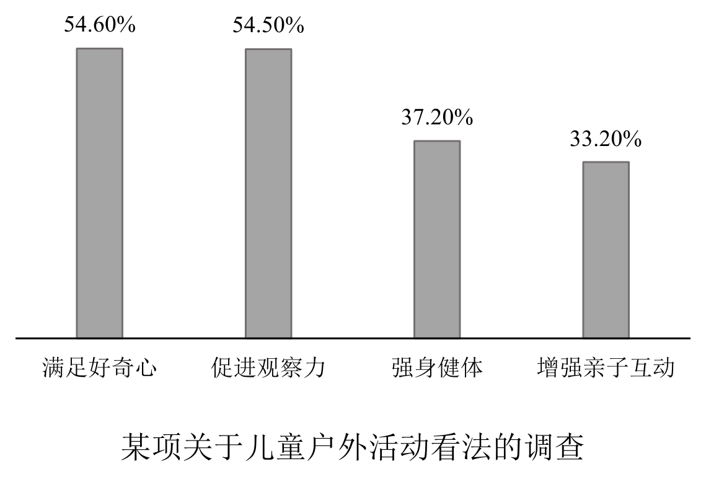

yy-2026-01
📄 原文 · 完整保留，点击展开/收起▾
Read the following text. Choose the best word(s) for each numbered blank and mark A, B, C or D on the ANSWER SHEET. (10 points)
Most of us strive for self-respect — to see ourselves in a positive light, to be __1__ of who we are. Any comments or experiences that undermine those feelings of self-worth can be uncomfortable and it’s only __2__ to want to avoid them. But the thing is, __3__ your self-worth really is being undermined is, to a large degree, subjective. Much of it comes down to your __4__ of what someone said or did.
When you take things personally, you’re interpreting these situations as saying something significant and negative about you as a person. Say your boss picks holes in your sales report, and you come away feeling like this means she thinks you’re a __5__ member of staff. Or, two of your friends cancel your __6__ get-together at the pub and you interpret this as meaning they’re bored of you. Psychologists have a __7__ for this way of thinking: personalisation.
But the __8__ is that your boss might view you very highly. It’s just you made some __9__ in the report and she wanted to point these out so that you do better next time. __10__ , in the case of your friends cancelling, perhaps they both felt unwell that weekend or they just __11__ their minds.
In both __12__ — and others that we all experience — there’s another __13__ at work that psychologists call mind reading. This is when you assume to know what other people are thinking about you, when you can’t really know without __14__ them directly.
One simple way to avoid __15__ personalisation and mind reading is to challenge your negative assumptions of what’s __16__ . When you find yourself taking a situation personally, try to think of other interpretations that are less focused on you — especially in the sense of saying anything deep or __17__ about you.
When you do this, it might help to try to put yourself in other people’s shoes. The fact your boss took the time to give you __18__ at all means they care enough to want to help you __19__ . When it comes to your friends — maybe it’s because your friendship is so __20__ that they felt able to cancel at late notice.
第 1 题 · 本题位置已在原文中高亮（完形空位 / 新题型段落），请结合原文选出正确选项
答案：C
本题讲解：2026 完形第 1 空 · 并列同义复现 · 破折号后的两个不定式
答案：C（proud 自豪的；骄傲的）。
第 0 步：先立机制——破折号后的不定式在「解释」self-respect
句子先抛出总概念 self-respect（自尊），破折号后立刻用两个并列的不定式给它下定义：to see ourselves in a positive light（积极看待自己）、to be __1__ of who we are（____ 我们是谁）。两个不定式由逗号并列、共用 to，语义上必须同向——都在描述一种正向的自我评价。这是完形填空里典型的「同义复现」结构：破折号不是闲笔，而是把答案的语义提前写在了隔壁。
第 1 步：定位原文，抽证据
Most of us strive for self-respect — to see ourselves in a positive light, to be __1__ of who we are.
- strive for = 努力追求，说明 self-respect 是人人向往的理想状态；
- in a positive light = 以积极的眼光，定下褒义基调；
- be __1__ of who we are 与 to see ourselves in a positive light 并列，空格必须是褒义且能接 of 的形容词。
第 2 步：对号入座：四个选项逐个上桌
| 选项 | 词义 | 判定 | 理由 |
|---|---|---|---|
| A afraid | 害怕的 | ✗ 排除 | be afraid of who we are = 害怕自己是谁；恐惧与「积极看待自己」方向相反。 |
| B critical | 挑剔的；批判的 | ✗ 排除 | be critical of = 对……挑剔；挑剔自己恰恰是后文 undermine self-worth 的行为，不是 self-respect 的内涵。 |
| C proud | 自豪的；骄傲的 | ✓ 当选 | be proud of who we are = 为我们是谁而自豪；与 in a positive light 同义复现，be proud of 也是固定搭配。 |
| D tolerant | 容忍的；宽容的 | ✗ 排除 | be tolerant of = 容忍、将就；容忍只是被动接受，达不到 strive for 所追求的积极自豪。 |
第 3 步：结论——回填验证
Most of us strive for self-respect — to see ourselves in a positive light, to be proud of who we are. 句义：我们大多数人都追求自尊——以积极的眼光看待自己，为自己是谁而自豪。两个不定式一个说「看法」、一个说「情感」，都落在褒义一侧，语义链闭合。
易错点
- 把「在意自己」读成「害怕自己」→ 误选 A（afraid）：空格不是「担心自己不够好」，而是与 positive light 并列的正向评价。
- 把后文「批判会伤害自尊」提前塞进空格 → 误选 B（critical）：critical 正是文中要防御的行为（comments that undermine），不是 self-respect 定义的一部分。
- 把「接纳自己」当成「自豪」→ 误选 D（tolerant）：tolerant 是消极底线、被动忍受；strive for 说明所求的是主动的、积极的高评价。
记忆锚点：破折号后的并列不定式 = 同义复现；positive light 的隔壁就是 proud of。
yy-2026-02
📄 原文 · 完整保留，点击展开/收起▾
Read the following text. Choose the best word(s) for each numbered blank and mark A, B, C or D on the ANSWER SHEET. (10 points)
Most of us strive for self-respect — to see ourselves in a positive light, to be __1__ of who we are. Any comments or experiences that undermine those feelings of self-worth can be uncomfortable and it’s only __2__ to want to avoid them. But the thing is, __3__ your self-worth really is being undermined is, to a large degree, subjective. Much of it comes down to your __4__ of what someone said or did.
When you take things personally, you’re interpreting these situations as saying something significant and negative about you as a person. Say your boss picks holes in your sales report, and you come away feeling like this means she thinks you’re a __5__ member of staff. Or, two of your friends cancel your __6__ get-together at the pub and you interpret this as meaning they’re bored of you. Psychologists have a __7__ for this way of thinking: personalisation.
But the __8__ is that your boss might view you very highly. It’s just you made some __9__ in the report and she wanted to point these out so that you do better next time. __10__ , in the case of your friends cancelling, perhaps they both felt unwell that weekend or they just __11__ their minds.
In both __12__ — and others that we all experience — there’s another __13__ at work that psychologists call mind reading. This is when you assume to know what other people are thinking about you, when you can’t really know without __14__ them directly.
One simple way to avoid __15__ personalisation and mind reading is to challenge your negative assumptions of what’s __16__ . When you find yourself taking a situation personally, try to think of other interpretations that are less focused on you — especially in the sense of saying anything deep or __17__ about you.
When you do this, it might help to try to put yourself in other people’s shoes. The fact your boss took the time to give you __18__ at all means they care enough to want to help you __19__ . When it comes to your friends — maybe it’s because your friendship is so __20__ that they felt able to cancel at late notice.
第 2 题 · 本题位置已在原文中高亮（完形空位 / 新题型段落），请结合原文选出正确选项
答案：B
本题讲解：2026 完形第 2 空 · 固定句式 it's only natural to do · 先让步后转折
答案：B（natural 自然的；正常的）。
第 0 步：先立机制——it's only natural to do 是固定句式，But 是它的「反转开关」
it's only natural to do sth 是英语里的固定表达：做某事「再自然不过」「人之常情」。这里的 only 不是「仅仅」，而是加强语气——「只是（很）自然」。这类填空题必须连着下文读：本段随后用 But the thing is 转折，作者先承认「想回避」合情合理，再反转说「是否真的被伤害其实是主观的」。所以空格要装的是一个即将被转折的常理，而不是被提前否定的错事。
第 1 步：定位原文，抽证据
Any comments or experiences that undermine those feelings of self-worth can be uncomfortable and it's only __2__ to want to avoid them.
- 前半句 can be uncomfortable（会让人不适）已经给出情绪因果；
- 后半句 it's only __2__ to want to avoid them 是「不适 → 想回避」的推论；
- 下一句 But the thing is ... is, to a large degree, subjective 立即转折——先让步，后翻案。
第 2 步：对号入座：四个选项逐个上桌
| 选项 | 词义 | 判定 | 理由 |
|---|---|---|---|
| A risky | 有风险的 | ✗ 排除 | 回避的「风险」不是本句在讲的因果关系；且若已判定有风险，后面就不必用 But 再翻案。 |
| B natural | 自然的；正常的 | ✓ 当选 | it's only natural to want to avoid them = 想回避再自然不过；承接 uncomfortable 的因果，也给 But 的转折留足空间。 |
| C admirable | 值得赞赏的 | ✗ 排除 | 评价过高：回避负面评论谈不上值得赞赏，转折句也不会去修正一个褒义判断。 |
| D foolish | 愚蠢的 | ✗ 排除 | 直接贬低，把「人之常情」提前否定；这样 But 就失去转折对象，篇章逻辑断裂。 |
第 3 步：结论——回填验证
Any comments or experiences that undermine those feelings of self-worth can be uncomfortable and it's only natural to want to avoid them. 句义：任何削弱自我价值感的评论或经历都会让人不适，想回避它们是再自然不过的。紧接着 But 一转，指出「是否真的被削弱」是主观的——先共情、后说理，逻辑顺滑。
易错点
- 带着「逃避不好」的道德判断选 D（foolish）：作者先共情（uncomfortable），foolish 会让 But 的转折失去对象。
- 把后文「可能误判」提前塞进空格 → 误选 A（risky）：risky 评价的是行为后果，本句只讲心理反应。
- 看到 avoid 就往「值得赞赏」上想 → 误选 C（admirable）：admirable 与 only natural 的语气完全不是一个量级。
记忆锚点：it's only natural to do = 人之常情；先让步、后 But 转折——空格装的是那个「常理」。
yy-2026-03
📄 原文 · 完整保留，点击展开/收起▾
Read the following text. Choose the best word(s) for each numbered blank and mark A, B, C or D on the ANSWER SHEET. (10 points)
Most of us strive for self-respect — to see ourselves in a positive light, to be __1__ of who we are. Any comments or experiences that undermine those feelings of self-worth can be uncomfortable and it’s only __2__ to want to avoid them. But the thing is, __3__ your self-worth really is being undermined is, to a large degree, subjective. Much of it comes down to your __4__ of what someone said or did.
When you take things personally, you’re interpreting these situations as saying something significant and negative about you as a person. Say your boss picks holes in your sales report, and you come away feeling like this means she thinks you’re a __5__ member of staff. Or, two of your friends cancel your __6__ get-together at the pub and you interpret this as meaning they’re bored of you. Psychologists have a __7__ for this way of thinking: personalisation.
But the __8__ is that your boss might view you very highly. It’s just you made some __9__ in the report and she wanted to point these out so that you do better next time. __10__ , in the case of your friends cancelling, perhaps they both felt unwell that weekend or they just __11__ their minds.
In both __12__ — and others that we all experience — there’s another __13__ at work that psychologists call mind reading. This is when you assume to know what other people are thinking about you, when you can’t really know without __14__ them directly.
One simple way to avoid __15__ personalisation and mind reading is to challenge your negative assumptions of what’s __16__ . When you find yourself taking a situation personally, try to think of other interpretations that are less focused on you — especially in the sense of saying anything deep or __17__ about you.
When you do this, it might help to try to put yourself in other people’s shoes. The fact your boss took the time to give you __18__ at all means they care enough to want to help you __19__ . When it comes to your friends — maybe it’s because your friendship is so __20__ that they felt able to cancel at late notice.
第 3 题 · 本题位置已在原文中高亮（完形空位 / 新题型段落），请结合原文选出正确选项
答案：A
本题讲解：2026 完形第 3 空 · 主语从句引导词 · whether 表「是否」
答案：A（whether 是否）。
第 0 步：先立机制——先拆句子骨架，再选引导词
空格在句首、后面又跟着 is，先做一件事：找谓语、拆从句。本句骨架是 the thing is, [从句] is, to a large degree, subjective——the thing is 后面是表语从句；该表语从句自己的主语是「__3__ your self-worth really is being undermined」，谓语是 is，表语是 subjective。空格只负责给这个主语从句选引导词，判断标准只有一个：从句要表达什么意思。
- really（真的）透露怀疑：被削弱的事实是否成立存疑；
- subjective（主观的）说明争点在「有没有」而不是「为什么」；
- 同段末 your perception of what someone said or did 进一步确认：判断权在你的解读。
第 1 步：定位原文，抽证据
But the thing is, __3__ your self-worth really is being undermined is, to a large degree, subjective. Much of it comes down to your __4__ of what someone said or did.
上一句说「想回避」是人之常情，本句 But 反转：问题在于「你的自我价值是否真的被削弱」这件事在很大程度上是主观的。whether 引导主语从句，意为「是否」，后面用陈述语序 your self-worth really is being undermined——从句不做疑问倒装。
第 2 步：对号入座：四个选项逐个上桌
| 选项 | 词义 | 判定 | 理由 |
|---|---|---|---|
| A whether | 是否 | ✓ 当选 | whether ... is subjective = 「是否真的被削弱」是主观的；与 really 的存疑语气、perception 的解读主线完全咬合。 |
| B where | 在哪里 | ✗ 排除 | 文章不讨论自我价值「在哪个场合」被削弱；where 从句填进去语义悬空。 |
| C why | 为什么 | ✗ 排除 | 不能说「被削弱的原因主观」——本段争点是伤害有没有发生，而不是原因是什么。 |
| D how | 如何；怎样 | ✗ 排除 | 「如何被削弱」问的是方式，同样答非所问；perception 决定的是「有没有」，不是「怎么」。 |
第 3 步：结论——回填验证
But the thing is, whether your self-worth really is being undermined is, to a large degree, subjective. 句义：但问题在于，你的自我价值是否真的受到了削弱，在很大程度上是一个主观判断。主语从句由 whether 引导、用陈述语序，语法与逻辑双过关。
易错点
- 看到「如何被削弱」顺口就选 how → 误选 D：how 问方式，本段问「是否发生」。
- 把「原因主观」当成合理说法 → 误选 C（why）：后文 perception 解释的是判断有无，而非归因。
- 忽略 whether 从句的语序：whether your self-worth really is being undermined 是陈述语序，不能倒装；另外句首主语从句不能用 if。
记忆锚点：really + subjective = 对事实存疑 → whether（是否）；主语从句用陈述语序。
yy-2026-04
📄 原文 · 完整保留，点击展开/收起▾
Read the following text. Choose the best word(s) for each numbered blank and mark A, B, C or D on the ANSWER SHEET. (10 points)
Most of us strive for self-respect — to see ourselves in a positive light, to be __1__ of who we are. Any comments or experiences that undermine those feelings of self-worth can be uncomfortable and it’s only __2__ to want to avoid them. But the thing is, __3__ your self-worth really is being undermined is, to a large degree, subjective. Much of it comes down to your __4__ of what someone said or did.
When you take things personally, you’re interpreting these situations as saying something significant and negative about you as a person. Say your boss picks holes in your sales report, and you come away feeling like this means she thinks you’re a __5__ member of staff. Or, two of your friends cancel your __6__ get-together at the pub and you interpret this as meaning they’re bored of you. Psychologists have a __7__ for this way of thinking: personalisation.
But the __8__ is that your boss might view you very highly. It’s just you made some __9__ in the report and she wanted to point these out so that you do better next time. __10__ , in the case of your friends cancelling, perhaps they both felt unwell that weekend or they just __11__ their minds.
In both __12__ — and others that we all experience — there’s another __13__ at work that psychologists call mind reading. This is when you assume to know what other people are thinking about you, when you can’t really know without __14__ them directly.
One simple way to avoid __15__ personalisation and mind reading is to challenge your negative assumptions of what’s __16__ . When you find yourself taking a situation personally, try to think of other interpretations that are less focused on you — especially in the sense of saying anything deep or __17__ about you.
When you do this, it might help to try to put yourself in other people’s shoes. The fact your boss took the time to give you __18__ at all means they care enough to want to help you __19__ . When it comes to your friends — maybe it’s because your friendship is so __20__ that they felt able to cancel at late notice.
第 4 题 · 本题位置已在原文中高亮（完形空位 / 新题型段落），请结合原文选出正确选项
答案：C
本题讲解：2026 完形第 4 空 · 语义复现 · subjective ↔ perception
答案：C（perception 感知；看法）。
第 0 步：先立机制——上一句的形容词，下一句的名词
完形填空的段落是「概念—解释」的链条。第 3 空所在句刚给出结论：是否被削弱「是主观的（subjective）」；紧接着这句 Much of it comes down to your __4__ of what someone said or did 就是在解释主观性从哪里来。comes down to = 归结为、取决于。所以空格必须是一个表示「主观加工他人言行」的名词——把 subjective 换一个词性再说一遍。
第 1 步：定位原文，抽证据
Much of it comes down to your __4__ of what someone said or did.
- it 回指上一句「自我价值是否真的被削弱」；
- come down to = 归结为，后面接的就是答案所在；
- your __4__ of what someone said or did = 你对「某人说了什么、做了什么」的 ____；
- 第 2 段开头马上复现动词：you're interpreting these situations as saying something significant and negative about you——interpreting（解读）正是 perception 的动作版。
第 2 步：对号入座：四个选项逐个上桌
| 选项 | 词义 | 判定 | 理由 |
|---|---|---|---|
| A citation | 引用；引文 | ✗ 排除 | citation 指书面「引用」，通常接文献来源；对他人言行不存在「引用」这层关系。 |
| B imitation | 模仿 | ✗ 排除 | 模仿他人言行与「是否觉得被削弱」无关；文章讲的是解读，不是效仿。 |
| C perception | 感知；看法 | ✓ 当选 | your perception of what someone said or did = 你对他人言行的主观解读；与 subjective 呼应、与 interpreting 同源复现。 |
| D introduction | 介绍；引入 | ✗ 排除 | introduction of sth 是「引入某物」，与 of what someone said or did 搭配讲不通。 |
第 3 步：结论——回填验证
Much of it comes down to your perception of what someone said or did. 句义：这在很大程度上取决于你对某人言行的看法。subjective（形容词）→ perception（名词）→ interpreting（动词），三处同义复现，语义闭环。
易错点
- 看到 of what someone said 就选 citation → 误选 A：citation 是「引文」，不是「解读」；引文是客观的，文章讲的恰恰是主观加工。
- 把 imitation 的「跟别人有关」误当「对别人言行的反应」→ 误选 B：模仿是照着做，解读是赋予意义，两回事。
- introduction 只凭「of 接名词」通顺 → 误选 D：搭配对但语义错，introduction of 意为「引入」，与语境无关。
记忆锚点：subjective 的下一步必是 perception——主观，就是「你怎么看」；interpreting 是它的动词形态。
yy-2026-05
📄 原文 · 完整保留，点击展开/收起▾
Read the following text. Choose the best word(s) for each numbered blank and mark A, B, C or D on the ANSWER SHEET. (10 points)
Most of us strive for self-respect — to see ourselves in a positive light, to be __1__ of who we are. Any comments or experiences that undermine those feelings of self-worth can be uncomfortable and it’s only __2__ to want to avoid them. But the thing is, __3__ your self-worth really is being undermined is, to a large degree, subjective. Much of it comes down to your __4__ of what someone said or did.
When you take things personally, you’re interpreting these situations as saying something significant and negative about you as a person. Say your boss picks holes in your sales report, and you come away feeling like this means she thinks you’re a __5__ member of staff. Or, two of your friends cancel your __6__ get-together at the pub and you interpret this as meaning they’re bored of you. Psychologists have a __7__ for this way of thinking: personalisation.
But the __8__ is that your boss might view you very highly. It’s just you made some __9__ in the report and she wanted to point these out so that you do better next time. __10__ , in the case of your friends cancelling, perhaps they both felt unwell that weekend or they just __11__ their minds.
In both __12__ — and others that we all experience — there’s another __13__ at work that psychologists call mind reading. This is when you assume to know what other people are thinking about you, when you can’t really know without __14__ them directly.
One simple way to avoid __15__ personalisation and mind reading is to challenge your negative assumptions of what’s __16__ . When you find yourself taking a situation personally, try to think of other interpretations that are less focused on you — especially in the sense of saying anything deep or __17__ about you.
When you do this, it might help to try to put yourself in other people’s shoes. The fact your boss took the time to give you __18__ at all means they care enough to want to help you __19__ . When it comes to your friends — maybe it’s because your friendship is so __20__ that they felt able to cancel at late notice.
第 5 题 · 本题位置已在原文中高亮（完形空位 / 新题型段落），请结合原文选出正确选项
答案：A
本题讲解：2026 完形第 5 空 · 褒贬方向 · 负面自我解读
答案：A（poor 差的；不称职的）。
第 0 步：先立机制——先定褒贬，再挑词义
完形填空里的形容词题，第一步不是翻译选项，而是问：上下文要求这个词是褒义还是贬义？ 本段第一句已经给 take things personally 下了定义：interpreting these situations as saying something significant and negative about you as a person（把情境解读成关于你这个人的、重大的、负面的评价）。所以空格必须是负面的「员工评价」词——定完褒贬，才轮到词义辨析。
第 1 步：定位原文，抽证据
Say your boss picks holes in your sales report, and you come away feeling like this means she thinks you're a __5__ member of staff.
- Say = 假设（比如说）；
- picks holes in = 挑毛病、找漏洞；
- come away feeling like this means... = 你事后把这件事解读成……；
- 前一句的 negative 是硬约束：空格只能是负面评价；
- 第 3 段反义镜面：But the reality is that your boss might view you very highly——very highly 与空格构成反义对照。
第 2 步：对号入座：四个选项逐个上桌
| 选项 | 词义 | 判定 | 理由 |
|---|---|---|---|
| A poor | 差的；不称职的 | ✓ 当选 | a poor member of staff = 不称职的员工；与 pick holes、negative 同向，并与后文 view you very highly 构成反义。 |
| B loyal | 忠诚的 | ✗ 排除 | 褒义品质词；挑刺报告推不出「她觉得我不忠」，方向与 negative 相反。 |
| C creative | 有创造力的 | ✗ 排除 | 褒义能力词，与「重大负面评价」的定性不符。 |
| D shy | 害羞的 | ✗ 排除 | 与工作表现无关的性格词；报告被挑刺到「害羞」之间没有语义通道。 |
第 3 步：结论——回填验证
Say your boss picks holes in your sales report, and you come away feeling like this means she thinks you're a poor member of staff. 句义：假设老板挑你销售报告的毛病，你事后就觉得，这意味着她认为你是个不称职的员工。负面解读成立，也正因如此，第 3 段才有「其实老板可能很看重你」的反转。
易错点
- 把「挑刺」过度联想成「不信任、怀疑忠诚」→ 误选 B（loyal）：文章要的是对能力的负面评价，不是忠诚审查。
- 看到 staff 就想配正面能力词 → 误选 C（creative）：忽略 negative 的硬约束，褒贬方向反了。
- 把性格形容词当万能选项 → 误选 D（shy）：shy 与工作表现、与挑刺行为都无逻辑关系。
记忆锚点：take things personally = 把中性事件读成 negative about you；后文 very highly 是 poor 的镜像反义。
yy-2026-06
📄 原文 · 完整保留，点击展开/收起▾
Read the following text. Choose the best word(s) for each numbered blank and mark A, B, C or D on the ANSWER SHEET. (10 points)
Most of us strive for self-respect — to see ourselves in a positive light, to be __1__ of who we are. Any comments or experiences that undermine those feelings of self-worth can be uncomfortable and it’s only __2__ to want to avoid them. But the thing is, __3__ your self-worth really is being undermined is, to a large degree, subjective. Much of it comes down to your __4__ of what someone said or did.
When you take things personally, you’re interpreting these situations as saying something significant and negative about you as a person. Say your boss picks holes in your sales report, and you come away feeling like this means she thinks you’re a __5__ member of staff. Or, two of your friends cancel your __6__ get-together at the pub and you interpret this as meaning they’re bored of you. Psychologists have a __7__ for this way of thinking: personalisation.
But the __8__ is that your boss might view you very highly. It’s just you made some __9__ in the report and she wanted to point these out so that you do better next time. __10__ , in the case of your friends cancelling, perhaps they both felt unwell that weekend or they just __11__ their minds.
In both __12__ — and others that we all experience — there’s another __13__ at work that psychologists call mind reading. This is when you assume to know what other people are thinking about you, when you can’t really know without __14__ them directly.
One simple way to avoid __15__ personalisation and mind reading is to challenge your negative assumptions of what’s __16__ . When you find yourself taking a situation personally, try to think of other interpretations that are less focused on you — especially in the sense of saying anything deep or __17__ about you.
When you do this, it might help to try to put yourself in other people’s shoes. The fact your boss took the time to give you __18__ at all means they care enough to want to help you __19__ . When it comes to your friends — maybe it’s because your friendship is so __20__ that they felt able to cancel at late notice.
第 6 题 · 本题位置已在原文中高亮（完形空位 / 新题型段落），请结合原文选出正确选项
答案：D
本题讲解：2026 完形第 6 空 · 搭配逻辑 · cancel 的宾语必须是「已安排之事」
答案：D（planned 计划好的）。
第 0 步：先立机制——动词给宾语设「语义前提」
cancel（取消）这个词有天然的语义前提：被取消的东西必须是已经安排好的——没有计划，就无所谓取消。所以 your __6__ get-together 里的形容词，必须回答「聚会处在什么状态」，而这个状态要能支撑 cancel 这个动作。这类题不靠翻译，靠动词给名词设的前提。
第 1 步：定位原文，抽证据
Or, two of your friends cancel your __6__ get-together at the pub and you interpret this as meaning they're bored of you.
- your __6__ get-together at the pub = 你们在酒吧的 ____ 聚会；
- cancel 是谓语的硬约束：聚会必须先是「定好的」；
- 后半句 you interpret this as meaning they're bored of you 是主观解读，题目问的是聚会本身的状态，不要被它带跑。
第 2 步：对号入座：四个选项逐个上桌
| 选项 | 词义 | 判定 | 理由 |
|---|---|---|---|
| A sponsored | 赞助的 | ✗ 排除 | 赞助与取消不冲突，但文章没有任何「赞助」信息；凭空加戏。 |
| B crowded | 拥挤的 | ✗ 排除 | crowded 描述聚会现场状态；聚会还没办就被取消，谈不上拥挤——状态与时间错位。 |
| C disputed | 有争议的 | ✗ 排除 | 「有争议的聚会」与取消无关，且 disputed 极少修饰 get-together。 |
| D planned | 计划好的 | ✓ 当选 | your planned get-together = 你原定计划的聚会；先有计划才有取消，与 cancel 的语义前提严丝合缝。 |
第 3 步：结论——回填验证
Or, two of your friends cancel your planned get-together at the pub... 句义：或者，两个朋友取消了你们原定在酒吧的聚会，而你把这解读成他们厌烦你了。planned 给了 cancel 一个合法的宾语，后面的「解读成厌烦」才立得住。
易错点
- 见形容词就凭画面感选 crowded → 误选 B：聚会尚未举行，现场状态无从谈起。
- 把「朋友请客」脑补成 sponsored → 误选 A：文章没有赞助信息，属于无据加戏。
- 把「有争议」当万能修饰 → 误选 C（disputed）：disputed 与 cancel、get-together 都不构成常规搭配。
记忆锚点：cancel 的对象 = 已经安排好的事；planned 是 cancel 的语义前提。
yy-2026-07
📄 原文 · 完整保留，点击展开/收起▾
Read the following text. Choose the best word(s) for each numbered blank and mark A, B, C or D on the ANSWER SHEET. (10 points)
Most of us strive for self-respect — to see ourselves in a positive light, to be __1__ of who we are. Any comments or experiences that undermine those feelings of self-worth can be uncomfortable and it’s only __2__ to want to avoid them. But the thing is, __3__ your self-worth really is being undermined is, to a large degree, subjective. Much of it comes down to your __4__ of what someone said or did.
When you take things personally, you’re interpreting these situations as saying something significant and negative about you as a person. Say your boss picks holes in your sales report, and you come away feeling like this means she thinks you’re a __5__ member of staff. Or, two of your friends cancel your __6__ get-together at the pub and you interpret this as meaning they’re bored of you. Psychologists have a __7__ for this way of thinking: personalisation.
But the __8__ is that your boss might view you very highly. It’s just you made some __9__ in the report and she wanted to point these out so that you do better next time. __10__ , in the case of your friends cancelling, perhaps they both felt unwell that weekend or they just __11__ their minds.
In both __12__ — and others that we all experience — there’s another __13__ at work that psychologists call mind reading. This is when you assume to know what other people are thinking about you, when you can’t really know without __14__ them directly.
One simple way to avoid __15__ personalisation and mind reading is to challenge your negative assumptions of what’s __16__ . When you find yourself taking a situation personally, try to think of other interpretations that are less focused on you — especially in the sense of saying anything deep or __17__ about you.
When you do this, it might help to try to put yourself in other people’s shoes. The fact your boss took the time to give you __18__ at all means they care enough to want to help you __19__ . When it comes to your friends — maybe it’s because your friendship is so __20__ that they felt able to cancel at late notice.
第 7 题 · 本题位置已在原文中高亮（完形空位 / 新题型段落），请结合原文选出正确选项
答案：B
本题讲解：2026 完形第 7 空 · 冒号命名关系 · have a term for
答案：B（term 术语；名称）。
第 0 步：先立机制——冒号是一个「等号」，不是摆设
英文里的冒号常用来解释、命名：冒号前抛出一个待说明的成分，冒号后直接给出内容。本句冒号后只有一个词——personalisation（人格化）。它是什么？是心理学家给 this way of thinking（这种思维方式）起的名字。所以空格必须是一个「名称、叫法」类名词：have a term for sth = 对某事物有一个术语。
第 1 步：定位原文，抽证据
Psychologists have a __7__ for this way of thinking: personalisation.
- have a __7__ for sth = 对某事物拥有一个 ____；
- 冒号后 personalisation 是一个专有名词，只能是这个 ____ 的「值」；
- 前文 this way of thinking 回指「把别人的言行解读成对自己的负面评价」这种思维模式；
- 命名关系：名称 ↔ 所指。
第 2 步：对号入座：四个选项逐个上桌
| 选项 | 词义 | 判定 | 理由 |
|---|---|---|---|
| A method | 方法 | ✗ 排除 | personalisation 是思维模式的名称，不是应对它的方法；冒号后没有给出操作步骤。 |
| B term | 术语；名称 | ✓ 当选 | have a term for sth = 对……有一个术语；冒号后的 personalisation 正是这个术语。 |
| C design | 设计 | ✗ 排除 | design for 是「为……设计」，与命名无关；冒号后也不是设计方案。 |
| D goal | 目标 | ✗ 排除 | personalisation 不是心理学家追求的目标，而是他们命名的对象。 |
第 3 步：结论——回填验证
Psychologists have a term for this way of thinking: personalisation. 句义：心理学家对这种思维方式有一个术语：人格化。冒号前后构成「术语—名称」的对应，语义闭合。
易错点
- 把 have a __ for 读成「有办法」→ 误选 A（method）：冒号后给的是名字，不是办法；命名关系只能由 term 承担。
- 把「心理学家研究它」误读成「以它为目标」→ 误选 D（goal）：研究对象不等于目标。
- design 只凭 for 搭配顺口 → 误选 C：搭配对、语义错，冒号后的内容无法充当「设计」。
记忆锚点：冒号前留空、冒号后一个专有名词 = 命名关系；have a term for sth。
yy-2026-08
📄 原文 · 完整保留，点击展开/收起▾
Read the following text. Choose the best word(s) for each numbered blank and mark A, B, C or D on the ANSWER SHEET. (10 points)
Most of us strive for self-respect — to see ourselves in a positive light, to be __1__ of who we are. Any comments or experiences that undermine those feelings of self-worth can be uncomfortable and it’s only __2__ to want to avoid them. But the thing is, __3__ your self-worth really is being undermined is, to a large degree, subjective. Much of it comes down to your __4__ of what someone said or did.
When you take things personally, you’re interpreting these situations as saying something significant and negative about you as a person. Say your boss picks holes in your sales report, and you come away feeling like this means she thinks you’re a __5__ member of staff. Or, two of your friends cancel your __6__ get-together at the pub and you interpret this as meaning they’re bored of you. Psychologists have a __7__ for this way of thinking: personalisation.
But the __8__ is that your boss might view you very highly. It’s just you made some __9__ in the report and she wanted to point these out so that you do better next time. __10__ , in the case of your friends cancelling, perhaps they both felt unwell that weekend or they just __11__ their minds.
In both __12__ — and others that we all experience — there’s another __13__ at work that psychologists call mind reading. This is when you assume to know what other people are thinking about you, when you can’t really know without __14__ them directly.
One simple way to avoid __15__ personalisation and mind reading is to challenge your negative assumptions of what’s __16__ . When you find yourself taking a situation personally, try to think of other interpretations that are less focused on you — especially in the sense of saying anything deep or __17__ about you.
When you do this, it might help to try to put yourself in other people’s shoes. The fact your boss took the time to give you __18__ at all means they care enough to want to help you __19__ . When it comes to your friends — maybe it’s because your friendship is so __20__ that they felt able to cancel at late notice.
第 8 题 · 本题位置已在原文中高亮（完形空位 / 新题型段落），请结合原文选出正确选项
答案：D
本题讲解：2026 完形第 8 空 · 转折对照 · subjective 的反面是 reality
答案：D（reality 现实；事实）。
第 0 步：先立机制——But 后面站着的，是前文的「反义词」
第 1 段末尾刚说：是否被削弱在很大程度上是 subjective（主观的）。第 3 段开头 But the __8__ is that your boss might view you very highly——But 一出现，说明要摆出与「主观解读」相反的东西：客观事实。the reality is that... 是固定表达「事实是……」，正好与 subjective 形成「主观 vs 现实」的篇章对照。
第 1 步：定位原文，抽证据
But the __8__ is that your boss might view you very highly. It's just you made some __9__ in the report and she wanted to point these out so that you do better next time.
- But 转折上一段的 personalisation（主观的负面解读）；
- your boss might view you very highly = 老板可能对你评价很高——与你的「她觉得我不称职」正相反；
- 后文 It's just you made some mistakes in the report... 给出真实原因；
- 「主观感受」与「客观事实」的对立，要求空格是「事实、现实」。
第 2 步：对号入座：四个选项逐个上桌
| 选项 | 词义 | 判定 | 理由 |
|---|---|---|---|
| A evidence | 证据 | ✗ 排除 | evidence is that... 通常后接证据链；本句直接陈述事实，且 evidence 与 subjective 不构成对照。 |
| B theory | 理论 | ✗ 排除 | 理论恰恰可能是主观的，与 But 要揭示真相的方向不符。 |
| C condition | 条件；状况 | ✗ 排除 | the condition is that... 语法可通，但把句子变成「条件是老板看重你」，与转折逻辑无关。 |
| D reality | 现实；事实 | ✓ 当选 | the reality is that... 固定表达「事实是」；与 subjective 对照，后文给出与主观解读相反的事实。 |
第 3 步：结论——回填验证
But the reality is that your boss might view you very highly. 句义：但事实是，老板可能对你评价很高。reality 承接 But 的转折，把「你觉得被否定」校正为「她其实很看重你」，篇章逻辑闭合。
易错点
- 把 But 理解成「但是有证据表明」→ 误选 A（evidence）：空格后是直接陈述事实，不是罗列证据；且 evidence 与 subjective 不构成反义。
- 受前文「心理学家」的记忆干扰选 theory → 误选 B：本段在讲事实校正，不在讲理论。
- 只求语法通顺选 condition → 误选 C：语法对但篇章功能错，the condition is that 会把转折句变成条件句。
记忆锚点：But + the reality is that = 主观解读的镜像校正；subjective 的反面是 reality。
yy-2026-09
📄 原文 · 完整保留，点击展开/收起▾
Read the following text. Choose the best word(s) for each numbered blank and mark A, B, C or D on the ANSWER SHEET. (10 points)
Most of us strive for self-respect — to see ourselves in a positive light, to be __1__ of who we are. Any comments or experiences that undermine those feelings of self-worth can be uncomfortable and it’s only __2__ to want to avoid them. But the thing is, __3__ your self-worth really is being undermined is, to a large degree, subjective. Much of it comes down to your __4__ of what someone said or did.
When you take things personally, you’re interpreting these situations as saying something significant and negative about you as a person. Say your boss picks holes in your sales report, and you come away feeling like this means she thinks you’re a __5__ member of staff. Or, two of your friends cancel your __6__ get-together at the pub and you interpret this as meaning they’re bored of you. Psychologists have a __7__ for this way of thinking: personalisation.
But the __8__ is that your boss might view you very highly. It’s just you made some __9__ in the report and she wanted to point these out so that you do better next time. __10__ , in the case of your friends cancelling, perhaps they both felt unwell that weekend or they just __11__ their minds.
In both __12__ — and others that we all experience — there’s another __13__ at work that psychologists call mind reading. This is when you assume to know what other people are thinking about you, when you can’t really know without __14__ them directly.
One simple way to avoid __15__ personalisation and mind reading is to challenge your negative assumptions of what’s __16__ . When you find yourself taking a situation personally, try to think of other interpretations that are less focused on you — especially in the sense of saying anything deep or __17__ about you.
When you do this, it might help to try to put yourself in other people’s shoes. The fact your boss took the time to give you __18__ at all means they care enough to want to help you __19__ . When it comes to your friends — maybe it’s because your friendship is so __20__ that they felt able to cancel at late notice.
第 9 题 · 本题位置已在原文中高亮（完形空位 / 新题型段落），请结合原文选出正确选项
答案：C
本题讲解：2026 完形第 9 空 · 目的状语反推 · so that you do better next time 指向「错误」
答案：C（mistakes 错误；差错）。
第 0 步：先立机制——It's just… 是对「被挑刺」的重新解释
第 3 段的论证方向是「主观解读 vs 客观事实」：你认定老板挑刺就等于她看不起你；But the reality is… 之后，作者用 It's just… 把同一件事解释成中性的、甚至善意的行为。空格所在的正是这个「重新解释」句：老板指出的对象是什么，不能靠语感猜，要由后半句的目的状语 so that you do better next time 反推——她指出这些，是为了让你「下次做得更好」，说明被指出的是这次没做好的地方。
第 1 步：定位原文，抽证据
But the reality is that your boss might view you very highly. It's just you made some __9__ in the report and she wanted to point these out so that you do better next time.
- point these out（把这些指出来）：these 回指空格的内容，被「指出」的通常是问题、毛病；
- so that you do better next time（以便你下次做得更好）：目的状语直接说明「这次不够好」，即报告里有差错；
- 与上文 picks holes in your sales report（挑毛病）呼应：老板挑的「刺」正是这些差错；
- 三条线索同向，锁定一个表示「可纠正的差错」的名词。
第 2 步：对号入座：四个选项逐个上桌
| 选项 | 词义 | 判定 | 理由 |
|---|---|---|---|
| A complaints | 投诉；抱怨 | ✗ 排除 | 报告里「提出投诉」与「指出后下次做得更好」没有因果；point out complaints 也说不通，被指出的是待改进之处。 |
| B choices | 选择 | ✗ 排除 | 中性词：被指出「选择」不会让人下次做得更好；与 picks holes（挑毛病）的负面方向不符。 |
| C mistakes | 错误；差错 | ✓ 当选 | 报告里的差错被指出→下次改进，目的状语、动宾搭配与篇章逻辑全部咬合。 |
| D suggestions | 建议 | ✗ 排除 | 老板的「指出」行为本身可以算建议，但空格是报告里的东西；建议是正面贡献，与「挑毛病—纠错」的语义链相反。 |
第 3 步：结论——回填验证
It's just you made some mistakes in the report and she wanted to point these out so that you do better next time. 句义：只是你报告里出了些差错，她想指出来，好让你下次做得更好。回填后「善意解释」成立，上文 personalisation 的负面解读被推翻，篇章逻辑闭合。
易错点：每个干扰项对应哪种误解
- 把「老板指出问题」误读成「报告里写了投诉」→ 误选 A（complaints）：complaints 是报告可能包含的内容，但 point these out 加 do better next time 要求被指出的是可纠正的差错。
- 只看到 make some choices 搭配成立 → 误选 B（choices）：搭配成立不等于语义成立；选择本身没有「对错—改进」的方向。
- 把「老板给建议」和「报告里有建议」混为一谈 → 误选 D（suggestions）：老板的指出行为可以叫建议，但空格填的是报告里的东西，且必须是负面的。
记忆锚点：看到 so that you do better next time，先问「指出什么才能让人下次做得更好」——答案是错误（mistakes），不是选择、建议或投诉。
yy-2026-10
📄 原文 · 完整保留，点击展开/收起▾
Read the following text. Choose the best word(s) for each numbered blank and mark A, B, C or D on the ANSWER SHEET. (10 points)
Most of us strive for self-respect — to see ourselves in a positive light, to be __1__ of who we are. Any comments or experiences that undermine those feelings of self-worth can be uncomfortable and it’s only __2__ to want to avoid them. But the thing is, __3__ your self-worth really is being undermined is, to a large degree, subjective. Much of it comes down to your __4__ of what someone said or did.
When you take things personally, you’re interpreting these situations as saying something significant and negative about you as a person. Say your boss picks holes in your sales report, and you come away feeling like this means she thinks you’re a __5__ member of staff. Or, two of your friends cancel your __6__ get-together at the pub and you interpret this as meaning they’re bored of you. Psychologists have a __7__ for this way of thinking: personalisation.
But the __8__ is that your boss might view you very highly. It’s just you made some __9__ in the report and she wanted to point these out so that you do better next time. __10__ , in the case of your friends cancelling, perhaps they both felt unwell that weekend or they just __11__ their minds.
In both __12__ — and others that we all experience — there’s another __13__ at work that psychologists call mind reading. This is when you assume to know what other people are thinking about you, when you can’t really know without __14__ them directly.
One simple way to avoid __15__ personalisation and mind reading is to challenge your negative assumptions of what’s __16__ . When you find yourself taking a situation personally, try to think of other interpretations that are less focused on you — especially in the sense of saying anything deep or __17__ about you.
When you do this, it might help to try to put yourself in other people’s shoes. The fact your boss took the time to give you __18__ at all means they care enough to want to help you __19__ . When it comes to your friends — maybe it’s because your friendship is so __20__ that they felt able to cancel at late notice.
第 10 题 · 本题位置已在原文中高亮（完形空位 / 新题型段落），请结合原文选出正确选项
答案：A
本题讲解：2026 完形第 10 空 · 句间逻辑 · 两个「善意解释」的平行类比
答案：A（Similarly 同样地）。
第 0 步：先立机制——逻辑连接词只看「前后句的语义关系」
连接词题最常见的错法是凭「读起来顺」选。正确做法是把空格前后的两句摆在一起，判断它们是什么关系：并列或类比、因果、转折，还是程度比较。本句前是老板挑刺的善意解释，本句是朋友取消约会的善意解释——同一段里两个结构平行的例子，关系是「同样地」。
第 1 步：定位原文，抽证据
It's just you made some mistakes in the report and she wanted to point these out so that you do better next time. __10__ , in the case of your friends cancelling, perhaps they both felt unwell that weekend or they just changed their minds.
- 前句 It's just you… 是对老板行为的中性解释；
- 本句 perhaps they both felt unwell… 是对朋友行为的中性解释；
- in the case of your friends cancelling 与上文 your boss picks holes 结构平行，是第二个例子；
- 段落走向始终是「别把别人的行为往自己身上解读」，两句同向，不构成转折。
第 2 步：对号入座：四个选项逐个上桌
| 选项 | 词义 | 判定 | 理由 |
|---|---|---|---|
| A Similarly | 同样地 | ✓ 当选 | 两个场景是同一逻辑的两次演示，用 Similarly 引出第二个平行例子最贴切。 |
| B Relatively | 相对地 | ✗ 排除 | 表程度比较，需要比较基准；这里没有「相对什么」的对照对象。 |
| C Accordingly | 因此；相应地 | ✗ 排除 | 表因果结果；朋友取消约会不是老板挑刺导致的结果。 |
| D Contrarily | 相反地 | ✗ 排除 | 表转折对立；两句方向一致，都在给行为找善意的解释。 |
第 3 步：结论——回填验证
Similarly, in the case of your friends cancelling, perhaps they both felt unwell that weekend… 句义：同样地，在朋友取消约会这件事上，也许他们那个周末都不舒服，或者只是改变了主意。回填后「老板—朋友」两个例子并排成立，「第二个善意解释」的段落功能实现。
易错点：每个干扰项对应哪种误解
- 把连接词一律当「顺承」→ 误选 C（Accordingly）：顺承不等于因果；朋友取消不是「因此」发生的。
- 被前文 But 的反转情绪带偏 → 误选 D（Contrarily）：整段虽在纠偏，但空格前后两句之间的关系是同向并列，不是对立。
- 看到 -ly 副词觉得学术、顺口 → 误选 B（Relatively）：relatively 要求明确的比较对象，本句没有。
记忆锚点：两个平行例子之间用 Similarly；判断连接词先定关系（并列、因果、转折、比较），再选词。
yy-2026-11
📄 原文 · 完整保留，点击展开/收起▾
Read the following text. Choose the best word(s) for each numbered blank and mark A, B, C or D on the ANSWER SHEET. (10 points)
Most of us strive for self-respect — to see ourselves in a positive light, to be __1__ of who we are. Any comments or experiences that undermine those feelings of self-worth can be uncomfortable and it’s only __2__ to want to avoid them. But the thing is, __3__ your self-worth really is being undermined is, to a large degree, subjective. Much of it comes down to your __4__ of what someone said or did.
When you take things personally, you’re interpreting these situations as saying something significant and negative about you as a person. Say your boss picks holes in your sales report, and you come away feeling like this means she thinks you’re a __5__ member of staff. Or, two of your friends cancel your __6__ get-together at the pub and you interpret this as meaning they’re bored of you. Psychologists have a __7__ for this way of thinking: personalisation.
But the __8__ is that your boss might view you very highly. It’s just you made some __9__ in the report and she wanted to point these out so that you do better next time. __10__ , in the case of your friends cancelling, perhaps they both felt unwell that weekend or they just __11__ their minds.
In both __12__ — and others that we all experience — there’s another __13__ at work that psychologists call mind reading. This is when you assume to know what other people are thinking about you, when you can’t really know without __14__ them directly.
One simple way to avoid __15__ personalisation and mind reading is to challenge your negative assumptions of what’s __16__ . When you find yourself taking a situation personally, try to think of other interpretations that are less focused on you — especially in the sense of saying anything deep or __17__ about you.
When you do this, it might help to try to put yourself in other people’s shoes. The fact your boss took the time to give you __18__ at all means they care enough to want to help you __19__ . When it comes to your friends — maybe it’s because your friendship is so __20__ that they felt able to cancel at late notice.
第 11 题 · 本题位置已在原文中高亮（完形空位 / 新题型段落），请结合原文选出正确选项
答案：B
本题讲解：2026 完形第 11 空 · 固定搭配 · change one's mind 必须解释「取消约定」
答案：B（changed 改变）。
第 0 步：先立机制——or 引出的是「并列的第二种原因」
空格所在的 or 从句与 felt unwell that weekend 并列，二者都是「朋友取消聚会」的可能原因。所以空格动词的第一个任务不是「与 mind 搭配得上」，而是「与 mind 搭配后，能解释先约好又取消」这件事。搭配是门槛，语义才是决定项——这正是本题四个选项都像固定搭配的原因。
第 1 步：定位原文，抽证据
Similarly, in the case of your friends cancelling, perhaps they both felt unwell that weekend or they just __11__ their minds.
- 事件 friends cancelling：先约好的聚会临时取消；
- or 前的 felt unwell（身体不舒服）：一个能解释取消的原因；
- or 后的 they just __11__ their minds：必须是另一个「能解释取消」的原因；
- 空格后 their minds 则要求动词与 mind 构成固定搭配。
第 2 步：对号入座：四个选项逐个上桌
| 选项 | 词义 | 判定 | 理由 |
|---|---|---|---|
| A opened | open one's mind 打开思路 | ✗ 排除 | 搭配成立，但「打开思路、乐于接受新事物」不解释取消，语义方向与「临时不去」无关。 |
| B changed | change one's mind 改变主意 | ✓ 当选 | 固定搭配，且「改变主意」正好解释先约好、后取消。 |
| C trained | train one's mind 训练思维 | ✗ 排除 | 搭配勉强成立，但与取消约会毫无因果，语义场错位。 |
| D cleared | clear one's mind 理清头脑 | ✗ 排除 | 搭配成立，指放松、清醒，同样解释不了「取消约定」。 |
第 3 步：结论——回填验证
perhaps they both felt unwell that weekend or they just changed their minds. 句义：也许他们那个周末都不舒服，或者只是改了主意。两个原因都能解释「取消」，段落的善意解释成立。
易错点：每个干扰项对应哪种误解
- 只验搭配、不验语义 → 误选 A（opened）：open one's mind 是真实搭配，但「打开思路」推不出「不来赴约」。
- 把 mind 相关短语当成可互换的同义替换 → 误选 C（trained）或 D（cleared）：train one's mind 是训练思维，clear one's mind 是放松、清醒，都不是「换决定」。
- 看到 clear their minds 顺口就选 → 误选 D：搭配题的第二步永远是「这个意思能不能解释句中结果」。
记忆锚点：搭配题两步走——先看「搭配成不成立」，再看「语义解释不解释这个结果」；change one's mind 仍是「改主意」。
yy-2026-12
📄 原文 · 完整保留，点击展开/收起▾
Read the following text. Choose the best word(s) for each numbered blank and mark A, B, C or D on the ANSWER SHEET. (10 points)
Most of us strive for self-respect — to see ourselves in a positive light, to be __1__ of who we are. Any comments or experiences that undermine those feelings of self-worth can be uncomfortable and it’s only __2__ to want to avoid them. But the thing is, __3__ your self-worth really is being undermined is, to a large degree, subjective. Much of it comes down to your __4__ of what someone said or did.
When you take things personally, you’re interpreting these situations as saying something significant and negative about you as a person. Say your boss picks holes in your sales report, and you come away feeling like this means she thinks you’re a __5__ member of staff. Or, two of your friends cancel your __6__ get-together at the pub and you interpret this as meaning they’re bored of you. Psychologists have a __7__ for this way of thinking: personalisation.
But the __8__ is that your boss might view you very highly. It’s just you made some __9__ in the report and she wanted to point these out so that you do better next time. __10__ , in the case of your friends cancelling, perhaps they both felt unwell that weekend or they just __11__ their minds.
In both __12__ — and others that we all experience — there’s another __13__ at work that psychologists call mind reading. This is when you assume to know what other people are thinking about you, when you can’t really know without __14__ them directly.
One simple way to avoid __15__ personalisation and mind reading is to challenge your negative assumptions of what’s __16__ . When you find yourself taking a situation personally, try to think of other interpretations that are less focused on you — especially in the sense of saying anything deep or __17__ about you.
When you do this, it might help to try to put yourself in other people’s shoes. The fact your boss took the time to give you __18__ at all means they care enough to want to help you __19__ . When it comes to your friends — maybe it’s because your friendship is so __20__ that they felt able to cancel at late notice.
第 12 题 · 本题位置已在原文中高亮（完形空位 / 新题型段落），请结合原文选出正确选项
答案：D
本题讲解：2026 完形第 12 空 · 回指概括 · both 指向上文两个「例子」
答案：D（examples 例子）。
第 0 步：先立机制——In both ___ 是「总结上文」的指路牌
In both ___ 是一个回指短语：both 必须是上文已经出现的两个同类事物。解题时先数上文给了什么，再看哪个选项能把这两个东西「归类」。上文用 Say your boss… Or, two of your friends… 引出了两幕日常情境，正是英语里标准的举例结构——这正是 hidden 的回指对象。
第 1 步：定位原文，抽证据
In both __12__ — and others that we all experience — there's another process at work that psychologists call mind reading.
- both 要求两个同类事物：上文正好两个场景——老板挑刺、朋友取消；
- Say… Or… 是举例信号（「比如说……又或者……」）；
- 破折号后 and others that we all experience（以及我们都会经历的其他……）说明这两个场景只是「众多同类」中的两个，即例子；
- 本段主题是 personalisation，这两个场景是它的两次示例。
第 2 步：对号入座：四个选项逐个上桌
| 选项 | 词义 | 判定 | 理由 |
|---|---|---|---|
| A quotations | 引文；引语 | ✗ 排除 | 上文没有任何引用他人话语，both quotations 无处回指。 |
| B experiments | 实验 | ✗ 排除 | 上文是日常生活情境，不是实验；psychologists 只负责命名，并未做实验，且 experiments 与「我们都会经历」矛盾。 |
| C questions | 问题 | ✗ 排除 | 上文是两段陈述的情境，不是两个待答的问题；both questions 没有回指对象。 |
| D examples | 例子 | ✓ 当选 | 老板挑刺、朋友取消正是 personalisation 的两个例子，both examples 概括准确。 |
第 3 步：结论——回填验证
In both examples — and others that we all experience — there's another process at work… 句义：在这两个例子中——以及我们都会经历的其他例子中——还有另一个在起作用的过程……回填后，上文两幕被收束为「例子」，并顺利引出新术语。
易错点：每个干扰项对应哪种误解
- 看到 psychologists 就脑补「心理学实验」→ 误选 B（experiments）：experiments 与「我们都会经历」矛盾，日常情境才是这两例的身份。
- 把「两个情境」误当成「两个问题」→ 误选 C（questions）：全文没有提出待答的问题，both 无处回指。
- 忽略 Say 和 Or 的举例信号 → 找不到回指对象：举例信号词是回指题的路标，先识别结构再选词。
记忆锚点：In both + 复数名词是「总结上文」；Say… Or… 一出现，两个场景就是 examples。
yy-2026-13
📄 原文 · 完整保留，点击展开/收起▾
Read the following text. Choose the best word(s) for each numbered blank and mark A, B, C or D on the ANSWER SHEET. (10 points)
Most of us strive for self-respect — to see ourselves in a positive light, to be __1__ of who we are. Any comments or experiences that undermine those feelings of self-worth can be uncomfortable and it’s only __2__ to want to avoid them. But the thing is, __3__ your self-worth really is being undermined is, to a large degree, subjective. Much of it comes down to your __4__ of what someone said or did.
When you take things personally, you’re interpreting these situations as saying something significant and negative about you as a person. Say your boss picks holes in your sales report, and you come away feeling like this means she thinks you’re a __5__ member of staff. Or, two of your friends cancel your __6__ get-together at the pub and you interpret this as meaning they’re bored of you. Psychologists have a __7__ for this way of thinking: personalisation.
But the __8__ is that your boss might view you very highly. It’s just you made some __9__ in the report and she wanted to point these out so that you do better next time. __10__ , in the case of your friends cancelling, perhaps they both felt unwell that weekend or they just __11__ their minds.
In both __12__ — and others that we all experience — there’s another __13__ at work that psychologists call mind reading. This is when you assume to know what other people are thinking about you, when you can’t really know without __14__ them directly.
One simple way to avoid __15__ personalisation and mind reading is to challenge your negative assumptions of what’s __16__ . When you find yourself taking a situation personally, try to think of other interpretations that are less focused on you — especially in the sense of saying anything deep or __17__ about you.
When you do this, it might help to try to put yourself in other people’s shoes. The fact your boss took the time to give you __18__ at all means they care enough to want to help you __19__ . When it comes to your friends — maybe it’s because your friendship is so __20__ that they felt able to cancel at late notice.
第 13 题 · 本题位置已在原文中高亮（完形空位 / 新题型段落），请结合原文选出正确选项
答案：A
本题讲解：2026 完形第 13 空 · 术语定义 · another process at work
答案：A（process 过程）。
第 0 步：先立机制——定语从句和后句定义共同锁死空格的「身份」
空格被 that psychologists call mind reading 修饰，紧接着下一句 This is when you assume to know… 给出定义。一个名词能被「心理学家命名为 mind reading」、又能被「你假定自己知道别人在想什么」定义，它必须是一种「正在发生的心理活动」，而不是目标、结果或背景。两个修饰结构叠在一起，等于把答案的范围压到只剩一类词。
第 1 步：定位原文，抽证据
In both examples — and others that we all experience — there's another __13__ at work that psychologists call mind reading. This is when you assume to know what other people are thinking about you, when you can't really know without asking them directly.
- another：与上文的 personalisation（this way of thinking，一种思维方式）并列，同属心理活动；
- that psychologists call mind reading：心理学家给一种心理机制命名；
- This is when you assume to know…：定义的是一个「假定→推断」的动态过程，不是结果；
- at work 此处是「在起作用、在运作」，常与 process、force、factor 这类词连用。
第 2 步：对号入座：四个选项逐个上桌
| 选项 | 词义 | 判定 | 理由 |
|---|---|---|---|
| A process | 过程 | ✓ 当选 | another process at work 即「另一个在起作用的心理过程」，与 personalisation 并列，被后句定义完美覆盖。 |
| B objective | 目标 | ✗ 排除 | mind reading 是思维过程不是目标；若把 at work 读成「在职场上」，会变成「职场上的另一个目标」，彻底偏题。 |
| C outcome | 结果 | ✗ 排除 | 读心是导致误解的认知活动，不是结果；且前文 personalisation 也不是 outcome，another 要求同类并列。 |
| D background | 背景 | ✗ 排除 | 背景是静态的，不会 at work（在运作）；mind reading 是主动发生的认知活动。 |
第 3 步：结论——回填验证
there's another process at work that psychologists call mind reading. 句义：还有另一个在起作用的过程，心理学家称之为「读心」。process 与 This is when you assume… 的动态定义严丝合缝，并与 personalisation 形成「两个过程」的并列。
易错点：每个干扰项对应哪种误解
- 把 at work 只理解成「上班」→ 误选 B（objective）：本句 at work 是「在起作用」，不是地点；objective 会被读成「职场目标」。
- 把「读心导致的结果」当成「读心本身」→ 误选 C（outcome）：空格由定义从句修饰，被定义的是活动而非结果。
- 只看 another + 名词语法成立 → 误选 D（background）：语法成立但语义不成立，背景不会「运作」。
记忆锚点：at work 等于「在起作用」；能被 psychologists call… 命名的心理活动，是 process，不是目标、结果或背景。
yy-2026-14
📄 原文 · 完整保留，点击展开/收起▾
Read the following text. Choose the best word(s) for each numbered blank and mark A, B, C or D on the ANSWER SHEET. (10 points)
Most of us strive for self-respect — to see ourselves in a positive light, to be __1__ of who we are. Any comments or experiences that undermine those feelings of self-worth can be uncomfortable and it’s only __2__ to want to avoid them. But the thing is, __3__ your self-worth really is being undermined is, to a large degree, subjective. Much of it comes down to your __4__ of what someone said or did.
When you take things personally, you’re interpreting these situations as saying something significant and negative about you as a person. Say your boss picks holes in your sales report, and you come away feeling like this means she thinks you’re a __5__ member of staff. Or, two of your friends cancel your __6__ get-together at the pub and you interpret this as meaning they’re bored of you. Psychologists have a __7__ for this way of thinking: personalisation.
But the __8__ is that your boss might view you very highly. It’s just you made some __9__ in the report and she wanted to point these out so that you do better next time. __10__ , in the case of your friends cancelling, perhaps they both felt unwell that weekend or they just __11__ their minds.
In both __12__ — and others that we all experience — there’s another __13__ at work that psychologists call mind reading. This is when you assume to know what other people are thinking about you, when you can’t really know without __14__ them directly.
One simple way to avoid __15__ personalisation and mind reading is to challenge your negative assumptions of what’s __16__ . When you find yourself taking a situation personally, try to think of other interpretations that are less focused on you — especially in the sense of saying anything deep or __17__ about you.
When you do this, it might help to try to put yourself in other people’s shoes. The fact your boss took the time to give you __18__ at all means they care enough to want to help you __19__ . When it comes to your friends — maybe it’s because your friendship is so __20__ that they felt able to cancel at late notice.
第 14 题 · 本题位置已在原文中高亮（完形空位 / 新题型段落），请结合原文选出正确选项
答案：D
本题讲解：2026 完形第 14 空 · 语义推断 · 想知道别人在想什么，只能直接问
答案：D（asking 询问）。
第 0 步：先立机制——can't … without 是双重否定，等于「必须通过 ___ 才行」
you can't really know without ___ them directly 的字面是「不通过 ___ 你就无法真正知道」，等价于「只有 ___ 才能知道」。空格要填的是「获取别人想法」的唯一直接途径。而本句前半段刚刚指出：mind reading 的病根就是 assume to know——你以为自己知道，其实你不知道。空格正是治这个病的办法。
第 1 步：定位原文，抽证据
This is when you assume to know what other people are thinking about you, when you can't really know without __14__ them directly.
- assume to know：假定自己知道，正是 mind reading 的定义特征；
- can't really know：其实无法真正知道；
- without ___ them directly：缺少一个「直接作用于对方」的动作；
- them 指 other people，宾语是人；想知道「别人在想什么」，对象只能是本人。
第 2 步：对号入座：四个选项逐个上桌
| 选项 | 词义 | 判定 | 理由 |
|---|---|---|---|
| A blaming | 责备 | ✗ 排除 | 责备别人不能让你获知对方想法，反而会让对方不愿开口。 |
| B warning | 警告 | ✗ 排除 | 警告是向对方输出信息，不是获取信息，与 know 无关。 |
| C teaching | 教导 | ✗ 排除 | 方向反了：教导是你把知识给对方，而这里缺的是从对方那里得到信息。 |
| D asking | 询问 | ✓ 当选 | ask them directly 即直接问他们，是知道别人想法的唯一直接途径。 |
第 3 步：结论——回填验证
when you can't really know without asking them directly. 句义：你若不直接问他们，其实无从真正知道。asking 与 assume to know 形成「妄猜 vs 求证」的对照，正是本段对 mind reading 的批驳。
易错点：每个干扰项对应哪种误解
- 把 know 误解成「让……知道」→ 误选 C（teaching）：know 的主语是 you，是你「知道」，不是「使别人知道」；方向一颠倒就会选成教学类动词。
- 被 mind reading 的负面色彩带着走，选强烈动作 → 误选 A（blaming）或 B（warning）：本句讨论的是「如何知道」，不是「知道后会怎样」。
- 忽略 directly 的提示：directly 修饰的正是「直接问本人」这一获取信息的动作，而不是「直接责备」。
记忆锚点：can't know without asking，即想知道别人怎么想，别猜，直接问。
yy-2026-15
📄 原文 · 完整保留，点击展开/收起▾
Read the following text. Choose the best word(s) for each numbered blank and mark A, B, C or D on the ANSWER SHEET. (10 points)
Most of us strive for self-respect — to see ourselves in a positive light, to be __1__ of who we are. Any comments or experiences that undermine those feelings of self-worth can be uncomfortable and it’s only __2__ to want to avoid them. But the thing is, __3__ your self-worth really is being undermined is, to a large degree, subjective. Much of it comes down to your __4__ of what someone said or did.
When you take things personally, you’re interpreting these situations as saying something significant and negative about you as a person. Say your boss picks holes in your sales report, and you come away feeling like this means she thinks you’re a __5__ member of staff. Or, two of your friends cancel your __6__ get-together at the pub and you interpret this as meaning they’re bored of you. Psychologists have a __7__ for this way of thinking: personalisation.
But the __8__ is that your boss might view you very highly. It’s just you made some __9__ in the report and she wanted to point these out so that you do better next time. __10__ , in the case of your friends cancelling, perhaps they both felt unwell that weekend or they just __11__ their minds.
In both __12__ — and others that we all experience — there’s another __13__ at work that psychologists call mind reading. This is when you assume to know what other people are thinking about you, when you can’t really know without __14__ them directly.
One simple way to avoid __15__ personalisation and mind reading is to challenge your negative assumptions of what’s __16__ . When you find yourself taking a situation personally, try to think of other interpretations that are less focused on you — especially in the sense of saying anything deep or __17__ about you.
When you do this, it might help to try to put yourself in other people’s shoes. The fact your boss took the time to give you __18__ at all means they care enough to want to help you __19__ . When it comes to your friends — maybe it’s because your friendship is so __20__ that they felt able to cancel at late notice.
第 15 题 · 本题位置已在原文中高亮（完形空位 / 新题型段落），请结合原文选出正确选项
答案：C
本题讲解：2026 完形第 15 空 · avoid 的宾语是「要停的行为」
答案：C（engaging in 从事；参与）。
第 0 步：先立机制——avoid + doing 不筛语法，筛动宾
四个选项全是 -ing 形式，avoid + 动名词 这条语法线对谁都成立，等于没有筛选力。本题真正的胜负手在动宾语义：avoid 的宾语必须是「你自己在做、要停止做的行为」。也就是说，空格动词要能和 personalisation and mind reading 构成「做这两种动作」的关系，而不是「谈论」「解释」「干涉」它们。
第 1 步：定位原文
One simple way to avoid __15__ personalisation and mind reading is to challenge your negative assumptions of what's happened.
句子骨架是 One way to avoid ___ ... is to challenge ...：对策（挑战你的负面假设）就是「不再自动做出这两种解读」。这再次印证 avoid 的对象是行为本身——你不再去做它。
第 2 步：回扣上文——宾语是两种「思维习惯」
Psychologists have a name for this way of thinking: personalisation.
第 2 段给 personalisation 下的定义是 this way of thinking（这种思维方式）；第 4 段说 mind reading 是 This is when you assume to know what other people are thinking about you——「妄自假定知道别人在想什么」。两者都是「你正在做的动作」，不是话题，也不是外部事物。空格要表达的就是「从事、陷入（这种习惯）」。
第 3 步：逐项对号入座
| 选项 | 词义 | 判定 | 理由 |
|---|---|---|---|
| A arguing about | 争论；讨论 | ✗ | about 的宾语是话题：avoid arguing about them＝「别争论它们」，与「别做它们」差着一层；文中也没让人去讨论这两种心理。 |
| B accounting for | 解释；说明 | ✗ | avoid accounting for＝「别去解释它们」；文章的建议是 challenge（质疑）假设，从来不是「别解释」。 |
| C engaging in | 从事；参与 | ✓ | engage in a habit/practice＝陷入、从事某种行为；avoid engaging in personalisation and mind reading＝避免陷入这两种思维，动宾、语义双合。 |
| D interfering with | 干涉；妨碍 | ✗ | with 的宾语是被干涉的外部对象；这两种思维是「你自己的习惯」，谈不上干涉；avoid interfering with 反而成了「别打扰它们」＝保护它们，方向拧反。 |
第 4 步：为什么不是 D interfering with
最强干扰是 D。interfere with a habit 这个搭配确实存在，考生容易觉得眼熟就选。但搭配里的主语是外部因素（压力会 interfere with 睡眠习惯）；本句主语是「我们」——对自己脑中的思维习惯只有「停止去做」一种关系，不存在「干涉」。
易错点
- 误选 D（最强干扰）：只认短语眼熟，忽略
with宾语应为外部事物，方向恰好相反。 - 误选 B：
accounting for看着学术、合理，但「避免解释」与「质疑假设」的建议无关。 - 只验语法：四项都满足 avoid + doing，语法不筛任何一项，必须落到动宾语义。
记忆锚点：avoid + doing 先问一句「宾语是不是自己能停的行为」；engage in a habit＝陷入某种习惯。
yy-2026-16
📄 原文 · 完整保留，点击展开/收起▾
Read the following text. Choose the best word(s) for each numbered blank and mark A, B, C or D on the ANSWER SHEET. (10 points)
Most of us strive for self-respect — to see ourselves in a positive light, to be __1__ of who we are. Any comments or experiences that undermine those feelings of self-worth can be uncomfortable and it’s only __2__ to want to avoid them. But the thing is, __3__ your self-worth really is being undermined is, to a large degree, subjective. Much of it comes down to your __4__ of what someone said or did.
When you take things personally, you’re interpreting these situations as saying something significant and negative about you as a person. Say your boss picks holes in your sales report, and you come away feeling like this means she thinks you’re a __5__ member of staff. Or, two of your friends cancel your __6__ get-together at the pub and you interpret this as meaning they’re bored of you. Psychologists have a __7__ for this way of thinking: personalisation.
But the __8__ is that your boss might view you very highly. It’s just you made some __9__ in the report and she wanted to point these out so that you do better next time. __10__ , in the case of your friends cancelling, perhaps they both felt unwell that weekend or they just __11__ their minds.
In both __12__ — and others that we all experience — there’s another __13__ at work that psychologists call mind reading. This is when you assume to know what other people are thinking about you, when you can’t really know without __14__ them directly.
One simple way to avoid __15__ personalisation and mind reading is to challenge your negative assumptions of what’s __16__ . When you find yourself taking a situation personally, try to think of other interpretations that are less focused on you — especially in the sense of saying anything deep or __17__ about you.
When you do this, it might help to try to put yourself in other people’s shoes. The fact your boss took the time to give you __18__ at all means they care enough to want to help you __19__ . When it comes to your friends — maybe it’s because your friendship is so __20__ that they felt able to cancel at late notice.
第 16 题 · 本题位置已在原文中高亮（完形空位 / 新题型段落），请结合原文选出正确选项
答案：A
本题讲解：2026 完形第 16 空 · what's happened——假设的对象是「已发生的事」
答案：A（happened 发生）。
第 0 步：先立机制——what's 在这里是 what has
challenge your negative assumptions of what's __16__ 里，what's 不是 what is，而是 what has（现在完成时缩写）。于是 of what's ___ 是 assumptions 的定语：被假设的对象是一桩已经发生的事态，空格填过去分词、描述「已发生的事」。完形里见到 what's + 空格，先把结构框定为完成时，再谈词义——这一步走错，四个选项会全面跑偏。
第 1 步：定位原文
One simple way to avoid engaging in personalisation and mind reading is to challenge your negative assumptions of what's __16__.
句意走向：对策是「质疑你的负面假设」。负面假设是什么？就是前文两种思维的内容——把事情解读成对自己的否定（personalisation）、妄猜别人对自己有负面看法（mind reading）。两者的共同对象都是已发生的那件事：老板挑刺、朋友爽约。
第 2 步：回扣上文与下句——「对已发生之事换解释」
When you find yourself taking a situation personally, try to think of other interpretations that are less focused on you.
下句的 situation（处境）与 other interpretations（其他解释）是硬线索：换的是对同一件已发生之事的解释。解释的对象不会是「延续的事」「回来的事」，更不是「消失的事」——这把答案牢牢按在「发生」上。
第 3 步：逐项对号入座
| 选项 | 词义 | 判定 | 理由 |
|---|---|---|---|
| A happened | 发生 | ✓ | what's happened＝已经发生的事；「质疑你对已发生之事的负面假设」，与上下文严丝合缝。 |
| B continued | 继续 | ✗ | 语法上 what has continued 可通，但全文没有「某事在延续」的语境，assumptions 的对象落空。 |
| C returned | 返回 | ✗ | 没有「离开又回来」的任何信息线索，无中生有。 |
| D disappeared | 消失 | ✗ | 「假设某物消失了」与「重新解读处境」无关；且盼着坏事消失是乐观假设，不是要被质疑的 negative assumption。 |
第 4 步：为什么不是 B continued
最强干扰是 B：完成时结构完全自洽，考生容易被「语法通顺」带走。但完形选词的第二道关卡是语境复现——原文给出的对象是 situation / interpretations（对已发生之事的解释），continued 在上下文里找不到任何一处支撑；语法自洽而语境悬空，正是完形干扰项的标配。
易错点
- 误选 B（最强干扰）：只验语法不看语境；
what's + 过去分词四个选项全都成立，筛选靠上下文。 - 误选 D：把「质疑负面假设」读成「盼着坏事消失」，方向与
negative相抵触。 - 误读结构：把
what's当 what is，按「表语/被动」去想，四个选项一起跑偏。
记忆锚点：what's + 空格 先当 what has 完成时读；assumptions of what's happened＝对已发生之事的假设。yy-2026-17
📄 原文 · 完整保留，点击展开/收起▾
Read the following text. Choose the best word(s) for each numbered blank and mark A, B, C or D on the ANSWER SHEET. (10 points)
Most of us strive for self-respect — to see ourselves in a positive light, to be __1__ of who we are. Any comments or experiences that undermine those feelings of self-worth can be uncomfortable and it’s only __2__ to want to avoid them. But the thing is, __3__ your self-worth really is being undermined is, to a large degree, subjective. Much of it comes down to your __4__ of what someone said or did.
When you take things personally, you’re interpreting these situations as saying something significant and negative about you as a person. Say your boss picks holes in your sales report, and you come away feeling like this means she thinks you’re a __5__ member of staff. Or, two of your friends cancel your __6__ get-together at the pub and you interpret this as meaning they’re bored of you. Psychologists have a __7__ for this way of thinking: personalisation.
But the __8__ is that your boss might view you very highly. It’s just you made some __9__ in the report and she wanted to point these out so that you do better next time. __10__ , in the case of your friends cancelling, perhaps they both felt unwell that weekend or they just __11__ their minds.
In both __12__ — and others that we all experience — there’s another __13__ at work that psychologists call mind reading. This is when you assume to know what other people are thinking about you, when you can’t really know without __14__ them directly.
One simple way to avoid __15__ personalisation and mind reading is to challenge your negative assumptions of what’s __16__ . When you find yourself taking a situation personally, try to think of other interpretations that are less focused on you — especially in the sense of saying anything deep or __17__ about you.
When you do this, it might help to try to put yourself in other people’s shoes. The fact your boss took the time to give you __18__ at all means they care enough to want to help you __19__ . When it comes to your friends — maybe it’s because your friendship is so __20__ that they felt able to cancel at late notice.
第 17 题 · 本题位置已在原文中高亮（完形空位 / 新题型段落），请结合原文选出正确选项
答案：D
本题讲解：2026 完形第 17 空 · 近义并列 deep or fundamental
答案：D（fundamental 根本的）。
第 0 步：先立机制——or 连接的是同向词
完形填空里的并列连词是硬线索。or 连接两个并列成分时，要求词性相同、语义同向（近义或递进），而不是随便放一个「读起来也通」的词。空 17 正处在 anything deep or __17__ about you 这个形容词并列槽里：deep 已经给定了语义方向——「深层的、触及本质的」，空格必须沿着同一方向补词。
第 1 步：定位原文
When you find yourself taking a situation personally, try to think of other interpretations that are less focused on you — especially in the sense of saying anything deep or __17__ about you.
本句是作者给的「解药」：换一种解释，让这些解释不那么以你为中心——尤其不要说明你这个人有什么 deep or ____ 的问题。空格修饰的是「关于你这个人的判断」，判定标准是这种判断触及得多深。
第 2 步：回扣上文，找到 deep 的同义词
When you take things personally, you're interpreting these situations as saying something significant and negative about you as a person.
第 2 段给 personalisation 下定义时用的词是 significant（重大的）：把一件小事读成关于你「这个人」的重大负面结论。第 5 段的 deep or ____ 正是对 significant 的复现——要拒绝的，是把你定性到「本质层面」的解释。所以空格＝根本的、本质的。
第 3 步：逐项对号入座
| 选项 | 词义 | 判定 | 理由 |
|---|---|---|---|
| A casual | 随意的；漫不经心的 | ✗ | 与 deep 不同向，deep or casual 不成近义并列；且 casual 把问题说轻，与 significant 的复现方向相反。 |
| B obvious | 明显的 | ✗ | obvious 衡量「可见程度」，本句衡量「定性深度」；维度错位，也不能回扣 significant。 |
| C familiar | 熟悉的 | ✗ | 全文没有「熟悉／陌生」的信息线索，无信息复现。 |
| D fundamental | 根本的；本质的 | ✓ | 与 deep 同向近义，anything deep or fundamental about you 语义、搭配都成立；同时回扣第 2 段 significant。 |
第 4 步：为什么不是 A casual
最容易误选的是 A。乍看「不严重的解释」也说得通，但题目考的是并列结构内部的语义方向：or 不是把两个相反的词摆在一起做对比，而是用一个近义词把 deep 的含义补足。casual 是「随意」，deep 是「深层」，一个往轻里说、一个往深里说，方向相反，不能并列。
易错点
- 误选 A（casual）：把「deep or ____」读成对比结构，凭「随意＝不严重」的语感答题，忽略 or 要求同向。
- 误选 B（obvious）：把「明显」误当成「严重」；原文讨论的是判断的深度，不是可见度。
- 误选 C（familiar）：只看搭配顺口，没有回扣第 2 段的 significant。
记忆锚点：or 连接同向词——deep or fundamental 是一对近义并列；再回扣上文的 significant，两次复现锁定「根本的」。
yy-2026-18
📄 原文 · 完整保留，点击展开/收起▾
Read the following text. Choose the best word(s) for each numbered blank and mark A, B, C or D on the ANSWER SHEET. (10 points)
Most of us strive for self-respect — to see ourselves in a positive light, to be __1__ of who we are. Any comments or experiences that undermine those feelings of self-worth can be uncomfortable and it’s only __2__ to want to avoid them. But the thing is, __3__ your self-worth really is being undermined is, to a large degree, subjective. Much of it comes down to your __4__ of what someone said or did.
When you take things personally, you’re interpreting these situations as saying something significant and negative about you as a person. Say your boss picks holes in your sales report, and you come away feeling like this means she thinks you’re a __5__ member of staff. Or, two of your friends cancel your __6__ get-together at the pub and you interpret this as meaning they’re bored of you. Psychologists have a __7__ for this way of thinking: personalisation.
But the __8__ is that your boss might view you very highly. It’s just you made some __9__ in the report and she wanted to point these out so that you do better next time. __10__ , in the case of your friends cancelling, perhaps they both felt unwell that weekend or they just __11__ their minds.
In both __12__ — and others that we all experience — there’s another __13__ at work that psychologists call mind reading. This is when you assume to know what other people are thinking about you, when you can’t really know without __14__ them directly.
One simple way to avoid __15__ personalisation and mind reading is to challenge your negative assumptions of what’s __16__ . When you find yourself taking a situation personally, try to think of other interpretations that are less focused on you — especially in the sense of saying anything deep or __17__ about you.
When you do this, it might help to try to put yourself in other people’s shoes. The fact your boss took the time to give you __18__ at all means they care enough to want to help you __19__ . When it comes to your friends — maybe it’s because your friendship is so __20__ that they felt able to cancel at late notice.
第 18 题 · 本题位置已在原文中高亮（完形空位 / 新题型段落），请结合原文选出正确选项
答案：B
本题讲解：2026 完形第 18 空 · 动作命名——picks holes / point out → feedback
答案：B（feedback 反馈意见）。
第 0 步：先立机制——完形的「动作—命名」题
当空格要求一个名词，而它指代的行为在前文已经完整发生过，解题顺序就只有一条：回上文找动作链，再给动作链命名。空 18 的 give you ____ 正是这种题——老板「花时间给你的东西」，上文已经用两个动作说清楚了。词义辨析只是最后的筛选器。
第 1 步：定位原文
The fact your boss took the time to give you __18__ at all means they care enough to want to help you __19__.
句子骨架：The fact ... means ...（……这一事实说明……）。空格是 give you 的宾语；at all（竟然肯）带出作者的态度：老板愿意花时间做这件事，本身就说明他关心你。
第 2 步：回上文找动作链
Say your boss picks holes in your sales report...
It's just you made some mistakes in the report and she wanted to point these out so that you do better next time.
动作链完整：picks holes（挑毛病）→ made some mistakes（报告有错）→ point these out（把错误指出来）→ so that you do better next time（为了你下次做得更好）。给这串动作命名，就是「针对工作表现给出的改进意见」，即 feedback。
第 3 步：逐项对号入座
| 选项 | 词义 | 判定 | 理由 |
|---|---|---|---|
| A reward | 奖励 | ✗ | 上文是挑错、指出错误，属「纠偏」；reward 需要「做得好」的前提，方向相反。 |
| B feedback | 反馈意见 | ✓ | point these out so that you do better next time 正是反馈；give sb feedback 是固定搭配。 |
| C trust | 信任 | ✗ | give you trust 搭配不成立（通常 place/put trust in sb）；且指出错误不能推出「给出信任」。 |
| D proof | 证据 | ✗ | proof 需要证明某个命题，上文没有待证命题；老板给的是改进意见，不是证据。 |
第 4 步：为什么不是 A reward
「花时间给你东西」容易被脑补成「给好处」。但看动作：picks holes、point out mistakes——这是挑错，不是表扬。奖励发生在做对之后，反馈发生在做错之时。方向一错，整句的因果关系（关心你→帮你改进）也断了。
易错点
- 误选 A（reward）：把「花时间给东西」当成「给奖励」，没有核对上文动作是挑错。
- 误选 C（trust）：被「老板对你不错」的情感基调带偏；trust 既搭配不顺，也无法由「指出错误」推出。
- 误选 D（proof）：把「指出错误」误当成「提供证据」；文中没有需要证明的命题。
记忆锚点：名词空先回上文找动作链——picks holes / point out mistakes = feedback；give sb feedback 是固定搭配。
yy-2026-19
📄 原文 · 完整保留，点击展开/收起▾
Read the following text. Choose the best word(s) for each numbered blank and mark A, B, C or D on the ANSWER SHEET. (10 points)
Most of us strive for self-respect — to see ourselves in a positive light, to be __1__ of who we are. Any comments or experiences that undermine those feelings of self-worth can be uncomfortable and it’s only __2__ to want to avoid them. But the thing is, __3__ your self-worth really is being undermined is, to a large degree, subjective. Much of it comes down to your __4__ of what someone said or did.
When you take things personally, you’re interpreting these situations as saying something significant and negative about you as a person. Say your boss picks holes in your sales report, and you come away feeling like this means she thinks you’re a __5__ member of staff. Or, two of your friends cancel your __6__ get-together at the pub and you interpret this as meaning they’re bored of you. Psychologists have a __7__ for this way of thinking: personalisation.
But the __8__ is that your boss might view you very highly. It’s just you made some __9__ in the report and she wanted to point these out so that you do better next time. __10__ , in the case of your friends cancelling, perhaps they both felt unwell that weekend or they just __11__ their minds.
In both __12__ — and others that we all experience — there’s another __13__ at work that psychologists call mind reading. This is when you assume to know what other people are thinking about you, when you can’t really know without __14__ them directly.
One simple way to avoid __15__ personalisation and mind reading is to challenge your negative assumptions of what’s __16__ . When you find yourself taking a situation personally, try to think of other interpretations that are less focused on you — especially in the sense of saying anything deep or __17__ about you.
When you do this, it might help to try to put yourself in other people’s shoes. The fact your boss took the time to give you __18__ at all means they care enough to want to help you __19__ . When it comes to your friends — maybe it’s because your friendship is so __20__ that they felt able to cancel at late notice.
第 19 题 · 本题位置已在原文中高亮（完形空位 / 新题型段落），请结合原文选出正确选项
答案：C
本题讲解：2026 完形第 19 空 · 目的逻辑——so that you do better = improve
答案：C（improve 改进；提高）。
第 0 步：先立机制——四个选项语法都合格时，考的是目的逻辑
help you ____ 是 help sb (to) do sth 结构，四个动词原形在语法上都合格。语法不设防，题目就把判定权交给了上文的目的状语：老板指出错误，是为了什么？答案必须接住这个「为了」，而不是接住 help 的搭配。
第 1 步：定位原文
The fact your boss took the time to give you __18__ at all means they care enough to want to help you __19__.
句子逻辑：老板肯花时间给反馈 → 说明他足够关心你 → 想帮你 ____。空格是「关心」的落点，必须是一个正向的、与反馈目的相符的动词。
第 2 步：回上文找目的句
It's just you made some mistakes in the report and she wanted to point these out so that you do better next time.
目的状语从句写得明明白白：so that you do better next time（以便你下次做得更好）。do better＝在现有基础上变好＝improve。老板给反馈的目的，就是帮你进步。
第 3 步：逐项对号入座
| 选项 | 词义 | 判定 | 理由 |
|---|---|---|---|
| A innovate | 创新 | ✗ | 创新指做出新东西；报告中的错误是执行疏漏，纠正它是「改进」不是「创新」；文中无创新线索。 |
| B concentrate | 集中（注意力） | ✗ | help you concentrate 缺少 on what；且「注意力集中」不等于「下次做得更好」，接不住 so that 的目的。 |
| C improve | 改进；提高 | ✓ | 与 do better next time 同义替换；help you improve＝帮你进步，正是反馈的目的。 |
| D relax | 放松 | ✗ | 与「指出错误、促你改进」的场景方向相反；被指出错误后需要的是改进，不是放松。 |
第 4 步：为什么不是 B concentrate
B 是「搭配顺口」型干扰项：help you concentrate 读起来很自然。但完形填空的空格不是孤立搭配，它必须回答上文的「为什么」。so that you do better next time 说的是工作表现的提升，不是注意力的集中；concentrate 还缺少 on what 的宾语，语义悬空。
易错点
- 误选 B（concentrate）：只检查 help 的搭配，不回看 so that 目的句。
- 误选 A（innovate）：把「做得更好」泛化成「创新」；原文是纠正错误、提升本职表现。
- 误选 D（relax）：把「老板关心你」误读成「让你别紧张」；上下文是整改，不是放松。
记忆锚点：help you ____ 语法全通时，答案由目的状语决定——so that you do better next time = help you improve。
yy-2026-20
📄 原文 · 完整保留，点击展开/收起▾
Read the following text. Choose the best word(s) for each numbered blank and mark A, B, C or D on the ANSWER SHEET. (10 points)
Most of us strive for self-respect — to see ourselves in a positive light, to be __1__ of who we are. Any comments or experiences that undermine those feelings of self-worth can be uncomfortable and it’s only __2__ to want to avoid them. But the thing is, __3__ your self-worth really is being undermined is, to a large degree, subjective. Much of it comes down to your __4__ of what someone said or did.
When you take things personally, you’re interpreting these situations as saying something significant and negative about you as a person. Say your boss picks holes in your sales report, and you come away feeling like this means she thinks you’re a __5__ member of staff. Or, two of your friends cancel your __6__ get-together at the pub and you interpret this as meaning they’re bored of you. Psychologists have a __7__ for this way of thinking: personalisation.
But the __8__ is that your boss might view you very highly. It’s just you made some __9__ in the report and she wanted to point these out so that you do better next time. __10__ , in the case of your friends cancelling, perhaps they both felt unwell that weekend or they just __11__ their minds.
In both __12__ — and others that we all experience — there’s another __13__ at work that psychologists call mind reading. This is when you assume to know what other people are thinking about you, when you can’t really know without __14__ them directly.
One simple way to avoid __15__ personalisation and mind reading is to challenge your negative assumptions of what’s __16__ . When you find yourself taking a situation personally, try to think of other interpretations that are less focused on you — especially in the sense of saying anything deep or __17__ about you.
When you do this, it might help to try to put yourself in other people’s shoes. The fact your boss took the time to give you __18__ at all means they care enough to want to help you __19__ . When it comes to your friends — maybe it’s because your friendship is so __20__ that they felt able to cancel at late notice.
第 20 题 · 本题位置已在原文中高亮（完形空位 / 新题型段落），请结合原文选出正确选项
答案：B
本题讲解：2026 完形第 20 空 · so...that 因果链——友谊牢固才敢临时取消
答案：B（strong 牢固的）。
第 0 步：先立机制——so + 形容词 + that 是「程度→结果」的因果链
so __20__ that they felt able to cancel at late notice 不是随便给友谊贴一个形容词，而是在要求这个形容词解释后面的结果：友谊到了什么程度，朋友才会觉得「临时取消也没关系」？判断方法：把每个选项代入，问一句「友谊____，所以他们才敢临时取消？」——只有能建立因果的选项才成立。
第 1 步：定位原文
When it comes to your friends — maybe it's because your friendship is so __20__ that they felt able to cancel at late notice.
本段是全文的「换位思考」重构：前文把朋友取消解读为「他们厌倦你了」，作者建议换一种解释——不是关系变差，而是关系好到不必客套。空格要填的正是这个「好到不用见外」的程度。
第 2 步：把因果链补齐
普通社交关系里，临时取消要给理由、要道歉，因为怕对方多想；只有关系足够稳固，朋友才敢 late notice 取消——他们确信这点小事不会伤感情。所以「牢固」→「不必小心翼翼」→「felt able to cancel」，三段因果一气呵成。
第 3 步：逐项对号入座
| 选项 | 词义 | 判定 | 理由 |
|---|---|---|---|
| A strange | 奇怪的 | ✗ | 「友谊奇怪」推不出「敢取消」；且 strange 是负面评价，与作者安慰性的重构方向相反。 |
| B strong | 牢固的；坚固的 | ✓ | 友谊牢固→不必客套→敢临时取消；因果链完整，正是作者要读者接受的重构。 |
| C vulnerable | 脆弱的 | ✗ | 方向相反：越脆弱越不敢随意取消，怕关系破裂；vulnerable 推出的是「小心翼翼」。 |
| D valuable | 宝贵的 | ✗ | 价值判断不能解释行为：友谊宝贵与「敢临时取消」之间没有因果联系。 |
第 4 步：为什么不是 C vulnerable
C 是「看到 friendship 就选情感词」的陷阱。把 vulnerable 代进去：友谊如此脆弱，所以他们敢临时取消——逻辑恰好颠倒。脆弱的关系才需要小心维护；敢 late notice 取消，恰恰证明关系经得起。so...that 的结果从句就是用来筛掉这种方向反了的选项。
易错点
- 误选 C（vulnerable）：只按「关系」联想情感词，不检查结果从句的因果方向。
- 误选 D（valuable）：把「重视友谊」当成「敢取消」的理由，忽略 valuable 不解释行为。
- 误选 A（strange）：把「奇怪」误当成「特别」，且忽略了本段的安慰性基调。
记忆锚点：so ... that 的结果从句在问「为什么敢」——友谊 strong，才不必客套，才敢 late notice 取消。
yy-2026-21
📄 原文 · 完整保留，点击展开/收起▾
Read the following four texts. Answer the questions after each text by choosing A, B, C or D. Mark your answers on the ANSWER SHEET. (40 points)
Ask people about public libraries and a certain image springs to mind: dusty, old-fashioned, the sort of place you enjoyed as a child but, rather like a British seaside town, would you go there now? And anyway — aren’t they all closing?
The reality is startlingly different, as I discovered when the culture department commissioned me to conduct an independent review of English public libraries, published yesterday. As I visited libraries up and down the country, I was surprised to learn there are more than twice the number of libraries (2,892) as there are branches of McDonald’s.
Enter any one of them and you will find a hive of activity. While books are, and should always be, at the heart of any library, a multitude of other services are offered: employment advice, language classes or digital access and support.
There are libraries with business and intellectual property centres, which can help business owners and entrepreneurs. Many have nurses on site to carry out basic health checks, with a link to the GP’s surgery. There are libraries where young people can borrow a Fifa-standard football free.
In return for all of this, you’ll be asked for precisely nothing. There will be no charge and you will never be asked to justify or explain yourself; you will simply be welcomed in, offered help if you need it, and left alone if you do not. There is no other institution, public or private, that can say the same. Yet still our libraries are often overlooked and underappreciated. There is an overall decline in visits and many are struggling as local authorities come under continued financial pressure.
The number of libraries that have closed since 2010 is disputed. An annual survey by the Chartered Institute of Public Finance and Accountancy puts it at nearly 800 across the UK; official statistics held by the Arts Council record 230 in England. It is, of course, 230 libraries too many. So if we are to protect our libraries for future generations, we must raise awareness of them and the work they do.
The review recommends a national branding campaign to give libraries a stronger physical presence, the reintroduction of a scheme to enable members to use their card in any library in the country, and automatic memberships for children. If we don’t use them, we will end up losing them. And for those who haven’t been to a library for some time, they may be surprised by what they find.
What was the author commissioned to do about English public libraries?
答案：D
本题讲解：2026 阅读第 21 题 · 细节题——commissioned 原词定位，review = look into
答案：D（Look into their current situation. 调查它们的现状。）。
第 0 步：先立机制——细节题三步走
题干问作者「受委托」做什么，关键词是 commissioned（受委托）。细节题固定三步：圈题干关键词回原文定位 → 定位句与选项做同义替换 → 给每个错项归因（偷换概念／无中生有／张冠李戴／过度推断）。
第 1 步：定位原文
The reality is startlingly different, as I discovered when the culture department commissioned me to conduct an independent review of English public libraries, published yesterday.
commissioned 原词复现，这一句就是答案句：文化部门委托我 conduct an independent review（进行一次独立评估）。As I visited libraries up and down the country 补充了调研方式——实地走访全国各地图书馆。
第 2 步：同义替换
conduct an independent review of English public libraries ＝ 对英国公共图书馆做一次独立调研／评估。review 在此不是「书评」，而是「审查、评估、调查了解」；调研对象是图书馆的整体运行状况。⇒ look into their current situation（调查它们的现状）。
第 3 步：逐项对号入座
| 选项 | 释义 | 判定 | 归因 |
|---|---|---|---|
| A Document their valuable traditions. | 记录它们宝贵的传统。 | ✗ | 偷换概念：review 的对象是图书馆整体现状，文中没有 traditions，也没有「记录／存档」的动作。 |
| B Make a plan for their expansions. | 为它们的扩张制定计划。 | ✗ | 无中生有：review 是评估，不是扩张规划；文中反而写关闭与财政压力，与 expansion 相反。 |
| C Obtain reader opinions on them. | 获取读者对它们的意见。 | ✗ | 张冠李戴：文中没有征求读者意见；作者的信息来自实地走访与统计数据。 |
| D Look into their current situation. | 调查它们的现状。 | ✓ | 同义替换：conduct a review＝look into；下文整篇所见所闻（多元服务、被忽视、关闭数据）正是「现状」。 |
易错点
- 误选 A：把「review 图书馆」理解成「整理图书馆的历史与传统」，用常识替代原文。
- 误选 C：把「评估图书馆」等同于「读者满意度调查」，文中并无读者意见这一信息来源。
- 误选 B：把 review 之后可能提出的建议误当成「制定扩张计划」，且与全文的危机基调相反。
记忆锚点：commissioned to conduct an independent review = look into the current situation；review 是「评估现状」，不是「记录传统／做计划／问读者」。
yy-2026-22
📄 原文 · 完整保留，点击展开/收起▾
Read the following four texts. Answer the questions after each text by choosing A, B, C or D. Mark your answers on the ANSWER SHEET. (40 points)
Ask people about public libraries and a certain image springs to mind: dusty, old-fashioned, the sort of place you enjoyed as a child but, rather like a British seaside town, would you go there now? And anyway — aren’t they all closing?
The reality is startlingly different, as I discovered when the culture department commissioned me to conduct an independent review of English public libraries, published yesterday. As I visited libraries up and down the country, I was surprised to learn there are more than twice the number of libraries (2,892) as there are branches of McDonald’s.
Enter any one of them and you will find a hive of activity. While books are, and should always be, at the heart of any library, a multitude of other services are offered: employment advice, language classes or digital access and support.
There are libraries with business and intellectual property centres, which can help business owners and entrepreneurs. Many have nurses on site to carry out basic health checks, with a link to the GP’s surgery. There are libraries where young people can borrow a Fifa-standard football free.
In return for all of this, you’ll be asked for precisely nothing. There will be no charge and you will never be asked to justify or explain yourself; you will simply be welcomed in, offered help if you need it, and left alone if you do not. There is no other institution, public or private, that can say the same. Yet still our libraries are often overlooked and underappreciated. There is an overall decline in visits and many are struggling as local authorities come under continued financial pressure.
The number of libraries that have closed since 2010 is disputed. An annual survey by the Chartered Institute of Public Finance and Accountancy puts it at nearly 800 across the UK; official statistics held by the Arts Council record 230 in England. It is, of course, 230 libraries too many. So if we are to protect our libraries for future generations, we must raise awareness of them and the work they do.
The review recommends a national branding campaign to give libraries a stronger physical presence, the reintroduction of a scheme to enable members to use their card in any library in the country, and automatic memberships for children. If we don’t use them, we will end up losing them. And for those who haven’t been to a library for some time, they may be surprised by what they find.
According to Paragraphs 3&4, the author finds that libraries ______
答案：C
本题讲解：2026 阅读第 22 题 · 段落细节题——a multitude of other services = diversified functions
答案：C（perform diversified functions. 履行多样化的职能。）。
第 0 步：先立机制——段落细节题先抓主旨句，例子只是论据
题干限定 Paragraphs 3 & 4，问作者「发现图书馆____」。这类题的读法是：先找第 3 段的段落主旨句，再看第 4 段如何用例子支撑它。例子不能当主旨——第 4 段的每一个例子都只覆盖一类服务，只有主旨句能概括全部。
第 1 步：定位第 3 段主旨句
Enter any one of them and you will find a hive of activity. While books are, and should always be, at the heart of any library, a multitude of other services are offered: employment advice, language classes or digital access and support.
两层信息：①hive of activity（一派繁忙活跃）；②书仍是核心，但 a multitude of other services（大量其他服务）——就业咨询、语言课程、数字接入与支持。
第 2 步：看第 4 段如何举例
There are libraries with business and intellectual property centres... Many have nurses on site to carry out basic health checks, with a link to the GP's surgery. There are libraries where young people can borrow a Fifa-standard football free.
三组并列例证：商业与知识产权中心、驻馆护士做基础体检、免费借标准足球。领域横跨商业、医疗、体育——例证共同指向第 3 段主旨：服务种类多。
第 3 步：同义替换锁定 C
a multitude of other services（大量其他服务）＋跨领域的三组例子 ⇒ perform diversified functions（履行多样化职能）。「职能多样」是对「服务多元」的准确概括，不是某一项服务的放大。
第 4 步：逐项对号入座
| 选项 | 释义 | 判定 | 归因 |
|---|---|---|---|
| A boast desirable book collections. | 拥有令人向往的藏书。 | ✗ | 偷换重心：段 3 只说 books at the heart，作者强调的是书之外的 other services；「令人向往」的品质评价无中生有。 |
| B keep detailed visitor records. | 保存详细的访客记录。 | ✗ | 无中生有：两段均未提访客记录。 |
| C perform diversified functions. | 履行多样化职能。 | ✓ | 同义替换：a multitude of other services＝职能多样；例子覆盖就业、语言、数字、商业、健康、体育。 |
| D attract mostly young readers. | 主要吸引年轻读者。 | ✗ | 以偏概全：年轻人借足球只是第 4 段的一个例子，推不出「主要读者群」。 |
易错点
- 误选 A：看到 books 就选「藏书」，忽略「While books are... a multitude of other services」的重心在转折之后。
- 误选 D：拿一个例子当段落主旨，把「有一项服务面向年轻人」夸大成「主要吸引年轻读者」。
- 误选 B：把图书馆管理的常识塞进原文，文中没有访客记录的信息。
记忆锚点：段落细节题先抓主旨句——a multitude of other services = diversified functions；例子是论据，别拿一个例子当主旨。
yy-2026-23
📄 原文 · 完整保留，点击展开/收起▾
Read the following four texts. Answer the questions after each text by choosing A, B, C or D. Mark your answers on the ANSWER SHEET. (40 points)
Ask people about public libraries and a certain image springs to mind: dusty, old-fashioned, the sort of place you enjoyed as a child but, rather like a British seaside town, would you go there now? And anyway — aren’t they all closing?
The reality is startlingly different, as I discovered when the culture department commissioned me to conduct an independent review of English public libraries, published yesterday. As I visited libraries up and down the country, I was surprised to learn there are more than twice the number of libraries (2,892) as there are branches of McDonald’s.
Enter any one of them and you will find a hive of activity. While books are, and should always be, at the heart of any library, a multitude of other services are offered: employment advice, language classes or digital access and support.
There are libraries with business and intellectual property centres, which can help business owners and entrepreneurs. Many have nurses on site to carry out basic health checks, with a link to the GP’s surgery. There are libraries where young people can borrow a Fifa-standard football free.
In return for all of this, you’ll be asked for precisely nothing. There will be no charge and you will never be asked to justify or explain yourself; you will simply be welcomed in, offered help if you need it, and left alone if you do not. There is no other institution, public or private, that can say the same. Yet still our libraries are often overlooked and underappreciated. There is an overall decline in visits and many are struggling as local authorities come under continued financial pressure.
The number of libraries that have closed since 2010 is disputed. An annual survey by the Chartered Institute of Public Finance and Accountancy puts it at nearly 800 across the UK; official statistics held by the Arts Council record 230 in England. It is, of course, 230 libraries too many. So if we are to protect our libraries for future generations, we must raise awareness of them and the work they do.
The review recommends a national branding campaign to give libraries a stronger physical presence, the reintroduction of a scheme to enable members to use their card in any library in the country, and automatic memberships for children. If we don’t use them, we will end up losing them. And for those who haven’t been to a library for some time, they may be surprised by what they find.
It is implied in Paragraph 5 that libraries should ______
答案：A
本题讲解：2026 阅读第 23 题 · 推断题——Yet still + overlooked 反推「应受重视」
答案：A（be given greater attention. 得到更多关注。）。
第 0 步：先立机制——推断题抓「态度词 + 转折词」
题干 It is implied in Paragraph 5 问「图书馆应该____」。推断题不抄原文，而是从作者的褒贬与转折里读出言外之意。第 5 段的结构非常典型：先极力褒扬，再用 Yet still 转折点出「却被忽视」——褒扬与现实的落差，就是作者呼吁的方向。
第 1 步：定位第 5 段前半——极尽褒扬
In return for all of this, you'll be asked for precisely nothing. There will be no charge and you will never be asked to justify or explain yourself; you will simply be welcomed in, offered help if you need it, and left alone if you do not. There is no other institution, public or private, that can say the same.
分文不取、无需解释、来去自由，而且「公私机构中无一能比」。作者把图书馆抬到了独一无二的位置。
第 2 步：定位转折句——问题所在
Yet still our libraries are often overlooked and underappreciated. There is an overall decline in visits and many are struggling as local authorities come under continued financial pressure.
Yet still 是态度转折信号：如此优秀的机构却 overlooked and underappreciated（被忽视、被低估）；后一句 visits decline、struggling、financial pressure 说明危机还在加深。
第 3 步：同义替换锁定 A
overlooked and underappreciated 的反面，就是 be given greater attention（得到更多关注与重视）。作者用整段铺垫「值得」，用 Yet still 点出「却被忽视」——弦外之音自然是「应该给它们更多重视」。这是「褒扬—转折—呼吁」式段落的标准推断路径。
第 4 步：逐项对号入座
| 选项 | 释义 | 判定 | 归因 |
|---|---|---|---|
| A be given greater attention. | 得到更多关注。 | ✓ | 推断：overlooked and underappreciated 的反面；Yet still 引出作者呼吁。 |
| B impose stricter visit limits. | 实施更严格的到访限制。 | ✗ | 反向干扰：作者惋惜 visits 下降，希望更多人走进图书馆，不是限制。 |
| C work with private institutions. | 与私营机构合作。 | ✗ | 曲解：no other institution, public or private 只是公私对比，强调独一无二，并无合作建议。 |
| D get their equipment upgraded. | 升级设备。 | ✗ | 无中生有：财政压力说的是生存困境，未提设备升级。 |
易错点
- 误选 B：把「decline in visits 是个问题」误读成「要限制到访」；作者希望的是增加使用。
- 误选 C：抓住 public or private 的字面就联想「公私合作」，忽略它只是比较结构。
- 误选 D：把「财政压力」自动补成「缺钱升级设备」，原文没有这层信息。
记忆锚点：推断题抓态度——Yet still + overlooked and underappreciated ⇒ should be given greater attention。
yy-2026-24
📄 原文 · 完整保留，点击展开/收起▾
Read the following four texts. Answer the questions after each text by choosing A, B, C or D. Mark your answers on the ANSWER SHEET. (40 points)
Ask people about public libraries and a certain image springs to mind: dusty, old-fashioned, the sort of place you enjoyed as a child but, rather like a British seaside town, would you go there now? And anyway — aren’t they all closing?
The reality is startlingly different, as I discovered when the culture department commissioned me to conduct an independent review of English public libraries, published yesterday. As I visited libraries up and down the country, I was surprised to learn there are more than twice the number of libraries (2,892) as there are branches of McDonald’s.
Enter any one of them and you will find a hive of activity. While books are, and should always be, at the heart of any library, a multitude of other services are offered: employment advice, language classes or digital access and support.
There are libraries with business and intellectual property centres, which can help business owners and entrepreneurs. Many have nurses on site to carry out basic health checks, with a link to the GP’s surgery. There are libraries where young people can borrow a Fifa-standard football free.
In return for all of this, you’ll be asked for precisely nothing. There will be no charge and you will never be asked to justify or explain yourself; you will simply be welcomed in, offered help if you need it, and left alone if you do not. There is no other institution, public or private, that can say the same. Yet still our libraries are often overlooked and underappreciated. There is an overall decline in visits and many are struggling as local authorities come under continued financial pressure.
The number of libraries that have closed since 2010 is disputed. An annual survey by the Chartered Institute of Public Finance and Accountancy puts it at nearly 800 across the UK; official statistics held by the Arts Council record 230 in England. It is, of course, 230 libraries too many. So if we are to protect our libraries for future generations, we must raise awareness of them and the work they do.
The review recommends a national branding campaign to give libraries a stronger physical presence, the reintroduction of a scheme to enable members to use their card in any library in the country, and automatic memberships for children. If we don’t use them, we will end up losing them. And for those who haven’t been to a library for some time, they may be surprised by what they find.
The statistics mentioned in Paragraph 6 show ______
答案：A
本题讲解：2026 阅读第 24 题 · 数据作用题——关闭统计指向 crisis
答案：A（the crisis faced by libraries. 图书馆面临的危机。）。
第 0 步：先立机制——数据题两问：数据是什么？作者怎么看？
题干问第 6 段的统计数字「说明了什么」。数据本身不会说话，数据的作用由统计对象和作者的评价句共同决定。所以固定两步：①数据统计的是什么、呈现什么趋势；②作者紧接着给了什么评语。
第 1 步：定位数据本身
The number of libraries that have closed since 2010 is disputed. An annual survey by the Chartered Institute of Public Finance and Accountancy puts it at nearly 800 across the UK; official statistics held by the Arts Council record 230 in England.
统计对象：2010 年以来关闭的图书馆数量。两个来源口径不同（全英近 800／英格兰 230），数字有争议（disputed），但趋势完全一致——大量图书馆在关闭。
第 2 步：定位作者评价句
It is, of course, 230 libraries too many.
230 libraries too many（230 家也太多了）是作者的态度：即便按最保守的 230 家计，也是不可接受的损失。数据不是中性罗列，而是为「危机」这一论点服务的论据。
第 3 步：同义替换锁定 A
closed since 2010（持续关闭）＋数量触目惊心＋作者评语 too many ⇒ 图书馆正面临生存危机 ⇒ the crisis faced by libraries。数据证明的不是某一家图书馆的问题，而是整个行业的困境。
第 4 步：逐项对号入座
| 选项 | 释义 | 判定 | 归因 |
|---|---|---|---|
| A the crisis faced by libraries. | 图书馆面临的危机。 | ✓ | 关闭数量＝危机的最直接证据；too many 表明作者视之为严重损失。 |
| B the advancement of libraries. | 图书馆的进步。 | ✗ | 反向干扰：关闭数据与「发展进步」正好相反。 |
| C the contributions of libraries. | 图书馆的贡献。 | ✗ | 段落错位：贡献在第 3–5 段讲（多元服务、免费开放），第 6 段数据讲关闭。 |
| D the flaws existing in libraries. | 图书馆存在的缺陷。 | ✗ | 无中生有：文中没有说图书馆自身有缺陷；危机来自关闭与财政压力，是外部困境。 |
易错点
- 误选 C：把前几段「图书馆贡献大」的印象带进第 6 段；数据段落只看数据说明的对象。
- 误选 D：看到负面数据就联想「图书馆自身有问题」，但关闭的原因是财政压力，不是馆内缺陷。
- 误选 B：把 disputed（数字有争议）误读成「发展中的正常现象」，忽略 too many 的否定评价。
记忆锚点：数据题先问数据「是什么」（closed since 2010），再问作者态度（230 too many）——两者合起来就是 crisis。
yy-2026-25
📄 原文 · 完整保留，点击展开/收起▾
Read the following four texts. Answer the questions after each text by choosing A, B, C or D. Mark your answers on the ANSWER SHEET. (40 points)
Ask people about public libraries and a certain image springs to mind: dusty, old-fashioned, the sort of place you enjoyed as a child but, rather like a British seaside town, would you go there now? And anyway — aren’t they all closing?
The reality is startlingly different, as I discovered when the culture department commissioned me to conduct an independent review of English public libraries, published yesterday. As I visited libraries up and down the country, I was surprised to learn there are more than twice the number of libraries (2,892) as there are branches of McDonald’s.
Enter any one of them and you will find a hive of activity. While books are, and should always be, at the heart of any library, a multitude of other services are offered: employment advice, language classes or digital access and support.
There are libraries with business and intellectual property centres, which can help business owners and entrepreneurs. Many have nurses on site to carry out basic health checks, with a link to the GP’s surgery. There are libraries where young people can borrow a Fifa-standard football free.
In return for all of this, you’ll be asked for precisely nothing. There will be no charge and you will never be asked to justify or explain yourself; you will simply be welcomed in, offered help if you need it, and left alone if you do not. There is no other institution, public or private, that can say the same. Yet still our libraries are often overlooked and underappreciated. There is an overall decline in visits and many are struggling as local authorities come under continued financial pressure.
The number of libraries that have closed since 2010 is disputed. An annual survey by the Chartered Institute of Public Finance and Accountancy puts it at nearly 800 across the UK; official statistics held by the Arts Council record 230 in England. It is, of course, 230 libraries too many. So if we are to protect our libraries for future generations, we must raise awareness of them and the work they do.
The review recommends a national branding campaign to give libraries a stronger physical presence, the reintroduction of a scheme to enable members to use their card in any library in the country, and automatic memberships for children. If we don’t use them, we will end up losing them. And for those who haven’t been to a library for some time, they may be surprised by what they find.
Which of the following is suggested for libraries in the last paragraph?
答案：C
本题讲解：2026 阅读第 25 题 · 末段建议题：三条具体建议要向上归纳成同一个目的
答案：C（Improving user convenience 提升用户便利性）。
第 0 步：先立机制——建议题问「改什么」，不是「文中出现了哪个词」
题干问末段给图书馆提了什么建议（suggested 即 recommended）。原文用 The review recommends 一口气列出三条具体动作，选项则是抽象概括。这类题的解法是：先把全部建议摘出来，再问它们共同想让用户得到什么；不能拿选项里的名词回原文找字面重合——membership、public、funding 都能在文中找到影子，但影子不等于建议。
第 1 步：定位原文 · 最后一段
The review recommends a national branding campaign to give libraries a stronger physical presence, the reintroduction of a scheme to enable members to use their card in any library in the country, and automatic memberships for children.
三条建议逐条摘出：① 全国品牌宣传，让图书馆更有实体存在感；② 恢复一项计划，让会员的借书证在全国任何一家图书馆通用；③ 儿童自动入会。
第 2 步：同义替换——三条建议的共同指向
① 让人更容易注意到并找到图书馆；② 一张卡走遍全国，免去重复办证；③ 孩子不用申请就自动成为会员。三条都在减少使用图书馆的麻烦，合起来就是 C：improving user convenience（提升用户便利性）。
第 3 步：逐项排除
| 选项 | 释义 | 判定 | 依据与归因 |
|---|---|---|---|
| A Inviting public feedback | 邀请公众反馈 | ✗ 排除 | 末段三条建议都是图书馆「怎么做」，没有征集意见这一条，无中生有。 |
| B Seeking adequate funding | 争取充足资金 | ✗ 排除 | 资金压力出现在第 5 段（local authorities come under continued financial pressure），是问题背景，不是末段建议，张冠李戴。 |
| C Improving user convenience | 提升用户便利性 | ✓ 当选 | 品牌宣传、一卡通用、儿童自动入会，共同效果都是让用户更方便。 |
| D Offering lifetime memberships | 提供终身会员 | ✗ 排除 | 原文是 automatic memberships for children（儿童自动入会），不是终身会员，偷换概念。 |
易错点
- 误选 D：只看到 memberships 就选，忽略 automatic（自动入会）与 lifetime（终身）是两回事。
- 误选 B：把第 5 段的「经费压力」当成末段建议；题干已限定 last paragraph。
- 误选 A：把「公共服务应听取公众意见」的常识塞进原文，原文没有。
记忆锚点：建议题先数清 recommends 后面列了几条，再把具体动作归纳成共同目的——品牌宣传、一卡通用、儿童自动入会，都是为了让用户更方便（C）。
yy-2026-26
📄 原文 · 完整保留，点击展开/收起▾
Read the following four texts. Answer the questions after each text by choosing A, B, C or D. Mark your answers on the ANSWER SHEET. (40 points)
According to our research, around one in five workers in the UK talk to AI like a friend, looking for guidance on personal and professional problems. Our data shows that engaging with AI like this can leave us feeling heard and less isolated. But, with this newfound connection, many of us share sensitive, sometimes highly confidential information, even though over a third of people don’t realise that AI platforms may not be very good at keeping our secrets...secret.
For businesses, the implications are worrying. Consider Microsoft Copilot, for example. It grants Microsoft broad rights to the data inputted or outputted by any user — rights to use this data in any way it sees fit; it can even share it with third parties. This means that any sensitive business information could potentially be exposed to the world. Employers are taking note and taking action. According to our research, 25% have decided to either outright ban AI or regulate its use within their organisations. But even with these policies in place, some employees choose to break the rules. They have their reasons — around 63% of them report that using AI increases their productivity, and some even feel AI offers more help than their human colleagues.
The situation presents a delicate balance between leveraging AI for its productivity gains and risking confidential data exposure. Employers need to manage AI tools with the same level of care as any other form of data sharing or storage. There’s also a knowledge gap that needs to be addressed — 40% of individuals surveyed are unsure about who retains ownership over the content produced by AI. By instilling best practices in AI engagement and creating policies that evolve with the technology, businesses can positively shift the AI landscape.
With AI’s potential to simplify our professional lives, do the admin and enhance the work experience, it’s up to us to navigate its usage cautiously so it supports us without compromising our privacy. There’s no need to back away from progress, as long as we’re equipped with the knowledge and tools to make sure AI remains a friend. And this is where the challenge lies. There are so many products out there, being promoted with huge advertising and marketing budgets, that it’s easy to fall victim. But by building a culture of digital responsibility within our businesses, we can create a future where AI can help us without spilling the beans.
According to Paragraph 1, workers’ engagement with AI can ______
答案：B
本题讲解：2026 阅读第 26 题 · 段内细节题：答案落在 can 之后的「结果」
答案：B（give them emotional support 给予他们情感支持）。
第 0 步：先立机制——题干挖掉的是「结果」，不是「目的」
题干 "workers' engagement with AI can ______" 几乎逐词截自第 1 段第 2 句 "engaging with AI like this can leave us feeling heard and less isolated"。空格要填的就是 can 之后陈述的结果。段内另有两处易混信息：第 1 句的 looking for guidance（求助的目的）和第 3 句的 share sensitive information（随之而来的风险）。细节题只认题干所问的那一层，不能拿目的或风险顶替结果。
第 1 步：定位原文 · 第 1 段
According to our research, around one in five workers in the UK talk to AI like a friend, looking for guidance on personal and professional problems. Our data shows that engaging with AI like this can leave us feeling heard and less isolated.
句义：约五分之一的英国员工像朋友一样与 AI 交谈，寻求个人与职业问题的指导；数据显示，这样与 AI 互动会让我们感到被倾听、不那么孤立。
第 2 步：同义替换——feeling heard and less isolated ＝ emotional support
「被倾听」（feeling heard）＋「不那么孤立」（less isolated）合起来正是情感层面的支持 → B：give them emotional support。这不是推断，而是对原文感受描述的直译归纳。
第 3 步：逐项排除
| 选项 | 释义 | 判定 | 依据与归因 |
|---|---|---|---|
| A facilitate their career progress | 促进职业发展 | ✗ 排除 | looking for guidance on professional problems 只是求助目的，段中并未说职业因此进步，偷换结果。 |
| B give them emotional support | 给予情感支持 | ✓ 当选 | feeling heard and less isolated 的同义归纳。 |
| C help maintain their motivation | 帮助保持动力 | ✗ 排除 | 全段未出现 motivation 或相近表述，无中生有。 |
| D improve workplace communication | 改善职场沟通 | ✗ 排除 | 交谈对象是 AI（talk to AI like a friend），不是同事，张冠李戴。 |
易错点
- 误选 A：看到 professional 就联想到职业发展；原文说的是「寻求个人与职业问题的指导」，效果落在心理感受。
- 误选 D：把 talk to AI 读成 talk in workplace，把「向 AI 倾诉」当成「同事间沟通」。
- 误选 C：凭「聊完更有劲」的常识补信息，原文没有。
记忆锚点：题干 can 后面挖空，就回原文 can 后面找结果——feeling heard and less isolated 即情感支持（B）；looking for guidance 是目的，不是结果。
yy-2026-27
📄 原文 · 完整保留，点击展开/收起▾
Read the following four texts. Answer the questions after each text by choosing A, B, C or D. Mark your answers on the ANSWER SHEET. (40 points)
According to our research, around one in five workers in the UK talk to AI like a friend, looking for guidance on personal and professional problems. Our data shows that engaging with AI like this can leave us feeling heard and less isolated. But, with this newfound connection, many of us share sensitive, sometimes highly confidential information, even though over a third of people don’t realise that AI platforms may not be very good at keeping our secrets...secret.
For businesses, the implications are worrying. Consider Microsoft Copilot, for example. It grants Microsoft broad rights to the data inputted or outputted by any user — rights to use this data in any way it sees fit; it can even share it with third parties. This means that any sensitive business information could potentially be exposed to the world. Employers are taking note and taking action. According to our research, 25% have decided to either outright ban AI or regulate its use within their organisations. But even with these policies in place, some employees choose to break the rules. They have their reasons — around 63% of them report that using AI increases their productivity, and some even feel AI offers more help than their human colleagues.
The situation presents a delicate balance between leveraging AI for its productivity gains and risking confidential data exposure. Employers need to manage AI tools with the same level of care as any other form of data sharing or storage. There’s also a knowledge gap that needs to be addressed — 40% of individuals surveyed are unsure about who retains ownership over the content produced by AI. By instilling best practices in AI engagement and creating policies that evolve with the technology, businesses can positively shift the AI landscape.
With AI’s potential to simplify our professional lives, do the admin and enhance the work experience, it’s up to us to navigate its usage cautiously so it supports us without compromising our privacy. There’s no need to back away from progress, as long as we’re equipped with the knowledge and tools to make sure AI remains a friend. And this is where the challenge lies. There are so many products out there, being promoted with huge advertising and marketing budgets, that it’s easy to fall victim. But by building a culture of digital responsibility within our businesses, we can create a future where AI can help us without spilling the beans.
Microsoft Copilot is cited to show that the use of AI may ______
答案：A
本题讲解：2026 阅读第 27 题 · 例证题：Copilot 是论据，论点在它前后
答案：A（pose a threat to businesses 对企业构成威胁）。
第 0 步：先立机制——例证题永远问「例子证明了什么」
题干 "Microsoft Copilot is cited to show that…" 是标准的例证题。例子（Copilot 的数据条款）本身不构成答案，它服务的论点才是答案。论点通常就在例子紧邻处：本例中，例子前一句是 "For businesses, the implications are worrying"，例子后一句是 "This means that any sensitive business information could potentially be exposed to the world"。两句夹击，指向同一件事：企业面临风险。
第 1 步：定位原文 · 第 2 段
For businesses, the implications are worrying. Consider Microsoft Copilot, for example. It grants Microsoft broad rights to the data inputted or outputted by any user — rights to use this data in any way it sees fit; it can even share it with third parties. This means that any sensitive business information could potentially be exposed to the world.
第 2 步：找线索——Copilot 到底示范了什么
原文事实链：微软获得用户输入/输出数据的广泛权利 → 可随意使用 → 甚至可分享给第三方 → 敏感商业信息可能暴露给全世界。这一切都发生在「For businesses, the implications are worrying」之后，是「令人担忧」的具体注脚 → 使用 AI 可能威胁企业 → A。
第 3 步：逐项排除
| 选项 | 释义 | 判定 | 依据与归因 |
|---|---|---|---|
| A pose a threat to businesses | 对企业构成威胁 | ✓ 当选 | worrying + sensitive business information could potentially be exposed 的概括。 |
| B generate unnecessary data | 生成不必要的数据 | ✗ 排除 | 原文担心的是既有数据被滥用（broad rights / exposed），不是数据「多余」，无中生有。 |
| C promote business cooperation | 促进商业合作 | ✗ 排除 | share it with third parties 指微软把用户数据分享给第三方，与「企业间合作」无关。 |
| D encourage information sharing | 鼓励信息共享 | ✗ 排除 | 同上，share 的主语是微软、对象是第三方，方向是数据外泄而非鼓励共享，曲解原文。 |
易错点
- 误选 D：抓住 share 一词就选「信息共享」，没看清是谁在 share、share 给谁。
- 误选 B：把 data 当作题眼，自行补上 unnecessary；原文对数据量的多少只字未提。
- 误选 C：把「第三方」误读成「合作方」，把风险事例读成利好。
记忆锚点：例证题看论点不看例子——Copilot 前有 worrying、后有 exposed to the world，两点夹击即 threat to businesses（A）。
yy-2026-28
📄 原文 · 完整保留，点击展开/收起▾
Read the following four texts. Answer the questions after each text by choosing A, B, C or D. Mark your answers on the ANSWER SHEET. (40 points)
According to our research, around one in five workers in the UK talk to AI like a friend, looking for guidance on personal and professional problems. Our data shows that engaging with AI like this can leave us feeling heard and less isolated. But, with this newfound connection, many of us share sensitive, sometimes highly confidential information, even though over a third of people don’t realise that AI platforms may not be very good at keeping our secrets...secret.
For businesses, the implications are worrying. Consider Microsoft Copilot, for example. It grants Microsoft broad rights to the data inputted or outputted by any user — rights to use this data in any way it sees fit; it can even share it with third parties. This means that any sensitive business information could potentially be exposed to the world. Employers are taking note and taking action. According to our research, 25% have decided to either outright ban AI or regulate its use within their organisations. But even with these policies in place, some employees choose to break the rules. They have their reasons — around 63% of them report that using AI increases their productivity, and some even feel AI offers more help than their human colleagues.
The situation presents a delicate balance between leveraging AI for its productivity gains and risking confidential data exposure. Employers need to manage AI tools with the same level of care as any other form of data sharing or storage. There’s also a knowledge gap that needs to be addressed — 40% of individuals surveyed are unsure about who retains ownership over the content produced by AI. By instilling best practices in AI engagement and creating policies that evolve with the technology, businesses can positively shift the AI landscape.
With AI’s potential to simplify our professional lives, do the admin and enhance the work experience, it’s up to us to navigate its usage cautiously so it supports us without compromising our privacy. There’s no need to back away from progress, as long as we’re equipped with the knowledge and tools to make sure AI remains a friend. And this is where the challenge lies. There are so many products out there, being promoted with huge advertising and marketing budgets, that it’s easy to fall victim. But by building a culture of digital responsibility within our businesses, we can create a future where AI can help us without spilling the beans.
Some employees choose to break the rules on AI due to ______
答案：C
本题讲解：2026 阅读第 28 题 · 原因细节题：破折号后面就是理由
答案：C（its significant role in their work 它在工作中的重要作用）。
第 0 步：先立机制——due to 问原因，答案在「理由标记词」之后
题干 "Some employees choose to break the rules on AI due to ______" 问的是员工违规的原因。原文在 "some employees choose to break the rules" 之后紧跟一句 "They have their reasons —"，破折号就是理由的入口。原因题只要顺着这个标记读下去，不必自己推断，也不要到别段借理由。
第 1 步：定位原文 · 第 2 段
But even with these policies in place, some employees choose to break the rules. They have their reasons — around 63% of them report that using AI increases their productivity, and some even feel AI offers more help than their human colleagues.
理由有两条：① 约 63% 的员工报告使用 AI 提高了工作效率；② 一些人甚至觉得 AI 比人类同事帮得更多。
第 2 步：同义替换——两条理由的共同点
效率提高 ＋ 帮助超过同事，说明 AI 在他们工作中承担了重要角色，以至于宁可违规也不愿放弃 → C：its significant role in their work。
第 3 步：逐项排除
| 选项 | 释义 | 判定 | 依据与归因 |
|---|---|---|---|
| A easy access to AI products | 容易获取 AI 产品 | ✗ 排除 | 「产品多、广告猛」出自尾段，说的是容易上当，与违规理由无关，段落错位。 |
| B the desire to stay well-informed | 想要保持消息灵通 | ✗ 排除 | 原文未提信息获取或知情需求，无中生有。 |
| C its significant role in their work | 它在工作中的重要作用 | ✓ 当选 | increases their productivity ＋ offers more help 的概括。 |
| D the need to compete with others | 与他人竞争的需要 | ✗ 排除 | more help than their human colleagues 是比较「帮助大小」，不是竞争动机，过度推断。 |
易错点
- 误选 D：把「AI 比同事更能帮上忙」读成「员工要靠 AI 和同事竞争」；原文没有竞争语义。
- 误选 A：跨段借词，把尾段的 products 挪来解释第 2 段的违规原因。
- 误选 B：把「用 AI 查资料」的日常经验当成原文信息。
记忆锚点：原因题盯住理由标记——They have their reasons — 后面两条（productivity 提高、比同事更能帮忙）合起来就是「AI 在工作里太重要」（C）。
yy-2026-29
📄 原文 · 完整保留，点击展开/收起▾
Read the following four texts. Answer the questions after each text by choosing A, B, C or D. Mark your answers on the ANSWER SHEET. (40 points)
According to our research, around one in five workers in the UK talk to AI like a friend, looking for guidance on personal and professional problems. Our data shows that engaging with AI like this can leave us feeling heard and less isolated. But, with this newfound connection, many of us share sensitive, sometimes highly confidential information, even though over a third of people don’t realise that AI platforms may not be very good at keeping our secrets...secret.
For businesses, the implications are worrying. Consider Microsoft Copilot, for example. It grants Microsoft broad rights to the data inputted or outputted by any user — rights to use this data in any way it sees fit; it can even share it with third parties. This means that any sensitive business information could potentially be exposed to the world. Employers are taking note and taking action. According to our research, 25% have decided to either outright ban AI or regulate its use within their organisations. But even with these policies in place, some employees choose to break the rules. They have their reasons — around 63% of them report that using AI increases their productivity, and some even feel AI offers more help than their human colleagues.
The situation presents a delicate balance between leveraging AI for its productivity gains and risking confidential data exposure. Employers need to manage AI tools with the same level of care as any other form of data sharing or storage. There’s also a knowledge gap that needs to be addressed — 40% of individuals surveyed are unsure about who retains ownership over the content produced by AI. By instilling best practices in AI engagement and creating policies that evolve with the technology, businesses can positively shift the AI landscape.
With AI’s potential to simplify our professional lives, do the admin and enhance the work experience, it’s up to us to navigate its usage cautiously so it supports us without compromising our privacy. There’s no need to back away from progress, as long as we’re equipped with the knowledge and tools to make sure AI remains a friend. And this is where the challenge lies. There are so many products out there, being promoted with huge advertising and marketing budgets, that it’s easy to fall victim. But by building a culture of digital responsibility within our businesses, we can create a future where AI can help us without spilling the beans.
To positively shift the AI landscape, businesses should ______
答案：D
本题讲解：2026 阅读第 29 题 · 目的手段题：to do 锁目的，By 后面出手段
答案：D（adjust their management to AI development 使其管理适应 AI 的发展）。
第 0 步：先立机制——目的题的答案在「手段标记词」之后
题干 "To positively shift the AI landscape, businesses should ______" 前半句用 to do 给出目的（积极改变 AI 格局），空格问的是达到这一目的的手段。英文的手段通常由 by doing 引出，所以解题动作固定：先拿目的短语当定位词锁句，再看目的前面的 By 短语写了哪些做法。手段常常不止一条，还可能分散在相邻两句里，要合并概括。
第 1 步：定位原文 · 第 3 段尾句
Employers need to manage AI tools with the same level of care as any other form of data sharing or storage. By instilling best practices in AI engagement and creating policies that evolve with the technology, businesses can positively shift the AI landscape.
目的短语 positively shift the AI landscape 原词命中句尾——定位一次成功。By 引出两个手段：① instilling best practices in AI engagement（推广 AI 使用最佳实践）；② creating policies that evolve with the technology（制定随技术演进的政策）。前一句还补了一条管理要求：要像对待其他数据共享/存储一样管理（manage）AI 工具。
第 2 步：同义替换——手段①②合并概括
creating policies that evolve with the technology ＝ 政策跟着 AI 技术的发展不断调整；manage AI tools ＝ 对 AI 的管理方式。两句合并起来正是：调整企业管理，使之适应 AI 的发展 → D。
第 3 步：逐项排除
| 选项 | 释义 | 判定 | 依据与归因 |
|---|---|---|---|
| A increase the transparency of their data sources | 提高数据来源的透明度 | ✗ 排除 | 原文只说 AI 平台可能守不住秘密、要像管其他数据一样管 AI 工具，从未要求「数据来源透明化」，无中生有。 |
| B prioritise the quality of AI-produced content | 优先重视 AI 生成内容的质量 | ✗ 排除 | 全文谈数据安全与政策管理，没有评价 AI 生成内容的质量，无中生有。 |
| C include employee perspectives in their rules | 把员工观点纳入规则 | ✗ 排除 | 员工违规、40% 的人有知识盲区是对策的背景；原文对策是向员工灌输最佳实践，不是征询并纳入员工观点。 |
| D adjust their management to AI development | 使其管理适应 AI 的发展 | ✓ 当选 | policies that evolve with the technology ＋ manage AI tools 的同义概括。 |
易错点
- 误选 C（最强干扰）：看到 employees break the rules 就脑补「听听员工意见」；主语是企业单方面建政策、教育员工。
- 误选 A：把「AI 保密差」的风险背景反向推导成「提高透明度」的对策；保密问题在文中是挑战，对策是管理而非透明。
- 原词警惕：题干里的 positively shift the AI landscape 原词重现在定位句中，是路标；但答案不会原词重现——它藏在 evolve with the technology 的改写里。
记忆锚点：to do 目的短语锁句 ＋ By 手段短语出答案；手段拆在两句时，evolve with the technology ↔ adjust management to AI development 是合并概括的关键替换。
yy-2026-30
📄 原文 · 完整保留，点击展开/收起▾
Read the following four texts. Answer the questions after each text by choosing A, B, C or D. Mark your answers on the ANSWER SHEET. (40 points)
According to our research, around one in five workers in the UK talk to AI like a friend, looking for guidance on personal and professional problems. Our data shows that engaging with AI like this can leave us feeling heard and less isolated. But, with this newfound connection, many of us share sensitive, sometimes highly confidential information, even though over a third of people don’t realise that AI platforms may not be very good at keeping our secrets...secret.
For businesses, the implications are worrying. Consider Microsoft Copilot, for example. It grants Microsoft broad rights to the data inputted or outputted by any user — rights to use this data in any way it sees fit; it can even share it with third parties. This means that any sensitive business information could potentially be exposed to the world. Employers are taking note and taking action. According to our research, 25% have decided to either outright ban AI or regulate its use within their organisations. But even with these policies in place, some employees choose to break the rules. They have their reasons — around 63% of them report that using AI increases their productivity, and some even feel AI offers more help than their human colleagues.
The situation presents a delicate balance between leveraging AI for its productivity gains and risking confidential data exposure. Employers need to manage AI tools with the same level of care as any other form of data sharing or storage. There’s also a knowledge gap that needs to be addressed — 40% of individuals surveyed are unsure about who retains ownership over the content produced by AI. By instilling best practices in AI engagement and creating policies that evolve with the technology, businesses can positively shift the AI landscape.
With AI’s potential to simplify our professional lives, do the admin and enhance the work experience, it’s up to us to navigate its usage cautiously so it supports us without compromising our privacy. There’s no need to back away from progress, as long as we’re equipped with the knowledge and tools to make sure AI remains a friend. And this is where the challenge lies. There are so many products out there, being promoted with huge advertising and marketing budgets, that it’s easy to fall victim. But by building a culture of digital responsibility within our businesses, we can create a future where AI can help us without spilling the beans.
According to the last paragraph, we may easily fall victim to AI as we ______
答案：D
本题讲解：2026 阅读第 30 题 · 尾段因果题：so...that 结构里找原因
答案：D（are excessively exposed to it 过度暴露于它之中）。
第 0 步：先立机制——fall victim 的因果句式
题干 "According to the last paragraph, we may easily fall victim to AI as we ______" 问「容易受害」的原因，且限定 last paragraph。原因题的读法：找到 fall victim 所在句，识别它的因果结构——这句话是 so...that 句型，原因圈在 that 之前的 so 侧，结果才是 that 后面的 easy to fall victim。
第 1 步：定位原文 · 尾段
And this is where the challenge lies. There are so many products out there, being promoted with huge advertising and marketing budgets, that it's easy to fall victim.
so 侧给了两个程度信息：① 市面上 AI 产品太多（so many products out there）；② 产品靠巨额广告营销预算狂轰滥炸（huge advertising and marketing budgets）。合起来：我们被过量的 AI 产品与营销包围，所以容易沦为受害者。
第 2 步：同义替换
- excessively（过度地）↔ so many ＋ huge：两个程度词合并成「过量」。
- exposed to it（暴露于它）↔ products out there ＋ promoted with huge advertising：被产品与广告包围、接触，正是 exposed 的语境义。
第 3 步：逐项排除
| 选项 | 释义 | 判定 | 依据与归因 |
|---|---|---|---|
| A have a limited understanding of it | 对它了解有限 | ✗ 排除 | 知识盲区（knowledge gap：40% 的人不清楚 AI 生成内容归属）出自第 3 段，段落错位；尾段 so...that 的直接归因是产品与营销轰炸。 |
| B underestimate its economic costs | 低估它的经济成本 | ✗ 排除 | 全文未提使用 AI 的经济成本，无中生有。 |
| C tend to overemphasise its power | 倾向于过分强调它的力量 | ✗ 排除 | 尾段说的是被营销轰炸后容易上当，不是人们高估 AI 能力；原文反而肯定 AI 的好处。 |
| D are excessively exposed to it | 过度暴露于它之中 | ✓ 当选 | so many products ＋ huge advertising and marketing budgets 的同义概括。 |
易错点
- 误选 A（最强干扰）：第 3 段确实写了 knowledge gap，但题干限定 last paragraph，且尾段 fall victim 的直接因果由 so...that 给出——「接触过量」而非「了解有限」。注意：本题是 2026 卷争议题，部分机构早期答案给 A，官方定版为 D，本站以官方答案 D 为准。
- 误选 B：由 fall victim 联想「付出代价」，再脑补成「经济成本」。
- 原词警惕：fall victim 原词出现在定位句里，但原因不重现在词面上，而藏在 so many / huge 这两个程度词里——程度词就是 excessively 的出处。
记忆锚点：so...that 因果句，原因看 so 侧——产品多 ＋ 广告猛 ＝ 过度暴露（excessively exposed）。
yy-2026-31
📄 原文 · 完整保留，点击展开/收起▾
Read the following four texts. Answer the questions after each text by choosing A, B, C or D. Mark your answers on the ANSWER SHEET. (40 points)
Since the 2008 launch of the high-speed rail network between Rome and Milan, trains have become the preferred means of travel across Italy for locals and tourists alike. Fast trains can cover the 500km between the two cities in three hours. The network also connects Naples, Bologna, Florence and Turin. In many cases, it is the best option — in terms of travel time and cost — for both leisure and business travellers.
This is why the recent severe delays caused by numerous maintenance works have thrown the rail industry into chaos at a time when most people head on holiday, which matters for business in a country where tourism accounts for 10 percent of GDP.
Disruptions have become increasingly frequent with train delays now a fixture in Italian media coverage. Ferrovie dello Stato Italiane, the publicly controlled group that owns train operator Trenitalia and the national train network RFI, said 23 percent of all high-speed trains it operated were late in 2023.
The huge improvements in Italy’s obsolete infrastructure partly explained the disruption, said Ferrovie. RFI, the network operator, is the single largest European recovery fund beneficiary with planned investments of €24bn by 2026. Ferrovie will invest a total of €124bn in infrastructure over the next 10 years.
But lack of capacity is another problem. Transport economist Andrea Giuricin said the planned investments would bring improvements but disruptions in the meantime were inevitable. “We have a mixed system, there is no spare capacity and as soon as there’s a hiccup on the line, the situation becomes highly complex,” he said. A mixed system means that high-speed trains must travel on the regular tracks on certain routes or when passing through large cities. If there’s congestion or, for example, a local train breaks down, the entire high-speed network is affected.
One of the most important changes the upgrades will bring is the segregation of the high-speed line from the regular one in certain urban centres through the construction of underground rail links.
Improvements will also come from the high-density technology and satellite signalling that RFI has been investing in for years, say experts. It will allow for a reduction of the distance between high-speed trains travelling on the same line at any given time, which should mean a significant increase in capacity and traffic fluidity, according to Giuricin.
According to the first two paragraphs, the high-speed rail network in Italy ______
答案：B
本题讲解：2026 阅读 Text 1 第 31 题 · 前两段细节题 · 意大利高铁是受欢迎的出行选择
答案：B（is a popular option for travelling）。
第 0 步：先立机制——细节题找「同义改写」，对象、人群、方向三要素都要对上
题干 According to the first two paragraphs, the high-speed rail network in Italy ______ 给出三个约束：范围（前两段）、对象（the high-speed rail network，高铁网络本身）、方向（原文对它的评价是褒是贬）。细节题的正确项几乎从不照抄原词，而是把原文评价词换成同义表达；反过来说，原词重现或方向相反的选项要先怀疑。做题时用「对象是谁 + 评价是什么 + 人群覆盖谁」三件套去卡选项，而不是凭印象。
第 1 步：定位原文
Since the 2008 launch of the high-speed rail network between Rome and Milan, trains have become the preferred means of travel across Italy for locals and tourists alike.
In many cases, it is the best option — in terms of travel time and cost — for both leisure and business travellers.
两条证据都在段 1：一是 preferred means of travel across Italy for locals and tourists alike（全意大利本地人与游客 alike——「一视同仁地」首选的出行方式）；二是 the best option in terms of travel time and cost（时间和成本上的最佳选择），覆盖 both leisure and business travellers。原文对高铁网络的评价是明确的好评。
第 2 步：同义替换锁定 B
preferred means of travel / the best option = a popular option for travelling。原文说「首选、最佳」，B 换成「受欢迎的出行选择」，评价方向一致；人群上 locals and tourists alike、both leisure and business travellers 与选项的泛指 travelling 吻合。
第 3 步：逐项排除
| 选项 | 释义 | 判定 | 错因 |
|---|---|---|---|
| A is seen by tourists as outdated | 被游客视为过时 | ✗ 排除 | 张冠李戴：outdated 对应段 4 的 obsolete infrastructure（老化的基础设施），说的是设施老旧导致延误，主语是基础设施，不是高铁网络，更不是游客的看法 |
| B is a popular option for travelling | 是受欢迎的出行选择 | ✓ 当选 | preferred means of travel / the best option 的同义改写，人群与好评方向完全吻合 |
| C is inadequately utilised by locals | 未被本地人充分利用 | ✗ 排除 | 反向干扰：locals and tourists alike 的 alike 表示「同样首选」，本地人恰恰是主力用户，谈不上利用不足 |
| D is an example of good maintenance | 是良好养护的典范 | ✗ 排除 | 反向偷换：段 2 的 numerous maintenance works（大量维修施工）造成的是 chaos（混乱），maintenance 在原文是延误原因，不是养护好评 |
易错点
- 误选 A：outdated 一词与段 4 的 obsolete 呼应，诱惑在「原词重现」；但要先查主语——obsolete 修饰的是 infrastructure，且游客眼中高铁是 preferred。
- 误选 D：把「正在大量施工」反着读成「维护到位」；原文里 maintenance works 是造成 chaos 的原因，态度恰好相反。
记忆锚点：alike = 「两者皆是」，主语人群全覆盖；obsolete / maintenance 说的是基础设施，不是网络本身；本题替换链 preferred means of travel = a popular option for travelling。
yy-2026-32
📄 原文 · 完整保留，点击展开/收起▾
Read the following four texts. Answer the questions after each text by choosing A, B, C or D. Mark your answers on the ANSWER SHEET. (40 points)
Since the 2008 launch of the high-speed rail network between Rome and Milan, trains have become the preferred means of travel across Italy for locals and tourists alike. Fast trains can cover the 500km between the two cities in three hours. The network also connects Naples, Bologna, Florence and Turin. In many cases, it is the best option — in terms of travel time and cost — for both leisure and business travellers.
This is why the recent severe delays caused by numerous maintenance works have thrown the rail industry into chaos at a time when most people head on holiday, which matters for business in a country where tourism accounts for 10 percent of GDP.
Disruptions have become increasingly frequent with train delays now a fixture in Italian media coverage. Ferrovie dello Stato Italiane, the publicly controlled group that owns train operator Trenitalia and the national train network RFI, said 23 percent of all high-speed trains it operated were late in 2023.
The huge improvements in Italy’s obsolete infrastructure partly explained the disruption, said Ferrovie. RFI, the network operator, is the single largest European recovery fund beneficiary with planned investments of €24bn by 2026. Ferrovie will invest a total of €124bn in infrastructure over the next 10 years.
But lack of capacity is another problem. Transport economist Andrea Giuricin said the planned investments would bring improvements but disruptions in the meantime were inevitable. “We have a mixed system, there is no spare capacity and as soon as there’s a hiccup on the line, the situation becomes highly complex,” he said. A mixed system means that high-speed trains must travel on the regular tracks on certain routes or when passing through large cities. If there’s congestion or, for example, a local train breaks down, the entire high-speed network is affected.
One of the most important changes the upgrades will bring is the segregation of the high-speed line from the regular one in certain urban centres through the construction of underground rail links.
Improvements will also come from the high-density technology and satellite signalling that RFI has been investing in for years, say experts. It will allow for a reduction of the distance between high-speed trains travelling on the same line at any given time, which should mean a significant increase in capacity and traffic fluidity, according to Giuricin.
Ferrovie is quoted in Paragraph 3 to show ______
答案：A
本题讲解：2026 阅读 Text 1 第 32 题 · 引证目的题 · 引用 Ferrovie 的数据是为了证明晚点已成常态
答案：A（the common occurrence of train delays）。
第 0 步：先立机制——例子与引证为观点服务，观点在例子前面
Ferrovie is quoted in Paragraph 3 to show ______ 是典型的「引证/举例目的题」。机制是：作者引权威、给数据、举例子，都是为了支撑例子前面的那句观点，所以做题顺序不是先细读引证本身，而是回到段落开头找观点句，再看引证数据与哪个选项构成同义替换。引证里出现的人名、机构名（Ferrovie、Trenitalia、RFI）多数只是身份交代（同位语），本身不是「目的」。
第 1 步：定位段 3
Disruptions have become increasingly frequent with train delays now a fixture in Italian media coverage. Ferrovie dello Stato Italiane, the publicly controlled group that owns train operator Trenitalia and the national train network RFI, said 23 percent of all high-speed trains it operated were late in 2023.
观点句在前：中断越来越频繁（increasingly frequent），晚点已成为意大利媒体报道中的「常客」（a fixture）。随后的 Ferrovie 引证给出一组官方数据：2023 年其运营的高铁列车有 23% 晚点——用数字坐实「频繁、常态」。
第 2 步：同义替换锁定 A
increasingly frequent / a fixture = the common occurrence of train delays。23% 的晚点比例正是「晚点常见」的数据化表达：引用 Ferrovie 不是为了介绍这家公司，而是为段首观点句补证据。引证与观点句讲的是同一件事——晚点常态化。
第 3 步：逐项排除
| 选项 | 释义 | 判定 | 错因 |
|---|---|---|---|
| A the common occurrence of train delays | 列车晚点属常态 | ✓ 当选 | increasingly frequent / a fixture 的同义改写，23% 晚点数据即其证据 |
| B the value of the Italian train network | 意大利铁路网络的价值 | ✗ 排除 | 无中生有：段 3 未谈价值；旅游占 GDP 10% 在段 2，且与本次引证无关 |
| C the wide media coverage of trains | 列车受到媒体的广泛报道 | ✗ 排除 | 偷换对象：a fixture in Italian media coverage 说「晚点」成了媒体报道的常客，报道对象是延误；被偷换成「媒体报道广泛」 |
| D the high efficiency of Trenitalia | Trenitalia 的高效率 | ✗ 排除 | 反向干扰：23% 晚点谈不上高效；Trenitalia 只在身份同位语里出现，非引用目的 |
易错点
- 误选 C：media coverage 原词重现，诱惑最大；但 coverage 修饰的是 train delays，引证的落点是「晚点频繁」，不是「报道面广」。
- 误选 B：把别段的价值信息（tourism accounts for 10 percent of GDP）拉来凑数；引证目的必须回到本段观点句内找，不能跨段拼贴。
记忆锚点：引证目的题先找例子前面的观点句；a fixture = 「固定存在/常态」；23% 的晚点比例 = delays 的 common occurrence。
yy-2026-33
📄 原文 · 完整保留，点击展开/收起▾
Read the following four texts. Answer the questions after each text by choosing A, B, C or D. Mark your answers on the ANSWER SHEET. (40 points)
Since the 2008 launch of the high-speed rail network between Rome and Milan, trains have become the preferred means of travel across Italy for locals and tourists alike. Fast trains can cover the 500km between the two cities in three hours. The network also connects Naples, Bologna, Florence and Turin. In many cases, it is the best option — in terms of travel time and cost — for both leisure and business travellers.
This is why the recent severe delays caused by numerous maintenance works have thrown the rail industry into chaos at a time when most people head on holiday, which matters for business in a country where tourism accounts for 10 percent of GDP.
Disruptions have become increasingly frequent with train delays now a fixture in Italian media coverage. Ferrovie dello Stato Italiane, the publicly controlled group that owns train operator Trenitalia and the national train network RFI, said 23 percent of all high-speed trains it operated were late in 2023.
The huge improvements in Italy’s obsolete infrastructure partly explained the disruption, said Ferrovie. RFI, the network operator, is the single largest European recovery fund beneficiary with planned investments of €24bn by 2026. Ferrovie will invest a total of €124bn in infrastructure over the next 10 years.
But lack of capacity is another problem. Transport economist Andrea Giuricin said the planned investments would bring improvements but disruptions in the meantime were inevitable. “We have a mixed system, there is no spare capacity and as soon as there’s a hiccup on the line, the situation becomes highly complex,” he said. A mixed system means that high-speed trains must travel on the regular tracks on certain routes or when passing through large cities. If there’s congestion or, for example, a local train breaks down, the entire high-speed network is affected.
One of the most important changes the upgrades will bring is the segregation of the high-speed line from the regular one in certain urban centres through the construction of underground rail links.
Improvements will also come from the high-density technology and satellite signalling that RFI has been investing in for years, say experts. It will allow for a reduction of the distance between high-speed trains travelling on the same line at any given time, which should mean a significant increase in capacity and traffic fluidity, according to Giuricin.
Which of the following is one cause of the disruptions in the network?
答案：C
本题讲解：2026 阅读 Text 1 第 33 题 · 因果细节 · 网络中断的原因之一是运力不足
答案：C（Its limited capacity 其有限的运力）。
第 0 步：先立机制——原因题要找「原文亲口盖章的因果链」
原因题（one cause of ...）不能靠常识填空，必须回到原文找因果路标：caused by、because、another problem、lack of。找到之后还要分清谁是因、谁是果——delays 是「结果」，造成 delays 的东西才是「原因」。本文的中断原因不止一条，选项只会复现其中一条，逐一比对即可。
第 1 步：定位原文
This is why the recent severe delays caused by numerous maintenance works have thrown the rail industry into chaos...
But lack of capacity is another problem. ... "We have a mixed system, there is no spare capacity and as soon as there's a hiccup on the line, the situation becomes highly complex," he said.
第一处用 caused by 给出原因之一：numerous maintenance works（大量维修施工）；第二处用 another problem 追加第二个原因：lack of capacity（运力缺乏），并用 no spare capacity（没有富余运力）同义复现。
第 2 步：同义替换锁定 C
lack of capacity = no spare capacity = limited capacity。三条表达同一个意思：线路已经满负荷，没有缓冲，任何一个小故障（hiccup）都会让整个网络连锁受影响。C 项 Its limited capacity 正是这条原因的同义改写。
第 3 步：逐项排除
| 选项 | 释义 | 判定 | 错因 |
|---|---|---|---|
| A Complex train schedules | 复杂的列车时刻表 | ✗ 排除 | 无中生有：原文的 highly complex 说的是 mixed system（高铁与普通车混跑）让情况复杂，从未提到时刻表 |
| B Shortage of investments | 投资短缺 | ✗ 排除 | 反向误导：原文给出 €24bn、€124bn 的巨额投资计划，是投资规模巨大而非短缺 |
| C Its limited capacity | 其有限的运力 | ✓ 当选 | lack of capacity / no spare capacity 的直接同义替换，且被 another problem 明确定为原因 |
| D Its massive scale | 其庞大的规模 | ✗ 排除 | 偷换概念：规模大在段1是优势（连接多城、500km 仅 3 小时），不是中断原因 |
易错点
- 只盯着段2的 maintenance works，选项里找不到就乱选：原文原因不止一条，段5的 another problem 就是第二条；maintenance works 恰好没进选项，正确项落在另一条原因上。
- 把 highly complex 理解成「时刻表复杂」→ 误选 A：complex 的主语是混跑系统下的运行状况，不是列车时刻表。
- 看到 infrastructure、investment 就条件反射选「投资不足」→ 误选 B：原文的投资数字恰恰证明方向相反。
记忆锚点：原因题认准 caused by / another problem / lack of；lack of capacity = no spare capacity = limited capacity。
yy-2026-34
📄 原文 · 完整保留，点击展开/收起▾
Read the following four texts. Answer the questions after each text by choosing A, B, C or D. Mark your answers on the ANSWER SHEET. (40 points)
Since the 2008 launch of the high-speed rail network between Rome and Milan, trains have become the preferred means of travel across Italy for locals and tourists alike. Fast trains can cover the 500km between the two cities in three hours. The network also connects Naples, Bologna, Florence and Turin. In many cases, it is the best option — in terms of travel time and cost — for both leisure and business travellers.
This is why the recent severe delays caused by numerous maintenance works have thrown the rail industry into chaos at a time when most people head on holiday, which matters for business in a country where tourism accounts for 10 percent of GDP.
Disruptions have become increasingly frequent with train delays now a fixture in Italian media coverage. Ferrovie dello Stato Italiane, the publicly controlled group that owns train operator Trenitalia and the national train network RFI, said 23 percent of all high-speed trains it operated were late in 2023.
The huge improvements in Italy’s obsolete infrastructure partly explained the disruption, said Ferrovie. RFI, the network operator, is the single largest European recovery fund beneficiary with planned investments of €24bn by 2026. Ferrovie will invest a total of €124bn in infrastructure over the next 10 years.
But lack of capacity is another problem. Transport economist Andrea Giuricin said the planned investments would bring improvements but disruptions in the meantime were inevitable. “We have a mixed system, there is no spare capacity and as soon as there’s a hiccup on the line, the situation becomes highly complex,” he said. A mixed system means that high-speed trains must travel on the regular tracks on certain routes or when passing through large cities. If there’s congestion or, for example, a local train breaks down, the entire high-speed network is affected.
One of the most important changes the upgrades will bring is the segregation of the high-speed line from the regular one in certain urban centres through the construction of underground rail links.
Improvements will also come from the high-density technology and satellite signalling that RFI has been investing in for years, say experts. It will allow for a reduction of the distance between high-speed trains travelling on the same line at any given time, which should mean a significant increase in capacity and traffic fluidity, according to Giuricin.
It can be learned that the mixed system ______
答案：D
本题讲解：2026 阅读 Text 1 第 34 题 · 句意推断 · mixed system 把高铁网络拖入困境
答案：D（puts the high-speed network in trouble 使高铁网络陷入麻烦）。
第 0 步：先立机制——定义句「X means that...」后面永远跟着机制与后果
题干问 It can be learned that the mixed system ______，mixed system 是原文原词。阅读里遇到「A means that ...」这种定义句，不能只读定义本身，必须连下一句的后果一起读：定义说「它是什么」，下一句说「它导致什么」。推断题的答案，往往就藏在这个「后果」里。
第 1 步：定位原文
A mixed system means that high-speed trains must travel on the regular tracks on certain routes or when passing through large cities. If there's congestion or, for example, a local train breaks down, the entire high-speed network is affected.
机制：高铁在部分线路或穿城时必须跑普通轨道（混跑）。后果：一旦拥堵、或一列普通车抛锚，整个高铁网络都受牵连。
第 2 步：同义替换锁定 D
the entire high-speed network is affected = 整个高铁网络被拖累、出问题 → D 项 puts the high-speed network in trouble。前文 Giuricin 还说 disruptions in the meantime were inevitable（在此期间中断不可避免），混跑正是让中断不可避免的结构性原因，方向完全一致。
第 3 步：逐项排除
| 选项 | 释义 | 判定 | 错因 |
|---|---|---|---|
| A provides a wide choice of routes | 提供多样的线路选择 | ✗ 排除 | 反向误导：对高铁来说是 must travel on the regular tracks（必须跑普通轨道）的限制，是没得选 |
| B requires extra operational spending | 需要额外运营开支 | ✗ 排除 | 无中生有：原文说 situation becomes highly complex，指运行调度复杂，全文没有开支增加的信息 |
| C increases the level of travel comfort | 提升出行舒适度 | ✗ 排除 | 无中生有：舒适度全文未提，混跑带来的是拥堵传导 |
| D puts the high-speed network in trouble | 使高铁网络陷入麻烦 | ✓ 当选 | the entire high-speed network is affected 的同义概括 |
易错点
- 把 complex 读成 expensive → 误选 B：complex（复杂）≠ costly（昂贵），原文没有一分钱的开支信息。
- 把「混跑」理解成「线路选择多」→ 误选 A：mixed 指两种列车共用线路，对高铁是限制而非福利。
- 忽略条件句：If there's congestion... the entire network is affected 是定义句的直接后果，D 就改写自这半句。
记忆锚点：mixed system = 高铁与普通车混跑 → 一处拥堵或故障 → entire network is affected → in trouble。
yy-2026-35
📄 原文 · 完整保留，点击展开/收起▾
Read the following four texts. Answer the questions after each text by choosing A, B, C or D. Mark your answers on the ANSWER SHEET. (40 points)
Since the 2008 launch of the high-speed rail network between Rome and Milan, trains have become the preferred means of travel across Italy for locals and tourists alike. Fast trains can cover the 500km between the two cities in three hours. The network also connects Naples, Bologna, Florence and Turin. In many cases, it is the best option — in terms of travel time and cost — for both leisure and business travellers.
This is why the recent severe delays caused by numerous maintenance works have thrown the rail industry into chaos at a time when most people head on holiday, which matters for business in a country where tourism accounts for 10 percent of GDP.
Disruptions have become increasingly frequent with train delays now a fixture in Italian media coverage. Ferrovie dello Stato Italiane, the publicly controlled group that owns train operator Trenitalia and the national train network RFI, said 23 percent of all high-speed trains it operated were late in 2023.
The huge improvements in Italy’s obsolete infrastructure partly explained the disruption, said Ferrovie. RFI, the network operator, is the single largest European recovery fund beneficiary with planned investments of €24bn by 2026. Ferrovie will invest a total of €124bn in infrastructure over the next 10 years.
But lack of capacity is another problem. Transport economist Andrea Giuricin said the planned investments would bring improvements but disruptions in the meantime were inevitable. “We have a mixed system, there is no spare capacity and as soon as there’s a hiccup on the line, the situation becomes highly complex,” he said. A mixed system means that high-speed trains must travel on the regular tracks on certain routes or when passing through large cities. If there’s congestion or, for example, a local train breaks down, the entire high-speed network is affected.
One of the most important changes the upgrades will bring is the segregation of the high-speed line from the regular one in certain urban centres through the construction of underground rail links.
Improvements will also come from the high-density technology and satellite signalling that RFI has been investing in for years, say experts. It will allow for a reduction of the distance between high-speed trains travelling on the same line at any given time, which should mean a significant increase in capacity and traffic fluidity, according to Giuricin.
Improvements to the Italian train network will include ______
答案：B
本题讲解：2026 阅读 Text 1 第 35 题 · 细节理解 · 车距缩小就是发车间隔缩短
答案：B（shortening high-speed train intervals 缩短高铁发车间隔）。
第 0 步：先立机制——「distance between trains」是车距，不是路程
题干问 Improvements ... will include ______，改造措施集中在最后两段。段7的关键句是 a reduction of the distance between high-speed trains travelling on the same line at any given time——这里 distance 不是「两地之间的路程」，而是「同一线路上前后两列高铁之间的间距」。车距缩小，意味着同样一段线路能容纳更多列车、发车可以更密，即发车间隔缩短。
第 1 步：定位原文
Improvements will also come from the high-density technology and satellite signalling that RFI has been investing in for years. It will allow for a reduction of the distance between high-speed trains travelling on the same line at any given time, which should mean a significant increase in capacity and traffic fluidity, according to Giuricin.
One of the most important changes the upgrades will bring is the segregation of the high-speed line from the regular one in certain urban centres through the construction of underground rail links.
两条改造线：①高密度技术＋卫星信号 → 车距缩小 → 运力与流畅度大增；②在部分市中心把高铁线与普通线分离（建地下连接线）。
第 2 步：同义替换锁定 B
distance between trains 变小 → 前后车贴得更近 → headway / interval（发车间隔）变短 → B 项 shortening high-speed train intervals。后半句 increase in capacity and traffic fluidity 也印证：间隔越短，同样线路上的车越多，运力越大。
第 3 步：逐项排除
| 选项 | 释义 | 判定 | 错因 |
|---|---|---|---|
| A reconstructing the regular train lines | 重建普通铁路线 | ✗ 排除 | 偷换概念：原文是 segregation（把高铁线与普通线分开），普通线只是被分开，不是被重建 |
| B shortening high-speed train intervals | 缩短高铁发车间隔 | ✓ 当选 | reduction of the distance between trains 的同义改写 |
| C building more stations in urban centres | 在市中心建更多车站 | ✗ 排除 | 偷换概念：underground rail links 是地下铁路连接线，不等于新车站 |
| D enhancing the safety of high-speed trains | 提升高铁安全性 | ✗ 排除 | 张冠李戴：卫星信号与高密度技术的作用被原文写成 increase in capacity and traffic fluidity，不是 safety |
易错点
- 把 distance 当成「路程距离」→ 找不到答案：同一线路上的车与车之间才有「间距」，这个距离缩小就是间隔缩短。
- 看到 underground、urban centres 就选「建车站」→ 误选 C：links（连接线）≠ stations（车站），一词之差。
- 看到 satellite signalling 就联想到安全 → 误选 D：技术手段的作用要以原文给出的目的（运力、流畅度）为准。
记忆锚点：reduction of the distance between trains = 车距变小 = 发车间隔缩短 = 运力提升；underground links ≠ new stations。
yy-2026-36
📄 原文 · 完整保留，点击展开/收起▾
Read the following four texts. Answer the questions after each text by choosing A, B, C or D. Mark your answers on the ANSWER SHEET. (40 points)
In 2023, Chicago lost one of its most beloved street festivals. The Silver Room Block Party, staged by Hyde Park community leader Eric Williams, announced it would not return in 2024. What began as a small neighborhood gathering blossomed into a massive cultural event, welcoming tens of thousands of people each year over nearly two decades before abruptly shutting down.
Williams pointed to rising production costs and declining attendee donations as primary reasons the Silver Room Block Party could not continue, highlighting a reality that all street festival organizers face right now. The cost of producing a street festival in Chicago has skyrocketed. Security, entertainment, portable restrooms, insurance and even basics such as fencing and staffing have all become significantly more expensive. At the same time, donations at festival gates have dropped dramatically.
Chicago’s summer festivals are about more than just entertainment; they are economic engines that directly benefit the neighborhoods they’re in and the city of Chicago as whole. Street festivals drive foot traffic to local businesses and foster the kind of cultural vibrancy that makes our city special.
We often hear people ask why we solicit donations at our entry points, especially when the city’s largest festivals like the Chicago Jazz Festival do not request donations. The fact is, unlike those large, city-produced music festivals, your neighborhood street festivals receive no city funding and rely on a combination of sponsorships, vendor fees and gate donations to cover their costs.
Wicker Park Fest has long been one of Chicago’s most anticipated summer festivals, drawing upward of 70,000 attendees for a full weekend of live indie music, local art, small business vendors and, most importantly, community connection. In 2024, Wicker Park Fest saw record-breaking attendance. Despite the turnout, gate donations reached their lowest point in our history. This year, we’ve been forced to scale back the footprint of the fest. We are eliminating a stage, booking fewer performers and making additional cuts to reduce our costs, all while striving to keep the festival as vibrant as ever, as supportive of local artists and businesses, and as true to Wicker Park’s unique spirit and reputation as festgoers have come to expect.
This summer, as you enjoy your favorite neighborhood street festival, I hope you’ll remember that they exist because of community support. A thriving summer festival season doesn’t happen by accident; it happens when we all chip in.
It can be learned from Paragraph 1 that the Silver Room Block Party ______
答案：D
本题讲解：2026 阅读 Text 2 第 36 题 · 段落推断 · Silver Room Block Party 是一场有吸引力的文化盛会
答案：D（was an appealing cultural gathering 是一场有吸引力的文化聚会）。
第 0 步：先立机制——段落推断题只做「本段内的合理概括」
题干限定 Paragraph 1，就只读第 1 段，逐句提取能支撑选项的信息。段落推断的要害是：不越段、不脑补。凡是本段找不到依据的选项，哪怕常识上再合理（有名气、被取代、多地举办），也不能选。
第 1 步：定位原文
In 2023, Chicago lost one of its most beloved street festivals. The Silver Room Block Party, staged by Hyde Park community leader Eric Williams, announced it would not return in 2024. What began as a small neighborhood gathering blossomed into a massive cultural event, welcoming tens of thousands of people each year over nearly two decades before abruptly shutting down.
三句话给出三条信息：beloved（最受喜爱之一）→ 深受欢迎；Hyde Park 社区领袖创办 → 扎根单一社区；从 neighborhood gathering 长成 massive cultural event、每年数万人、持续近二十年 → 规模与吸引力。
第 2 步：同义替换锁定 D
beloved + massive cultural event + tens of thousands of people each year = 一场有吸引力（appealing）、有规模的文化聚会（cultural gathering）。D 项是对这三条信息的概括，不增不减。
第 3 步：逐项排除
| 选项 | 释义 | 判定 | 错因 |
|---|---|---|---|
| A has been replaced by other festivals | 已被其他节庆取代 | ✗ 排除 | 无中生有：原文只说 announced it would not return in 2024，没有「被取代」的信息 |
| B has gained great international fame | 获得巨大国际声誉 | ✗ 排除 | 夸大＋无中生有：全文坐标是 Hyde Park、neighborhood、Chicago，没有国际知名度信息 |
| C was held in various neighborhoods | 在多个社区举办 | ✗ 排除 | 张冠李戴：活动由 Hyde Park 社区领袖创办、在 Hyde Park 举办；「多个社区」是芝加哥街头节庆的整体情况 |
| D was an appealing cultural gathering | 是一场有吸引力的文化聚会 | ✓ 当选 | beloved、massive cultural event、tens of thousands 的合理概括 |
易错点
- 看到 tens of thousands 就想到「国际闻名」→ 误选 B：人数多只说明吸引力，不说明知名度范围；international fame 在文中零依据。
- 把 neighborhood gathering 读成「多个社区」→ 误选 C：Hyde Park 是一个社区，原文用单数 neighborhood。
- 用常识补「停办后会被别的节庆取代」→ 误选 A：段落推断只认本段文字。
记忆锚点：Paragraph 1 三连——beloved、massive cultural event、tens of thousands each year = appealing cultural gathering；Hyde Park 只有一个。
yy-2026-37
📄 原文 · 完整保留，点击展开/收起▾
Read the following four texts. Answer the questions after each text by choosing A, B, C or D. Mark your answers on the ANSWER SHEET. (40 points)
In 2023, Chicago lost one of its most beloved street festivals. The Silver Room Block Party, staged by Hyde Park community leader Eric Williams, announced it would not return in 2024. What began as a small neighborhood gathering blossomed into a massive cultural event, welcoming tens of thousands of people each year over nearly two decades before abruptly shutting down.
Williams pointed to rising production costs and declining attendee donations as primary reasons the Silver Room Block Party could not continue, highlighting a reality that all street festival organizers face right now. The cost of producing a street festival in Chicago has skyrocketed. Security, entertainment, portable restrooms, insurance and even basics such as fencing and staffing have all become significantly more expensive. At the same time, donations at festival gates have dropped dramatically.
Chicago’s summer festivals are about more than just entertainment; they are economic engines that directly benefit the neighborhoods they’re in and the city of Chicago as whole. Street festivals drive foot traffic to local businesses and foster the kind of cultural vibrancy that makes our city special.
We often hear people ask why we solicit donations at our entry points, especially when the city’s largest festivals like the Chicago Jazz Festival do not request donations. The fact is, unlike those large, city-produced music festivals, your neighborhood street festivals receive no city funding and rely on a combination of sponsorships, vendor fees and gate donations to cover their costs.
Wicker Park Fest has long been one of Chicago’s most anticipated summer festivals, drawing upward of 70,000 attendees for a full weekend of live indie music, local art, small business vendors and, most importantly, community connection. In 2024, Wicker Park Fest saw record-breaking attendance. Despite the turnout, gate donations reached their lowest point in our history. This year, we’ve been forced to scale back the footprint of the fest. We are eliminating a stage, booking fewer performers and making additional cuts to reduce our costs, all while striving to keep the festival as vibrant as ever, as supportive of local artists and businesses, and as true to Wicker Park’s unique spirit and reputation as festgoers have come to expect.
This summer, as you enjoy your favorite neighborhood street festival, I hope you’ll remember that they exist because of community support. A thriving summer festival season doesn’t happen by accident; it happens when we all chip in.
One reality street festival organizers face is that ______
答案：C
本题讲解：2026 阅读 Text 2 第 37 题 · 细节理解 · 所有街头节庆组织者都面临财务困境
答案：C（they have to tackle financial difficulties 他们不得不应对财务困难）。
第 0 步：先立机制——「一升一降」要概括成抽象名词
题干 One reality street festival organizers face 直接对应原文 highlighting a reality that all street festival organizers face right now。这句话前半句列了两个具体原因：rising production costs（成本上升）与 declining attendee donations（捐款下降）。细节题的正确项，常把这两个具体趋势概括成一个抽象名词——一升一降，就是财务困难。
第 1 步：定位原文
Williams pointed to rising production costs and declining attendee donations as primary reasons the Silver Room Block Party could not continue, highlighting a reality that all street festival organizers face right now.
The cost of producing a street festival in Chicago has skyrocketed. ... At the same time, donations at festival gates have dropped dramatically.
成本端 skyrocketed（飙升）：安保、演出、移动厕所、保险、围栏、人力全面涨价；收入端 dropped dramatically（骤降）：门口捐款大幅下滑。两头挤压，正是 financial difficulties。
第 2 步：同义替换锁定 C
rising costs + declining donations = 收入追不上支出 = 财务困难 → C 项 they have to tackle financial difficulties。tackle（应对）对应 organizers face（组织者面对）。
第 3 步：逐项排除
| 选项 | 释义 | 判定 | 错因 |
|---|---|---|---|
| A they are unable to use the donations wisely | 无法明智地使用捐款 | ✗ 排除 | 无中生有：问题在捐款「变少」，不在「用得不好」，没有任何资金使用不当的指责 |
| B they are unable to get sufficient facilities | 无法获得足够的设施 | ✗ 排除 | 偷换概念：移动厕所、围栏等设施的问题是 significantly more expensive（变贵），不是拿不到；贵 ≠ 缺 |
| C they have to tackle financial difficulties | 不得不应对财务困难 | ✓ 当选 | 成本飙升＋捐款骤降的概括，与 a reality that all organizers face 咬合 |
| D they have to step up security measures | 必须加强安保措施 | ✗ 排除 | 偷换概念：security 只是「变贵」的成本项之一，原文没有「必须加强安保」的意思 |
易错点
- 把「设施变贵」读成「缺设施」→ 误选 B：more expensive 说的是价格，不是供应。
- 把成本清单里的 security 当成行动要求 → 误选 D：原文说的是安保费用上涨，不是要提升安保等级。
- 看到 donations 就联想「善款使用」→ 误选 A：文章从未质疑组织者的资金使用。
记忆锚点：rising costs + declining donations = financial difficulties；贵 ≠ 缺，贵 ≠ 要加强。
yy-2026-38
📄 原文 · 完整保留，点击展开/收起▾
Read the following four texts. Answer the questions after each text by choosing A, B, C or D. Mark your answers on the ANSWER SHEET. (40 points)
In 2023, Chicago lost one of its most beloved street festivals. The Silver Room Block Party, staged by Hyde Park community leader Eric Williams, announced it would not return in 2024. What began as a small neighborhood gathering blossomed into a massive cultural event, welcoming tens of thousands of people each year over nearly two decades before abruptly shutting down.
Williams pointed to rising production costs and declining attendee donations as primary reasons the Silver Room Block Party could not continue, highlighting a reality that all street festival organizers face right now. The cost of producing a street festival in Chicago has skyrocketed. Security, entertainment, portable restrooms, insurance and even basics such as fencing and staffing have all become significantly more expensive. At the same time, donations at festival gates have dropped dramatically.
Chicago’s summer festivals are about more than just entertainment; they are economic engines that directly benefit the neighborhoods they’re in and the city of Chicago as whole. Street festivals drive foot traffic to local businesses and foster the kind of cultural vibrancy that makes our city special.
We often hear people ask why we solicit donations at our entry points, especially when the city’s largest festivals like the Chicago Jazz Festival do not request donations. The fact is, unlike those large, city-produced music festivals, your neighborhood street festivals receive no city funding and rely on a combination of sponsorships, vendor fees and gate donations to cover their costs.
Wicker Park Fest has long been one of Chicago’s most anticipated summer festivals, drawing upward of 70,000 attendees for a full weekend of live indie music, local art, small business vendors and, most importantly, community connection. In 2024, Wicker Park Fest saw record-breaking attendance. Despite the turnout, gate donations reached their lowest point in our history. This year, we’ve been forced to scale back the footprint of the fest. We are eliminating a stage, booking fewer performers and making additional cuts to reduce our costs, all while striving to keep the festival as vibrant as ever, as supportive of local artists and businesses, and as true to Wicker Park’s unique spirit and reputation as festgoers have come to expect.
This summer, as you enjoy your favorite neighborhood street festival, I hope you’ll remember that they exist because of community support. A thriving summer festival season doesn’t happen by accident; it happens when we all chip in.
According to Paragraphs 3 and 4 Chicago’s street festivals ______
答案：C
本题讲解：2026 阅读 Text 2 第 38 题 · 段落限定 · 街头节庆是地方经济的引擎
答案：C（contribute to the local economy 为地方经济做贡献）。
第 0 步：先立机制——段落限定题先给段落「贴标签」
题干限定 Paragraphs 3 and 4，就把两段各归纳成一个主旨标签：段3 = 街头节庆是经济引擎；段4 = 社区节庆没有政府拨款、靠自筹。然后拿选项去对标签，凡是从段5「借词」（比如 indie music）拼出来的选项，一律排除。
第 1 步：定位原文
Chicago's summer festivals are about more than just entertainment; they are economic engines that directly benefit the neighborhoods they're in and the city of Chicago as whole. Street festivals drive foot traffic to local businesses and foster the kind of cultural vibrancy that makes our city special.
The fact is, unlike those large, city-produced music festivals, your neighborhood street festivals receive no city funding and rely on a combination of sponsorships, vendor fees and gate donations to cover their costs.
段3三个表达同向：economic engines、directly benefit the neighborhoods and the city、drive foot traffic to local businesses。段4则明确 receive no city funding（没有政府拨款）。
第 2 步：同义替换锁定 C
economic engines + benefit the city + foot traffic to local businesses = contribute to the local economy。C 项就是段3主旨的概括。
第 3 步：逐项排除
| 选项 | 释义 | 判定 | 错因 |
|---|---|---|---|
| A relieve typical urban lifestyles | 缓解典型的城市生活方式 | ✗ 排除 | 无中生有：段3谈经济引擎与文化活力，没有「缓解生活方式」的表述 |
| B are funded by the government | 由政府拨款资助 | ✗ 排除 | 反向误导：段4原句是 receive no city funding，恰恰没有政府拨款 |
| C contribute to the local economy | 为地方经济做贡献 | ✓ 当选 | economic engines、benefit、foot traffic to local businesses 的概括 |
| D are famous for their music shows | 以音乐演出闻名 | ✗ 排除 | 张冠李戴：music festivals 指 Chicago Jazz Festival 这类市政大型音乐节，是段4的对比对象，不是街头节庆的标签 |
易错点
- 看到 no city funding 却选「政府拨款」→ 误选 B：务必核对否定词，原文是 receive no city funding。
- 把段4作对比用的 music festivals 当成街头节庆 → 误选 D：unlike those large, city-produced music festivals 是「与……不同」，不是「就是」。
- 跨段借词：indie music 在段5，题干只给段3、段4，段外信息不能作依据。
记忆锚点：段3标签 = economic engines / foot traffic to local businesses = contribute to the local economy；段4标签 = no city funding。
yy-2026-39
📄 原文 · 完整保留，点击展开/收起▾
Read the following four texts. Answer the questions after each text by choosing A, B, C or D. Mark your answers on the ANSWER SHEET. (40 points)
In 2023, Chicago lost one of its most beloved street festivals. The Silver Room Block Party, staged by Hyde Park community leader Eric Williams, announced it would not return in 2024. What began as a small neighborhood gathering blossomed into a massive cultural event, welcoming tens of thousands of people each year over nearly two decades before abruptly shutting down.
Williams pointed to rising production costs and declining attendee donations as primary reasons the Silver Room Block Party could not continue, highlighting a reality that all street festival organizers face right now. The cost of producing a street festival in Chicago has skyrocketed. Security, entertainment, portable restrooms, insurance and even basics such as fencing and staffing have all become significantly more expensive. At the same time, donations at festival gates have dropped dramatically.
Chicago’s summer festivals are about more than just entertainment; they are economic engines that directly benefit the neighborhoods they’re in and the city of Chicago as whole. Street festivals drive foot traffic to local businesses and foster the kind of cultural vibrancy that makes our city special.
We often hear people ask why we solicit donations at our entry points, especially when the city’s largest festivals like the Chicago Jazz Festival do not request donations. The fact is, unlike those large, city-produced music festivals, your neighborhood street festivals receive no city funding and rely on a combination of sponsorships, vendor fees and gate donations to cover their costs.
Wicker Park Fest has long been one of Chicago’s most anticipated summer festivals, drawing upward of 70,000 attendees for a full weekend of live indie music, local art, small business vendors and, most importantly, community connection. In 2024, Wicker Park Fest saw record-breaking attendance. Despite the turnout, gate donations reached their lowest point in our history. This year, we’ve been forced to scale back the footprint of the fest. We are eliminating a stage, booking fewer performers and making additional cuts to reduce our costs, all while striving to keep the festival as vibrant as ever, as supportive of local artists and businesses, and as true to Wicker Park’s unique spirit and reputation as festgoers have come to expect.
This summer, as you enjoy your favorite neighborhood street festival, I hope you’ll remember that they exist because of community support. A thriving summer festival season doesn’t happen by accident; it happens when we all chip in.
It is implied that the organizers of Wicker Park Fest have to ______
答案：B
本题讲解：2026 阅读 Text 2 第 39 题 · 推断题 · Wicker Park Fest 被迫减少演出
答案：B（reduce the number of performances 减少演出数量）。
第 0 步：先立机制——推断题读「被迫清单」＋「让步从句」
题干 It is implied that the organizers ... have to ______，对应段5的 This year, we've been forced to scale back the footprint of the fest。forced to（被迫）＋ scale back（缩减）是题眼；后面跟一串具体动作，推断题要做的就是把清单概括成一个选项。而 all while striving to keep... 这个让步从句是「反向护身符」：它说明组织者竭力不放弃原有特色，专门用来排除「放弃特色」类选项。
第 1 步：定位原文
This year, we've been forced to scale back the footprint of the fest. We are eliminating a stage, booking fewer performers and making additional cuts to reduce our costs, all while striving to keep the festival as vibrant as ever, as supportive of local artists and businesses, and as true to Wicker Park's unique spirit and reputation as festgoers have come to expect.
清单：eliminating a stage（砍掉一个舞台）、booking fewer performers（少请演出者）、additional cuts（更多削减）。目的：reduce our costs。让步：竭力保持活力与特色。
第 2 步：同义替换锁定 B
eliminating a stage + booking fewer performers = 舞台与演出者都变少 = reduce the number of performances。B 项是清单的概括。
第 3 步：逐项排除
| 选项 | 释义 | 判定 | 错因 |
|---|---|---|---|
| A count on amateur artists' participation | 依靠业余艺术家的参与 | ✗ 排除 | 偷换概念：原文是 supportive of local artists（支持本地艺术家），local ≠ amateur，也没有「依靠」之意 |
| B reduce the number of performances | 减少演出数量 | ✓ 当选 | eliminating a stage + booking fewer performers 的概括 |
| C give up its most prominent feature | 放弃其最显著特色 | ✗ 排除 | 反向误导：原文明确 striving to keep the festival as vibrant as ever、as true to its unique spirit，正是不放弃 |
| D collaborate with large businesses | 与大型企业合作 | ✗ 排除 | 无中生有：段4的 large, city-produced music festivals 只是对比对象，全文没有与大型企业合作的表述 |
易错点
- 把 local artists 读成 amateur → 误选 A：本地 ≠ 业余；原文对本地艺术家是「支持」而非「依赖」。
- 忽略 all while striving to keep... → 误选 C：这半句正是「没有放弃特色」的证据。
- 把段4的 large 误接到「与大型企业合作」→ 误选 D：large 修饰的是市政办的音乐节，不是企业。
记忆锚点：forced to scale back → eliminating a stage + booking fewer performers = 减少演出；while 从句护住「特色不丢」。
yy-2026-40
📄 原文 · 完整保留，点击展开/收起▾
Read the following four texts. Answer the questions after each text by choosing A, B, C or D. Mark your answers on the ANSWER SHEET. (40 points)
In 2023, Chicago lost one of its most beloved street festivals. The Silver Room Block Party, staged by Hyde Park community leader Eric Williams, announced it would not return in 2024. What began as a small neighborhood gathering blossomed into a massive cultural event, welcoming tens of thousands of people each year over nearly two decades before abruptly shutting down.
Williams pointed to rising production costs and declining attendee donations as primary reasons the Silver Room Block Party could not continue, highlighting a reality that all street festival organizers face right now. The cost of producing a street festival in Chicago has skyrocketed. Security, entertainment, portable restrooms, insurance and even basics such as fencing and staffing have all become significantly more expensive. At the same time, donations at festival gates have dropped dramatically.
Chicago’s summer festivals are about more than just entertainment; they are economic engines that directly benefit the neighborhoods they’re in and the city of Chicago as whole. Street festivals drive foot traffic to local businesses and foster the kind of cultural vibrancy that makes our city special.
We often hear people ask why we solicit donations at our entry points, especially when the city’s largest festivals like the Chicago Jazz Festival do not request donations. The fact is, unlike those large, city-produced music festivals, your neighborhood street festivals receive no city funding and rely on a combination of sponsorships, vendor fees and gate donations to cover their costs.
Wicker Park Fest has long been one of Chicago’s most anticipated summer festivals, drawing upward of 70,000 attendees for a full weekend of live indie music, local art, small business vendors and, most importantly, community connection. In 2024, Wicker Park Fest saw record-breaking attendance. Despite the turnout, gate donations reached their lowest point in our history. This year, we’ve been forced to scale back the footprint of the fest. We are eliminating a stage, booking fewer performers and making additional cuts to reduce our costs, all while striving to keep the festival as vibrant as ever, as supportive of local artists and businesses, and as true to Wicker Park’s unique spirit and reputation as festgoers have come to expect.
This summer, as you enjoy your favorite neighborhood street festival, I hope you’ll remember that they exist because of community support. A thriving summer festival season doesn’t happen by accident; it happens when we all chip in.
The author holds that the future of street festivals depends on ______
答案：B
本题讲解：2026 阅读 Text 2 第 40 题 · 作者观点 · 街头节庆的未来靠到场者慷慨解囊
答案：B（the generosity of attendants 到场者的慷慨）。
第 0 步：先立机制——观点题看「呼吁句」，铺垫都在为它服务
题干 The author holds that the future of street festivals depends on ______，问作者观点。观点题的答案在末段的呼吁句：前面写成本飙升、捐款骤降、被迫缩减，都是为了最后一句「请大家掏钱」做铺垫。读完全文要能分辨：成本与削减是「现状与应急手段」，community support 才是作者认定的「存续根基」。
第 1 步：定位原文
This summer, as you enjoy your favorite neighborhood street festival, I hope you'll remember that they exist because of community support. A thriving summer festival season doesn't happen by accident; it happens when we all chip in.
Despite the turnout, gate donations reached their lowest point in our history.
they exist because of community support（它们靠社区支持而存在）+ when we all chip in（靠大家凑钱）+ 段4 rely on ... gate donations to cover their costs（靠门口捐款覆盖成本）——收入端始终是命脉。
第 2 步：同义替换锁定 B
community support + chip in + gate donations = 到场者愿意慷慨解囊 → B 项 the generosity of attendants。注意 attendants 在此指「到场参加的人」（即文中的 attendees / festival-goers），不是「服务员」。
第 3 步：逐项排除
| 选项 | 释义 | 判定 | 错因 |
|---|---|---|---|
| A the variety of activities | 活动的多样性 | ✗ 排除 | 反向误导：作者正在削减活动（砍舞台、少请演出者），多样性恰恰是被牺牲的部分 |
| B the generosity of attendants | 到场者的慷慨 | ✓ 当选 | community support / chip in / gate donations 的概括 |
| C the reputation of neighborhoods | 社区的名声 | ✗ 排除 | 偷换概念：reputation 是节庆要维护的对象，不是决定其存续的根基 |
| D the management of expenditures | 支出的管理 | ✗ 排除 | 过度推断：削减开支是今年被迫的应急手段，作者并未说未来取决于管好支出；末段呼吁的是收入端 |
易错点
- 把「削减成本」当成作者的出路 → 误选 D：省钱只是止血，作者整段渲染的是捐款下滑，落脚点在让大家掏钱。
- 把 attendants 误解为「服务员/工作人员」→ 排除 B：此处 attendants = 到场参加的人，与 attendees 同义。
- 把 neighborhood reputation 当成卖点 → 误选 C：reputation 是「要保持的东西」，不是「赖以生存的东西」。
记忆锚点：末段呼吁句 = they exist because of community support / when we all chip in；chip in 就是到场者掏钱 = generosity of attendants。
yy-2026-41
📄 原文 · 完整保留，点击展开/收起▾
Read the following text and match each of the numbered items in the left column to its corresponding information in the right column. There are two extra choices in the right column. Mark your answers on the ANSWER SHEET. (10 points)
In an effort to support restoration programmes, specialists are developing supplies of seeds and seedlings, maintaining gene banks and sequencing the genomes of indigenous trees and other crops. Their work deals with one of the problems that could block major restoration efforts in different parts of the world.
“Where’s the planting material going to come from? That’s one big bottleneck,” says genetic-resources specialist Ramni Jamnadass.
Asia is arguably the region most neglected by global efforts to increase diversity in restoration and to study native species. Christopher Kettle, Biodiversity International’s director for forest genetic resources and restoration in Rome, says that the need for infrastructure — things such as mechanisms for collecting and storing seeds, and nurseries to raise seedlings — might be most desperate here because many trees are ‘masting’ species, which don’t produce seeds every year. People need to be ready. “Otherwise, you miss the boat, you lose all the seed and you’ve got to wait another seven years,” says Kettle. “This is a really, really critical issue for restoration in Southeast Asia, because many of the most important timber species and tree species — the ones that will lock up the most carbon — they’re all masting species.”
Climate change is a driving factor in the push to restore forests, but it also raises questions, such as where trees can thrive in the future. Climate change is also expected to alter relationships between trees, insects, diseases and other forest species. “Insects that today are a minor problem may become a major problem if they can produce three or four generations in a year,” says forest ecologist John Stanturf. This remains a significant knowledge gap. “We know enough to know that this is a concern, but we don’t know enough about how to respond to it yet. That’s a great area to be doing research.” So is soil, says Cindy Prescott, a forest ecologist at the University of British Columbia in Vancouver. “If you don’t look at the soil at the start, you can spend a lot of money and time putting in species that aren’t going to survive there.”
With so much research left to do, leaders in the field have been doing some soul-searching, and acknowledging that restoration can be motivated by — and designed to meet — different needs. “When you talk about conservation or restoration, the first question has to be restoration by whom, for whom?” says Daniel Janzen, a biologist at the University of Pennsylvania.
The question can have more than one answer. Much of the global funding for restoration is dedicated to developing it as a tool to mitigate climate change, notes restoration ecologist Pedro Brancalion. “But if you ask a farmer in Brazil if he or she is concerned about climate change, they would say, ‘No, I am concerned about water,’ ” he says. Their interests as stewards of the land need to be better integrated with those who have the money to support restoration.
That has been the strongest lesson of all for forest ecologist Robin Chazdon. Restoration is about more than what gets planted in the ground, she says. “Yes, it’s about forests, but it’s really about people. They are the agents of restoration.”
Ramni Jamnadass
答案：E
本题讲解：2026 新题型第 41 题 · 人物观点匹配 · 种苗供应是一个大瓶颈
答案：E（The supply of seeds is a tough problem that has to be dealt with.）
第 0 步：先立机制——人物匹配题按"人名 → 原话 → 改写"三步走
英语二新题型的人物观点匹配，左栏是五位专家，右栏七个陈述（两项多余）。这类题不考通读，考的是定点检索 + 同义改写对账。固定三步：① 拿人名回原文，锁定他本人的原话（says 前后的引号）；② 剥出这句话的论点主干——谁、什么是什么问题；③ 拿主干与选项做同义改写匹配，词面对上不算数，逻辑对上才算数。本题左栏人物：Ramni Jamnadass。
第 1 步：定位——第二段只有一问一判
"Where's the planting material going to come from? That's one big bottleneck," says genetic-resources specialist Ramni Jamnadass.
全段只有两句直接引语：一个问句（种植材料从哪来）加一个判断（这是一个大瓶颈）。他没提任何具体树种，也没给解法——这两点决定了后面怎么排除。
第 2 步：拆证据句，和 E 逐点对账
| 原文 | 选项 E 的改写 | 对账结果 |
|---|---|---|
| planting material（回看第一段即 supplies of seeds and seedlings） | the supply of seeds | 种苗供应 |
| one big bottleneck | a tough problem | 一个大堵点即一个难题 |
| Where's … going to come from? | has to be dealt with | 从哪来即必须先解决的供应问题 |
E 的三个信息点全部有原文落点，且没有多余信息——当选。
第 3 步：排掉最像的 A——两个"种子"不是一回事
A 说 some kinds of trees do not produce seeds annually（有些树不年年结种）。这也是全文出现过的观点，但出处是第三段 Kettle 的 masting species，不是 Jamnadass。
- E 讲的是供应总量：种苗从哪里来、够不够；
- A 讲的是结种规律：某些树种隔几年才结一次种。
同一篇里两个"种子"选项，靠归属人区分，不能靠词面。
第 4 步：把其余选项一一归位（多余项就是这样现形的）
| 选项 | 内容 | 文中归属 |
|---|---|---|
| A | 有些树不年年结种 | Christopher Kettle（第 42 题） |
| B | 土壤是重要因素 | Cindy Prescott（第四段末，不在左栏，多余项） |
| C | 修复目的可能偏离参与者真实需求 | Pedro Brancalion（第 44 题） |
| D | 人的因素应与种树并重 | Robin Chazdon（第 45 题） |
| F | 要意识到为谁的利益服务 | Daniel Janzen（第五段，不在左栏，多余项） |
| G | 快速繁殖的生物会成大威胁 | John Stanturf（第 43 题） |
七项里五项各有其主，剩下 B、F 正是两个多余项——它们对应的 Prescott、Janzen 都不在左栏五人之中。
易错点
- 见 seed 就选 A：A 的落点是"不年年结种"（Kettle 的 masting），与"供应从哪来"是两个问题，一个讲周期性，一个讲总量；
- 把第一段算成 Jamnadass 的观点：第一段是全文总起（专家们建种子库、测基因），没有归属人；Jamnadass 的具体贡献是点出 bottleneck；
- 只读人名前后半句：本段功能就是"提出瓶颈"，读全段才知道他没谈解决路径，E 的 has to be dealt with 是顺理成章的概括而非原文断言。
记忆锚点：Jamnadass = planting material 从哪来？= 供应瓶颈 → E；A 的"种子"讲的是不年年结，那是 Kettle 的 masting——同词不同主，按人归属。
yy-2026-42
📄 原文 · 完整保留，点击展开/收起▾
Read the following text and match each of the numbered items in the left column to its corresponding information in the right column. There are two extra choices in the right column. Mark your answers on the ANSWER SHEET. (10 points)
In an effort to support restoration programmes, specialists are developing supplies of seeds and seedlings, maintaining gene banks and sequencing the genomes of indigenous trees and other crops. Their work deals with one of the problems that could block major restoration efforts in different parts of the world.
“Where’s the planting material going to come from? That’s one big bottleneck,” says genetic-resources specialist Ramni Jamnadass.
Asia is arguably the region most neglected by global efforts to increase diversity in restoration and to study native species. Christopher Kettle, Biodiversity International’s director for forest genetic resources and restoration in Rome, says that the need for infrastructure — things such as mechanisms for collecting and storing seeds, and nurseries to raise seedlings — might be most desperate here because many trees are ‘masting’ species, which don’t produce seeds every year. People need to be ready. “Otherwise, you miss the boat, you lose all the seed and you’ve got to wait another seven years,” says Kettle. “This is a really, really critical issue for restoration in Southeast Asia, because many of the most important timber species and tree species — the ones that will lock up the most carbon — they’re all masting species.”
Climate change is a driving factor in the push to restore forests, but it also raises questions, such as where trees can thrive in the future. Climate change is also expected to alter relationships between trees, insects, diseases and other forest species. “Insects that today are a minor problem may become a major problem if they can produce three or four generations in a year,” says forest ecologist John Stanturf. This remains a significant knowledge gap. “We know enough to know that this is a concern, but we don’t know enough about how to respond to it yet. That’s a great area to be doing research.” So is soil, says Cindy Prescott, a forest ecologist at the University of British Columbia in Vancouver. “If you don’t look at the soil at the start, you can spend a lot of money and time putting in species that aren’t going to survive there.”
With so much research left to do, leaders in the field have been doing some soul-searching, and acknowledging that restoration can be motivated by — and designed to meet — different needs. “When you talk about conservation or restoration, the first question has to be restoration by whom, for whom?” says Daniel Janzen, a biologist at the University of Pennsylvania.
The question can have more than one answer. Much of the global funding for restoration is dedicated to developing it as a tool to mitigate climate change, notes restoration ecologist Pedro Brancalion. “But if you ask a farmer in Brazil if he or she is concerned about climate change, they would say, ‘No, I am concerned about water,’ ” he says. Their interests as stewards of the land need to be better integrated with those who have the money to support restoration.
That has been the strongest lesson of all for forest ecologist Robin Chazdon. Restoration is about more than what gets planted in the ground, she says. “Yes, it’s about forests, but it’s really about people. They are the agents of restoration.”
Christopher Kettle
答案：A
本题讲解：2026 新题型第 42 题 · 人物观点匹配 · masting 树种不年年结种
答案：A（People must pay attention to the fact that some kinds of trees do not produce seeds annually.）
第 0 步：先立机制——长句先剥 because，再找 which
Kettle 这句话是本篇最长的一句，中间塞了破折号插入语、because 原因从句、which 定语从句。人物匹配题只需要论点主干：主干说"基础设施需求最迫切"，because 给出原因，which 再解释原因里的关键术语。选项往往改写的是 because 与 which 这一层，而不是主干层——这正是本题的设题点。
第 1 步：定位——Kettle 的完整句
Christopher Kettle … says that the need for infrastructure — things such as mechanisms for collecting and storing seeds, and nurseries to raise seedlings — might be most desperate here because many trees are 'masting' species, which don't produce seeds every year.
三层拆开：① 主干 the need for infrastructure might be most desperate here（对基础设施的需求在这里可能最迫切）；② 破折号内是举例——收种储种的机制加育苗的苗圃；③ because 从句给出原因——许多树是 masting 树种，不年年结种。
第 2 步：对账 A——三个信息点逐一落地
| 选项 A | 原文 |
|---|---|
| some kinds of trees | many trees are 'masting' species |
| do not produce seeds annually | don't produce seeds every year |
| People must pay attention to the fact | People need to be ready 与 "you miss the boat, you lose all the seed" |
A 是对 because 加 which 两层的完整改写；原文紧跟的 People need to be ready、miss the boat、lose all the seed 正是"必须重视"的语气来源。
第 3 步：排掉最像的 E——同词不同主
E（The supply of seeds is a tough problem）和本段 mechanisms for collecting and storing seeds 都有 seed 词面，但：
- E 的 bottleneck 是第二段 Jamnadass 的原话，讲"供应总量从哪来"；
- 本段 seeds 只是 infrastructure 的举例，Kettle 的因果核心是结种周期性（masting），不是供应不足。
判断标准：选项的核心名词必须落在说话人的因果链上，不能只落在举例上。
第 4 步：其余选项归位
B 土壤＝Cindy Prescott（多余项）；C 目的与需求错位＝Pedro Brancalion；D 人的因素＝Robin Chazdon；F 为谁的利益＝Daniel Janzen（多余项）；G 快速繁殖生物＝John Stanturf。Kettle 段里没有土壤、资金、昆虫的任何论述。
易错点
- 见 seeds 选 E：本段 seeds 出现在"收种储种"的举例里，E 的核心 bottleneck 属于 Jamnadass；
- 把 infrastructure 直接读成"种子供应"：基础设施是收、储、育苗的能力建设，E 讲的是种苗本身的来源——一个讲能力，一个讲源头；
- 跳过 which 从句：A 的 do not produce seeds annually 就藏在 which 后面，漏读这句就会觉得 A 与 Kettle 无关。
记忆锚点：Kettle = masting = 不年年结种 → A；同篇两个 seed 选项按归属分：Jamnadass 管"够不够"（E），Kettle 管"有没有规律"（A）。
yy-2026-43
📄 原文 · 完整保留，点击展开/收起▾
Read the following text and match each of the numbered items in the left column to its corresponding information in the right column. There are two extra choices in the right column. Mark your answers on the ANSWER SHEET. (10 points)
In an effort to support restoration programmes, specialists are developing supplies of seeds and seedlings, maintaining gene banks and sequencing the genomes of indigenous trees and other crops. Their work deals with one of the problems that could block major restoration efforts in different parts of the world.
“Where’s the planting material going to come from? That’s one big bottleneck,” says genetic-resources specialist Ramni Jamnadass.
Asia is arguably the region most neglected by global efforts to increase diversity in restoration and to study native species. Christopher Kettle, Biodiversity International’s director for forest genetic resources and restoration in Rome, says that the need for infrastructure — things such as mechanisms for collecting and storing seeds, and nurseries to raise seedlings — might be most desperate here because many trees are ‘masting’ species, which don’t produce seeds every year. People need to be ready. “Otherwise, you miss the boat, you lose all the seed and you’ve got to wait another seven years,” says Kettle. “This is a really, really critical issue for restoration in Southeast Asia, because many of the most important timber species and tree species — the ones that will lock up the most carbon — they’re all masting species.”
Climate change is a driving factor in the push to restore forests, but it also raises questions, such as where trees can thrive in the future. Climate change is also expected to alter relationships between trees, insects, diseases and other forest species. “Insects that today are a minor problem may become a major problem if they can produce three or four generations in a year,” says forest ecologist John Stanturf. This remains a significant knowledge gap. “We know enough to know that this is a concern, but we don’t know enough about how to respond to it yet. That’s a great area to be doing research.” So is soil, says Cindy Prescott, a forest ecologist at the University of British Columbia in Vancouver. “If you don’t look at the soil at the start, you can spend a lot of money and time putting in species that aren’t going to survive there.”
With so much research left to do, leaders in the field have been doing some soul-searching, and acknowledging that restoration can be motivated by — and designed to meet — different needs. “When you talk about conservation or restoration, the first question has to be restoration by whom, for whom?” says Daniel Janzen, a biologist at the University of Pennsylvania.
The question can have more than one answer. Much of the global funding for restoration is dedicated to developing it as a tool to mitigate climate change, notes restoration ecologist Pedro Brancalion. “But if you ask a farmer in Brazil if he or she is concerned about climate change, they would say, ‘No, I am concerned about water,’ ” he says. Their interests as stewards of the land need to be better integrated with those who have the money to support restoration.
That has been the strongest lesson of all for forest ecologist Robin Chazdon. Restoration is about more than what gets planted in the ground, she says. “Yes, it’s about forests, but it’s really about people. They are the agents of restoration.”
John Stanturf
答案：G
本题讲解：2026 新题型第 43 题 · 人物观点匹配 · 繁殖快的昆虫会由小患变大灾
答案：G（Some creatures in the forest that multiply fast can become a great threat to forest restoration.）
第 0 步：先立机制——条件句里藏着选项的改写骨架
Stanturf 的话是一个 if 条件句："今天的小问题可能变成大问题，条件是……"。这类句子的考点永远在条件上：去掉 if 从句，昆虫只是 minor problem；补上 if 从句，minor 才变 major。所以匹配时要先问：是什么让问题升级？ 选项 G 的 multiply fast 必须对得上 if 从句，匹配才成立。
第 1 步：定位——第四段中段
"Insects that today are a minor problem may become a major problem if they can produce three or four generations in a year," says forest ecologist John Stanturf.
第 2 步：对账 G
| 选项 G | 原文 |
|---|---|
| Some creatures in the forest | Insects |
| that multiply fast | if they can produce three or four generations in a year |
| can become a great threat | may become a major problem |
| to forest restoration | 本段主题：气候变化改变树木、昆虫、病害与其他森林物种的关系 |
一年繁殖三四代即 multiply fast；minor 变 major 即小患变大威胁。当选。
第 3 步：第一个坑——同段还有 Prescott 的土壤观点
本段末尾 Cindy Prescott 说："If you don't look at the soil at the start, you can spend a lot of money and time putting in species that aren't going to survive there." 这对应 B（土壤）。如果按"段落"而不是"人名"匹配，就会把 B 配给本题。
人物匹配铁律：引号里的话归引号前的那个人，同段其他人的观点必须剥离。B 是 Prescott 的，而 Prescott 不在左栏五人中，所以 B 是多余项。
第 4 步：第二个坑——G 的 some creatures 是否太泛
G 没有直接写 insects，而写 Some creatures in the forest that multiply fast。方向是对的：insects 是 creatures 的下位词，且限定语 multiply fast 精确对应 three or four generations in a year——原句的论证价值就在"繁殖速度快"这个条件上，G 抓住了它。如果 G 只写 creatures can be harmful，那才是泛化失配。
第 5 步：其余选项归位
A 不年年结种＝Christopher Kettle；C 目的与需求错位＝Pedro Brancalion；D 人的因素＝Robin Chazdon；E 种子供应＝Ramni Jamnadass；F 为谁的利益＝Daniel Janzen（多余项）。
易错点
- 按段落配选项：本段有两个人（Stanturf、Prescott），只认 says forest ecologist John Stanturf 这个说话人标签；
- 嫌 great threat 语气重：原文是 may become a major problem，就是"重大威胁"，G 没有夸大；
- 忽略条件从句：只看到 insects、minor problem，会觉得 G 的 multiply fast 无中生有——它恰恰是 if 从句的改写。
记忆锚点：Stanturf = 昆虫一年繁殖三四代，minor 变 major → G；同段的土壤是 Prescott 的 B（多余项）——按人名不按段落。
yy-2026-44
📄 原文 · 完整保留，点击展开/收起▾
Read the following text and match each of the numbered items in the left column to its corresponding information in the right column. There are two extra choices in the right column. Mark your answers on the ANSWER SHEET. (10 points)
In an effort to support restoration programmes, specialists are developing supplies of seeds and seedlings, maintaining gene banks and sequencing the genomes of indigenous trees and other crops. Their work deals with one of the problems that could block major restoration efforts in different parts of the world.
“Where’s the planting material going to come from? That’s one big bottleneck,” says genetic-resources specialist Ramni Jamnadass.
Asia is arguably the region most neglected by global efforts to increase diversity in restoration and to study native species. Christopher Kettle, Biodiversity International’s director for forest genetic resources and restoration in Rome, says that the need for infrastructure — things such as mechanisms for collecting and storing seeds, and nurseries to raise seedlings — might be most desperate here because many trees are ‘masting’ species, which don’t produce seeds every year. People need to be ready. “Otherwise, you miss the boat, you lose all the seed and you’ve got to wait another seven years,” says Kettle. “This is a really, really critical issue for restoration in Southeast Asia, because many of the most important timber species and tree species — the ones that will lock up the most carbon — they’re all masting species.”
Climate change is a driving factor in the push to restore forests, but it also raises questions, such as where trees can thrive in the future. Climate change is also expected to alter relationships between trees, insects, diseases and other forest species. “Insects that today are a minor problem may become a major problem if they can produce three or four generations in a year,” says forest ecologist John Stanturf. This remains a significant knowledge gap. “We know enough to know that this is a concern, but we don’t know enough about how to respond to it yet. That’s a great area to be doing research.” So is soil, says Cindy Prescott, a forest ecologist at the University of British Columbia in Vancouver. “If you don’t look at the soil at the start, you can spend a lot of money and time putting in species that aren’t going to survive there.”
With so much research left to do, leaders in the field have been doing some soul-searching, and acknowledging that restoration can be motivated by — and designed to meet — different needs. “When you talk about conservation or restoration, the first question has to be restoration by whom, for whom?” says Daniel Janzen, a biologist at the University of Pennsylvania.
The question can have more than one answer. Much of the global funding for restoration is dedicated to developing it as a tool to mitigate climate change, notes restoration ecologist Pedro Brancalion. “But if you ask a farmer in Brazil if he or she is concerned about climate change, they would say, ‘No, I am concerned about water,’ ” he says. Their interests as stewards of the land need to be better integrated with those who have the money to support restoration.
That has been the strongest lesson of all for forest ecologist Robin Chazdon. Restoration is about more than what gets planted in the ground, she says. “Yes, it’s about forests, but it’s really about people. They are the agents of restoration.”
Pedro Brancalion
答案：C
本题讲解：2026 新题型第 44 题 · 人物观点匹配 · 修复的目的偏离了当地人的真实需求
答案：C（The purpose of restoration efforts may be different from the real needs of the people involved.）
第 0 步：先立机制——"两方对照"的段落，观点落在错位上
Brancalion 这一段的写法是对照：出钱的一方对用地的一方。人物匹配题里，对照组的两边都不是观点，两边之间的落差才是观点。读完先问：他指出的不一致是什么？答案就是 C。
第 1 步：定位——第六段
Much of the global funding for restoration is dedicated to developing it as a tool to mitigate climate change, notes restoration ecologist Pedro Brancalion. "But if you ask a farmer in Brazil if he or she is concerned about climate change, they would say, 'No, I am concerned about water,'" he says. Their interests as stewards of the land need to be better integrated with those who have the money to support restoration.
第 2 步：拆对照表
| 一方 | 目标 | 原文依据 |
|---|---|---|
| 全球资金的提供者 | 把修复当作缓解气候变化的工具 | dedicated to developing it as a tool to mitigate climate change |
| 巴西农民（土地守护者） | 关心的是水 | "No, I am concerned about water" |
| 作者的判断 | 两方利益需要更好地整合 | interests … need to be better integrated |
资金的目标是气候，农民的真实需求是水，两者并不一致——这正是 C 的 The purpose … may be different from the real needs of the people involved。
第 3 步：对账 C 的三个短语
- The purpose of restoration efforts ＝ 全球资金把修复设计成气候工具；
- may be different from ＝ But 引出的对照（农民说 No）；
- the real needs of the people involved ＝ 农民关心水，加上 stewards of the land 的身份。
第 4 步：排掉最像的 F——问句不等于论断
F（we have to stay with an awareness of whose interests to serve）与上一段 Janzen 的 "restoration by whom, for whom?" 同义。两段相邻、主题都是"为谁修复"，极易串味。
区别在句式功能：Janzen 提出的是一个问题（the first question），Brancalion 给出的是一个事实性错位——钱为气候、农民为水。C 有具体对照案例支撑，F 只是一句态度口号。且 Janzen 不在左栏五人中，F 就是为这种串味设计的多余项。
第 5 步：排掉 D——提到人不等于人本论
D（Human factors, as well as trees planted, should be emphasized）也谈人。但 D 的措辞 as well as trees planted 直接对应末段 Chazdon 的 more than what gets planted in the ground … it's really about people。
Brancalion 的落点是利益错位与整合（interests、integrated），Chazdon 的落点是人是修复的主体（agents）。两题互为干扰，按论点落点分。
第 6 步：其余选项归位
A 不年年结种＝Christopher Kettle；B 土壤＝Cindy Prescott（多余项）；E 种子供应＝Ramni Jamnadass；G 繁殖快生物＝John Stanturf。
易错点
- 相邻段落串味：第五段 Janzen 的问句紧挨着 Brancalion，F 正是它的改写；
- 见 farmer 就选 D：D 的核心是"人的因素与种树并重"，Brancalion 的核心是"目的与需求错位"，一个是权重问题，一个是错位问题；
- 把 purpose 想复杂：此处就是"目的、意图"，与 real needs 构成对照。
记忆锚点：Brancalion = 钱为气候、农民为水 → 目的不等于真实需求 → C；F 是 Janzen 的问句（多余项），D 是 Chazdon 的人本论。
yy-2026-45
📄 原文 · 完整保留，点击展开/收起▾
Read the following text and match each of the numbered items in the left column to its corresponding information in the right column. There are two extra choices in the right column. Mark your answers on the ANSWER SHEET. (10 points)
In an effort to support restoration programmes, specialists are developing supplies of seeds and seedlings, maintaining gene banks and sequencing the genomes of indigenous trees and other crops. Their work deals with one of the problems that could block major restoration efforts in different parts of the world.
“Where’s the planting material going to come from? That’s one big bottleneck,” says genetic-resources specialist Ramni Jamnadass.
Asia is arguably the region most neglected by global efforts to increase diversity in restoration and to study native species. Christopher Kettle, Biodiversity International’s director for forest genetic resources and restoration in Rome, says that the need for infrastructure — things such as mechanisms for collecting and storing seeds, and nurseries to raise seedlings — might be most desperate here because many trees are ‘masting’ species, which don’t produce seeds every year. People need to be ready. “Otherwise, you miss the boat, you lose all the seed and you’ve got to wait another seven years,” says Kettle. “This is a really, really critical issue for restoration in Southeast Asia, because many of the most important timber species and tree species — the ones that will lock up the most carbon — they’re all masting species.”
Climate change is a driving factor in the push to restore forests, but it also raises questions, such as where trees can thrive in the future. Climate change is also expected to alter relationships between trees, insects, diseases and other forest species. “Insects that today are a minor problem may become a major problem if they can produce three or four generations in a year,” says forest ecologist John Stanturf. This remains a significant knowledge gap. “We know enough to know that this is a concern, but we don’t know enough about how to respond to it yet. That’s a great area to be doing research.” So is soil, says Cindy Prescott, a forest ecologist at the University of British Columbia in Vancouver. “If you don’t look at the soil at the start, you can spend a lot of money and time putting in species that aren’t going to survive there.”
With so much research left to do, leaders in the field have been doing some soul-searching, and acknowledging that restoration can be motivated by — and designed to meet — different needs. “When you talk about conservation or restoration, the first question has to be restoration by whom, for whom?” says Daniel Janzen, a biologist at the University of Pennsylvania.
The question can have more than one answer. Much of the global funding for restoration is dedicated to developing it as a tool to mitigate climate change, notes restoration ecologist Pedro Brancalion. “But if you ask a farmer in Brazil if he or she is concerned about climate change, they would say, ‘No, I am concerned about water,’ ” he says. Their interests as stewards of the land need to be better integrated with those who have the money to support restoration.
That has been the strongest lesson of all for forest ecologist Robin Chazdon. Restoration is about more than what gets planted in the ground, she says. “Yes, it’s about forests, but it’s really about people. They are the agents of restoration.”
Robin Chazdon
答案：D
本题讲解：2026 新题型第 45 题 · 人物观点匹配 · 修复终究是"人的事业"
答案：D（Human factors, as well as trees planted, should be emphasized in forest restoration.）
第 0 步：先立机制——末段的"最强一课"是全篇的落点
Chazdon 是全文最后一位受访者，作者用 That has been the strongest lesson of all 给她的话加权——末段收束语往往就是全文主旨。人物匹配题遇到这种"总结位"人物，选项通常也是全篇层面的概括，而不是细节。本题左栏人物：Robin Chazdon。
第 1 步：定位——第七段
That has been the strongest lesson of all for forest ecologist Robin Chazdon. Restoration is about more than what gets planted in the ground, she says. "Yes, it's about forests, but it's really about people. They are the agents of restoration."
第 2 步：拆三层递进
- more than what gets planted in the ground —— 修复不止于种树，但不是不种树；
- but it's really about people —— 但根本在于人；
- They are the agents of restoration —— 人是修复的行动主体。
第 3 步：对账 D
| 选项 D | 原文 |
|---|---|
| Human factors | it's really about people 与 the agents |
| as well as trees planted | more than what gets planted in the ground（种树仍在内，只是不止于此） |
| should be emphasized | the strongest lesson of all（最强的一课即应当强调） |
D 的 as well as 恰好保留了原文 more than 的两层：树要种，人更要。当选。
第 4 步：排掉 F——interests 与 agents 是两回事
F（we have to stay with an awareness of whose interests to serve）说的是利益归谁（whose interests），出自第五段 Janzen 的 "restoration by whom, for whom?"。Chazdon 说的是谁是行动者（agents），不是利益分配。
一个词的分水岭：interests（利益）不等于 agents（行动者）。F 里没有 agents 的任何影子，属于偷换。
第 5 步：排掉 C——上一段的"目的错位"不是末段的"人本"
C（The purpose of restoration efforts may be different from the real needs of the people involved）是第六段 Brancalion 的对照——钱为气候、农民为水。Chazdon 没有谈资金与需求的冲突，她谈的是修复这件事的性质：不只是种树，是人。
两题是递进关系（先有"为谁修"的争论，最后落到"靠谁修"），但不能互换。
第 6 步：其余选项归位
A 不年年结种＝Christopher Kettle；B 土壤＝Cindy Prescott（多余项）；E 种子供应＝Ramni Jamnadass；G 繁殖快生物＝John Stanturf。
易错点
- F 与 D 二选一：看核心名词——interests 归 F，agents 与 people 归 D；
- 把 more than what gets planted 读成"不要种树"：more than 是"不止于此"，D 用 as well as 处理得恰好，既保留树也突出人；
- 忽略 strongest lesson：这个短语提示本段是全文主旨，主旨句一般不落在细节选项（如 B 土壤、A 结种）上。
记忆锚点：Chazdon = really about people 与 agents of restoration → 人的因素 → D；interests 归 Janzen（F，多余项），purpose 归 Brancalion（C）。
yy-2026-46
Translate the following text into Chinese. Write your translation on the ANSWER SHEET. (15 points)
The influence of wearables on psychology refers to how the clothes we wear affect our thoughts, feelings, and behaviors. Clothing is not just about covering our bodies; it plays a significant role in shaping our self-perception and interactions with others.
One aspect of this influence is self-expression. The clothes we choose can reflect our personality, mood, and identity. Whether we opt for bold, colorful outfits or prefer more understated styles, our dress choices convey messages about who we are and how we want to be perceived.
Additionally, clothing can impact our confidence levels. When we wear clothes that make us feel comfortable and confident, it can positively affect our self-esteem and overall mood.
Moreover, cultural and societal influences play a significant role in shaping our dress choices. Different cultures have their norms and expectations regarding dress, which can influence the types of clothing people wear and the meanings attributed to them.
可穿戴设备对心理学的影响是指我们穿的衣服如何影响我们的思想、感觉和行为。衣服不仅仅是用来遮盖我们的身体；它在塑造我们的自我认知和与他人的互动中起着重要作用。
这种影响的一个方面是自我表达。我们选择的衣服可以反映我们的个性、心情和身份。无论我们是选择大胆、色彩鲜艳的服装，还是更喜欢低调的风格，我们的着装选择都传达了我们是谁以及我们希望别人如何看待我们的信息。
此外，衣服会影响我们的自信水平。当我们穿着让我们感到舒适和自信的衣服时，它会对我们的自尊和整体情绪产生积极的影响。
此外，文化和社会影响在塑造我们的着装选择方面起着重要作用。不同的文化对着装有自己的规范和期望，这可能会影响人们穿的衣服的类型和赋予它们的含义。
本题讲解：2026 翻译 · 衣着与心理 · 整段英译汉
答案：整段英译汉（15 分），评分口径 = 题库参考译文（见文末"整段译文"），逐句按"结构拆解 → 词义定夺"推进。
第 0 步：先立机制——拆句流水线：主干 → 修饰 → 指代与名物化
翻译失分多死于语序而非词义。固定流程：① 先抓主干（谁 + 是什么 + 干了什么）；② 再挂修饰（定语从句、状语从句、介词短语按中文习惯前移或拆句）；③ 最后收指代与名物化（it、them、which 必须还原对象，名词化结构还原成动词句）。
本篇是"总—分"说明文，四段推进：总说（衣着影响心理）→ 自我表达 → 自信 → 文化与社会影响。全篇九句、无生僻术语，难点全在从句归位与指代还原。
第 1 步：句①②——主系表加 refer to 的宾语从句
句① The influence of wearables on psychology refers to how the clothes we wear affect our thoughts, feelings, and behaviors.
- 主干是 The influence … refers to how …（……的影响是指……）；how 从句作 refers to 的宾语，不能译成"如何"，要译成一个陈述：如何影响……
- wearables 字面是"可穿戴之物"，本文第一句后半已经自己下了定义——the clothes we wear，即"我们穿的衣服"；按题库口径译"可穿戴设备"，也可译"穿着之物、衣着"，关键是把后文的释义关系译出来；
- thoughts、feelings、behaviors 三个并列宾语照排：思想、感觉和行为。
句② Clothing is not just about covering our bodies; it plays a significant role in shaping our self-perception and interactions with others.
- 分号并列两个分句，中文照排；
- not just about covering = 不仅仅是用来遮盖，不要译成"不只是关于遮盖"；
- play a significant role in doing = 在……中起重要作用；shaping 的宾语是 self-perception（自我认知）与 interactions with others（与他人的互动）两项并列。
第 2 步：句③④——主系表加定语从句前置
句③ One aspect of this influence is self-expression.
- 主系表直译：这种影响的一个方面是自我表达。
句④ The clothes we choose can reflect our personality, mood, and identity.
- The clothes we choose 是省略关系词的定语从句，中文定语前置：我们选择的衣服；
- reflect 后接三个并列宾语：个性、心情和身份。
第 3 步：句⑤——本段最长句：Whether 让步从句加两个宾语从句
句⑤ Whether we opt for bold, colorful outfits or prefer more understated styles, our dress choices convey messages about who we are and how we want to be perceived.
- Whether … or … 引导让步状语从句：无论……还是……；opt for 是选择，understated styles 是低调的风格；
- 主句 our dress choices convey messages about …：我们的着装选择传达关于……的信息；
- about 后接两个并列宾语从句：who we are（我们是谁）与 how we want to be perceived（我们希望被如何看待）；
- be perceived 是被动，中文"被看待"生硬，增补泛指主语：别人如何看待我们。
第 4 步：句⑥⑦——impact 作动词，When 从句加 it 的指代
句⑥ Additionally, clothing can impact our confidence levels.
- impact 此处作动词：影响；confidence levels 译"自信水平"。
句⑦ When we wear clothes that make us feel comfortable and confident, it can positively affect our self-esteem and overall mood.
- When 引导时间状语从句；that make us feel comfortable and confident 是修饰 clothes 的定语从句，前置译为"让我们感到舒适和自信的（衣服）"；
- 主句主语 it 指代"穿着这样的衣服"这件事，译文用"它"尚可，更稳的译法是让"这样穿"作话题；
- affect 的两个宾语：self-esteem（自尊）与 overall mood（整体情绪）。
第 5 步：句⑧⑨——which 非限制性定语从句拆句
句⑧ Moreover, cultural and societal influences play a significant role in shaping our dress choices.
- 与句②同构：play a role in doing；cultural and societal influences 即文化和社会影响。
句⑨ Different cultures have their norms and expectations regarding dress, which can influence the types of clothing people wear and the meanings attributed to them.
- 主干：Different cultures have their norms and expectations regarding dress（不同文化对着装有自己的规范和期望）；
- which 指代前面的 norms and expectations，非限制性定语从句信息量大，拆成独立小分句："这可能会影响……"；
- people wear 是省略关系词的定语从句，修饰 the types of clothing：人们穿的衣服的类型；
- the meanings attributed to them 是过去分词短语作后置定语：attribute A to B 意为把 A 赋予 B，此处即"赋予它们的含义"；them 回指 the types of clothing（衣服）。
易错点（正译与误译对照）
| 表达 | 正译 | 误译 |
|---|---|---|
| refers to how … | 是指……如何…… | 指的是怎样 |
| not just about covering | 不仅仅是用来遮盖 | 不只是关于遮盖 |
| play a role in shaping | 在塑造……中起重要作用 | 在塑造中扮演角色 |
| understated styles | 低调的风格 | 被低估的风格 |
| how we want to be perceived | 我们希望别人如何看待我们 | 我们想如何被感知 |
| it can positively affect | 这会对……产生积极影响 | 它能积极地影响（it 不落实） |
| the meanings attributed to them | 赋予这些衣服的含义 | 归因于它们的意义 |
整段译文（答案口径）
可穿戴设备对心理学的影响是指我们穿的衣服如何影响我们的思想、感觉和行为。衣服不仅仅是用来遮盖我们的身体；它在塑造我们的自我认知和与他人的互动中起着重要作用。
这种影响的一个方面是自我表达。我们选择的衣服可以反映我们的个性、心情和身份。无论我们是选择大胆、色彩鲜艳的服装，还是更喜欢低调的风格，我们的着装选择都传达了我们是谁以及我们希望别人如何看待我们的信息。
此外，衣服会影响我们的自信水平。当我们穿着让我们感到舒适和自信的衣服时，它会对我们的自尊和整体情绪产生积极的影响。
此外，文化和社会影响在塑造我们的着装选择方面起着重要作用。不同的文化对着装有自己的规范和期望，这可能会影响人们穿的衣服的类型和赋予它们的含义。
记忆锚点：拆句三步 = 主干 → 修饰 → 指代与名物化；本篇三处必还原——how 从句译成陈述、be perceived 增补"别人"、which 拆成"这……"；attribute A to B 即把 A 赋予 B。
yy-2026-47
Suppose your friend Jack has shared with you a video of his family’s travel in China. Write an email to tell him:<br>1) how you feel about the video, and<br>2) your wish to learn more about their travel.<br>Write your answer in about 100 words on the ANSWER SHEET.<br>Do not use your own name in your email. Use “Li Ming” instead.
Dear Jack, I was so thrilled to watch the wonderful video of your family's travel in China that you shared with me yesterday.
The video is truly amazing! The high-speed train scenes and the smiling faces of your family climbing the Great Wall really impressed me. Seeing how much you all enjoyed tasting traditional dumplings and admiring ancient temples touched my heart deeply. Since my family is also planning a summer trip to the western part of China, I am very eager to learn more about your travel tips, such as the best hotels and local tour guides you would recommend.
Thank you again for sharing your happy moments with me. I look forward to hearing more stories from your journey. Yours sincerely, Li Ming.
本题讲解：2026 小作文 · 回复朋友：看完中国旅行视频的感受与追问
答案：应用文（回复、感谢信，10 分），评分口径 = 内容要点 + 格式 + 语言。两个必答点：1) how you feel about the video 你对视频的感受；2) your wish to learn more about their travel 想了解更多行程——缺任何一点直接掉档。
第 0 步：先立机制——"回应加追问"型邮件的双层结构
朋友分享视频，回信的本质是情绪回应加话题延续：
- 回应层：感受必须具体——只说 It's amazing 是空话，要落到视频里的画面（高铁、长城、饺子、古庙）；
- 追问层：想了解更多必须落地——问什么（酒店、导游、路线）要写出来，愿望才有抓手。
骨架固定：称呼 → 感谢加总体感受 → 具体画面加顺势追问 → 期待加落款。
第 1 步：审题——指令里的信息
| 指令关键词 | 挖出的信息 |
|---|---|
| your friend Jack has shared a video of his family's travel in China | 收信人 Jack；话题：中国旅行视频；朋友语域 |
| 1) how you feel about the video | 必答点一：感受，要有画面支撑 |
| 2) your wish to learn more about their travel | 必答点二：想了解更多，要有具体追问 |
| about 100 words | 100 词左右，三段最稳 |
| Use "Li Ming" instead | 署名固定 Li Ming，写真名属格式违规 |
第 2 步：谋篇——三段各干一件事
- 第一段（1 到 2 句）：点题感谢加总体感受。I was so thrilled to watch the wonderful video that you shared with me；
- 第二段（3 到 4 句）：具体画面（高铁场景、全家爬长城时的笑脸、尝饺子、看古庙）加追问（我家也在计划夏天去中国西部，想了解酒店与当地导游的推荐）；
- 第三段（1 到 2 句）：再次感谢加期待更多故事；落款 Yours sincerely, Li Ming。
第 3 步：高分句型（按功能备一块词板）
| 功能 | 表达 | 说明 |
|---|---|---|
| 开篇感谢 | I was so thrilled to watch the video that you shared with me | so … that 结构带出惊喜 |
| 评价画面 | The high-speed train scenes and the smiling faces really impressed me | 具体名词作主语，比 it is great 有内容 |
| 情感升级 | Seeing how much you all enjoyed the trip touched my heart deeply | 分词短语作主语，句式上档 |
| 追问缘由 | Since my family is also planning a summer trip to …, I am eager to learn more | since 给理由，愿望不突兀 |
| 具体追问 | such as the best hotels and local tour guides you would recommend | such as 落到可回答的问题 |
| 收束期待 | I look forward to hearing more stories from your journey | look forward to doing |
第 4 步：参考范文（按上述框架自写）
Dear Jack,
I was so thrilled to watch the video of your family's trip in China that you shared with me. The high-speed train scenes and the smiling faces of your family climbing the Great Wall really impressed me, and seeing you all enjoy the dumplings and ancient temples touched my heart deeply.
Since my family is also planning a summer trip to the western part of China, I am eager to learn more about your travel. Could you tell me which hotels you would recommend and whether you hired a local guide?
Thank you again for sharing such happy moments. I look forward to hearing more stories from your journey.
Yours sincerely,
Li Ming
全篇约 110 词，两个必答点各占一段，称呼与落款齐全。
第 5 步：预判追问
- 感受要写多细？：至少两个具体画面——一个景物（高铁、长城），一个生活细节（饺子、古庙）。画面越具体，感受越可信；
- 追问怎么才不空？：问"可回答的问题"——酒店、导游、路线、季节，别只写 tell me more；
- 要不要交代背景？：一句足够，"我家的暑期计划"既是追问的理由，又自然带出写信动机。
易错点
- 通篇堆感叹：amazing、wonderful 连用却无一个画面，感受分拿不满；
- 只回应不追问：漏掉必答点二，直接掉档；
- 落笔真名：题干规定 Li Ming；
- 语域错位：给朋友写信用 I am writing to express my sincere gratitude 之类公文腔，亲切自然即可；
- 字数失控：追问铺得太开超过 150 词，三段 100 词左右最稳。
记忆锚点：回复型邮件 = 具体画面（感受）加可回答的追问（愿望）；开头 so thrilled to watch；中段 impressed、touched；追问 such as the best hotels and local tour guides；结尾 look forward to hearing more；署名 Li Ming。
yy-2026-48
Write an essay based on the chart below. In your essay, you should<br>1) describe and interpret the chart, and<br>2) give your comments.<br>Write your answer in about 150 words on the ANSWER SHEET.

The chart presents public views on children's outdoor activities. Satisfying curiosity and improving observation are the two leading benefits, cited by 54.6% and 54.5% respectively. Physical fitness accounts for 37.2%, while stronger parent-child interaction is chosen by 33.2%.
The results show that adults value both cognitive and physical development. Direct contact with plants, weather and neighbourhood life invites questions and trains children to notice details that screens cannot provide. Shared outdoor experiences also give parents and children time to communicate naturally.
Families and schools should therefore create frequent, safe opportunities for exploration rather than treating outdoor time as an occasional reward. Adults should offer guidance without controlling every step, so children can remain curious, active and connected to others.
本题讲解：2026 大作文 · 儿童户外活动益处条形图：静态占比加归因
答案：图表作文（15 分），评分口径 = 描图准确 + 解读到位 + 评论有据。图表四项数据：满足好奇心 54.6%、促进观察力 54.5%、强身健体 37.2%、增强亲子互动 33.2%——两项认知型益处领跑，身体与亲子互动随后，这个分档就是解读的抓手。
第 0 步：先立机制——静态占比图的三段式"描述 → 解读 → 评论"
图表作文最常见的死法是"只描图不解读"。本题是静态占比（不是趋势），interpret 不是解释"为什么涨"，而是回答"这些数字说明什么、为什么"。三段各干一件事：① 描述——按从高到低报数，两高一组、两低一组；② 解读——说明数据背后的态度（成年人同时看重认知与身体发展），并给出原因；③ 评论——给建议：家庭和学校要创造频繁、安全的探索机会，成年人引导而不包办。
第 1 步：读图——四根柱子各归其位
| 益处 | 占比 | 分层 | 解读方向 |
|---|---|---|---|
| 满足好奇心 | 54.6% | 第一档 | 认知型益处：真实世界会"提出问题" |
| 促进观察力 | 54.5% | 第一档 | 认知型益处：训练孩子注意细节 |
| 强身健体 | 37.2% | 第二档 | 身体发展：户外活动的基本盘 |
| 增强亲子互动 | 33.2% | 第二档 | 社会性益处：共同体验创造交流 |
两高（54.6%、54.5%）几乎并列，说明"认知"是公众最认的户外价值；两低（37.2%、33.2%）也接近，说明身体与亲子互动被认可但排位靠后。分档本身就是论点。
第 2 步：第一段——概括加分组报数
- 概括句：The chart presents public views on children's outdoor activities. 说出"这是关于什么看法的调查"；
- 两项领头：Satisfying curiosity and improving observation are the two leading benefits, cited by 54.6% and 54.5% respectively.
- 后两项：Physical fitness accounts for 37.2%, while stronger parent-child interaction is chosen by 33.2%.
报数动词轮换：cited by、accounts for、is chosen by，避免一句一个 percent。
第 3 步：第二段——解读：态度判断加两条原因
- 总起：The results show that adults value both cognitive and physical development. 数据说明"看重什么"；
- 原因一（认知）：Direct contact with plants, weather and neighbourhood life invites questions and trains children to notice details that screens cannot provide. 真实世界"会提问"，屏幕给不了细节——这解释了为什么好奇心与观察力排前两位；
- 原因二（身体与亲子）：Shared outdoor experiences also give parents and children time to communicate naturally. 共同体验即自然交流。
原因数量跟着数据分档走：两高合一条认知原因，两低合一条体验原因。
第 4 步：第三段——评论：观点加建议
- 观点句：户外时间不该被当成"偶尔的奖励"，而应是日常；
- 建议一（家庭与学校）：Families and schools should therefore create frequent, safe opportunities for exploration rather than treating outdoor time as an occasional reward.
- 建议二（成年人的角色）：Adults should offer guidance without controlling every step, so children can remain curious, active and connected to others.
建议落在"谁来做加怎么做"两个维度：机构（家庭学校）与角色（引导不控制）。
第 5 步：参考范文（按上述框架自写）
The chart presents public views on children's outdoor activities. Satisfying curiosity and improving observation are the two leading benefits, cited by 54.6% and 54.5% respectively. Physical fitness accounts for 37.2%, while stronger parent-child interaction is chosen by 33.2%.
The results show that adults value both cognitive and physical development. Direct contact with plants, weather and neighbourhood life invites questions and trains children to notice details that screens cannot provide. Shared outdoor experiences also give parents and children time to communicate naturally.
Families and schools should therefore create frequent, safe opportunities for exploration rather than treating outdoor time as an occasional reward. Adults should offer guidance without controlling every step, so children can remain curious, active and connected to others.
全篇约 130 词，三段分别完成描述、解读与评论。
第 6 步：可迁移句型（按功能记）
| 功能 | 句型 |
|---|---|
| 图表总起 | The chart presents public views on … |
| 两项并列领头 | A and B are the two leading benefits, cited by X% and Y% respectively. |
| 报中间项 | C accounts for Z%, while D is chosen by W%. |
| 数据解读总起 | The results show that … |
| 归因 | Direct contact with … invites … and trains … |
| 提建议 | … should therefore create … rather than … |
| 收束 | Adults should offer guidance without controlling every step. |
第 7 步：预判追问
- 四个数字都要报吗？：要。四项全报，但分两档、用两个句子报，既全又不碎；
- 描述和解读怎么分开？：描述回答"是多少"，解读回答"说明什么"——The results show that … 一句把两者隔开；
- 评论只给建议够吗？：先立观点（户外应是日常而非奖励）再给建议，观点句是第三段的骨架。
易错点
- 只描图不解读：报完四个数直接结尾，interpret 与 comments 全缺；
- 数据报成流水账：54.6、54.5、37.2、33.2 逐条罗列不分档，落差感消失；
- 归因空泛：只写 outdoor activities are good for children，没有落到"提问、观察、交流"的具体机制；
- 建议一刀切：只写 schools should do more，没落到"频繁、安全的机会"与"引导不控制"；
- 漏掉调查主题：首句必须交代这是关于儿童户外活动的公众看法。
记忆锚点：静态占比图三段式 = 描述（分档报数）→ 解读（态度加归因）→ 评论（观点加建议）；两高 54.6 与 54.5 属认知，两低 37.2 与 33.2 属身体与亲子；报数动词轮换 cited by、accounts for、is chosen by。